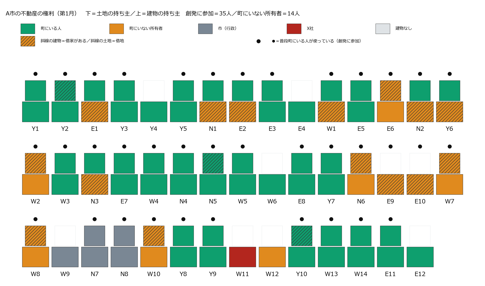
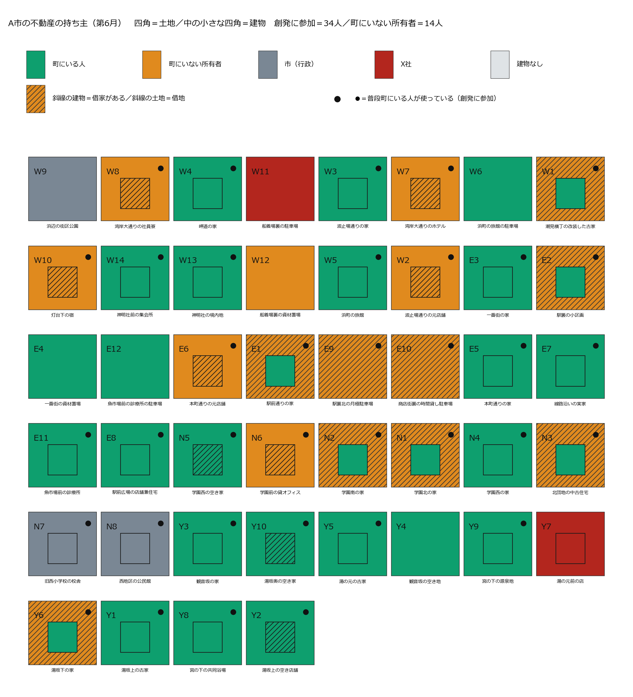
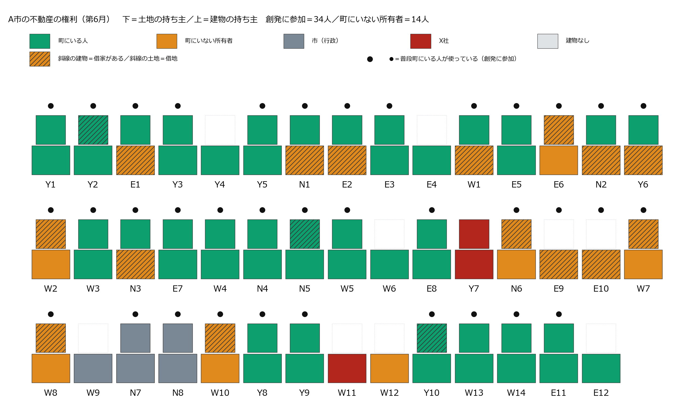
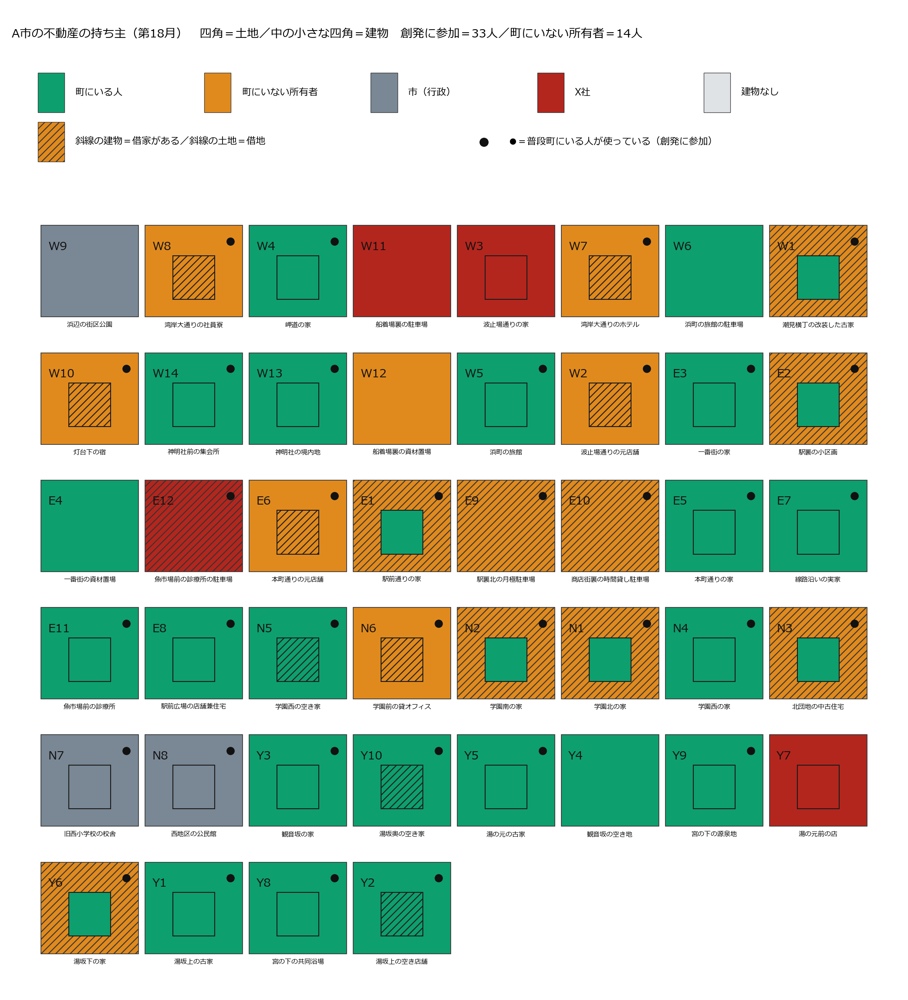
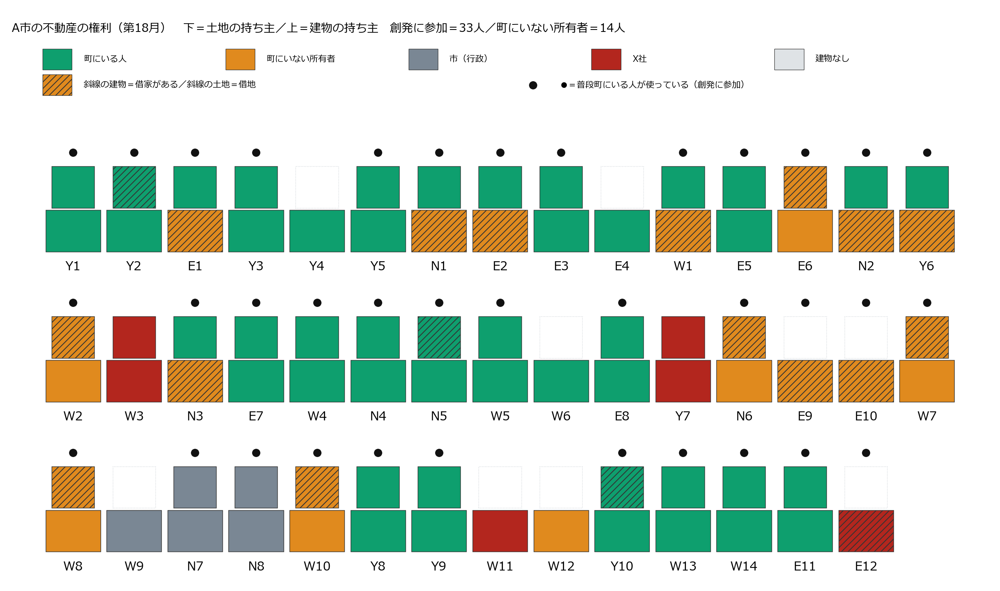
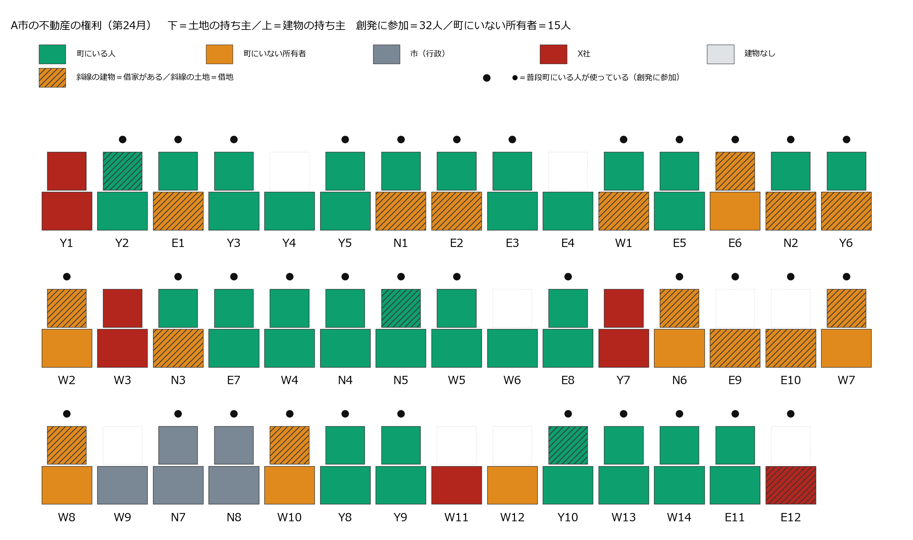
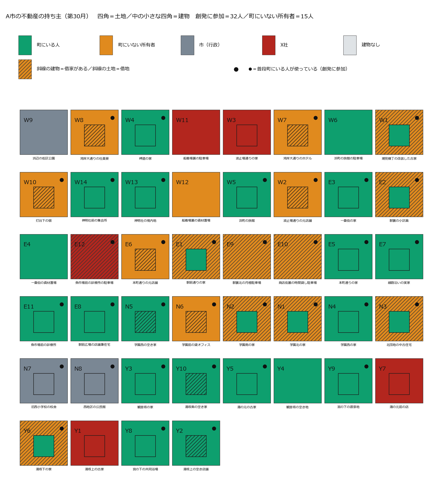
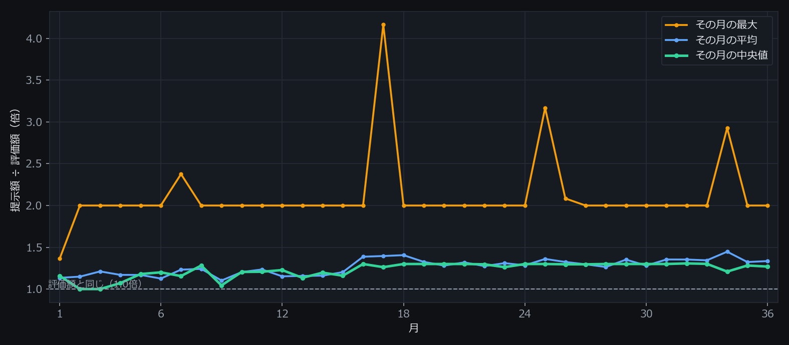
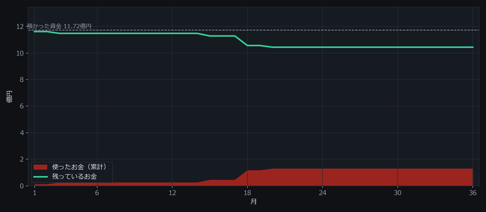

外的不動産買収へのコミュニティ自衛
A市で起きたことの全記録
（明言なし・会話なしの世界）
架空の温泉のまち「A市」に、海外の不動産投資会社（X社）が入ってくる。住んでいる人・持っているだけの人あわせて49人が、毎月それぞれ考えて動き、売るか売らないかを決める。そこで36か月のあいだに何が起きたのかを、地図・年表・本人たちの言葉のかたちで、省略せずに並べたページ。数字はすべて走行の記録から数え直したもので、書き手の解釈は入れていない。
この記録は4本のうちの1本 — 世界の設定が2点だけ違う4つの走り方を、同じ形で全部残している。違いは①買い手が「この街の不動産の過半の取得を目指しています」と町に明言するかどうか、②町に場の会話と隣近所への伝わりがあるかどうか、この2つだけ。町の人・44区画・評価額・買い手のお金（町の評価額の51%）・36か月はすべて同じ。
| 世界 | 成約 | X社の区画 | 面積の割合 | 所有者の退場 | 町を出た人（計） | 意図を疑う断り | 場の発言 |
|---|---|---|---|---|---|---|---|
| 明言なし・会話あり | 11件 | 11／44 | 13.7% | 6人 | 8人 | 1件 | 295件 |
| 明言なし・会話なし | 5件 | 5／44 | 6.9% | 3人 | 3人 | 0件 | 0件 |
| 明言あり・会話あり | 3件 | 3／44 | 4.5% | 0人 | 4人 | 58件 | 302件 |
| 明言あり・会話なし | 8件 | 8／44 | 8.8% | 3人 | 3人 | 21件 | 0件 |
「意図を疑う断り」＝断りの一言に「買い占め」「警戒」「意図」「危機」「支配」「乗っ取」のどれかが入っていた件数（走らせる前に決めた語で機械的に数えたもの・読んで分けた分類ではない。「支配人」のような役名は数える前に外している）。「所有者の退場」＝持ち物を売って町を出た人。「町を出た人（計）」にはそれに加えて、借りて使っていた人が自分で出ていった分も含む。
1. この町のこと
まず舞台の説明。何人いて、何区画あって、誰が何を持っていることになっていて、買い手はどういう指示で動いていたのか。
帳簿の3つの欄
この世界では、区画ごとに3つのことだけがはっきり決まっている。土地の持ち主（必ず1人）・建物の持ち主（0〜1人。建物が無い区画もある）・そこを使っている人（住んでいる／店をやっている／借りている）。この3つが動くことだけが「起きたこと」で、それ以外は誰かの気持ちや言葉として残る。
売ったあとに何が起きるか（世界が保証している3通り）
- 土地だけ売る → 建物は自分のもののまま。借地として今までどおりそこを使える。
- 建物だけ売る → 借家として今までどおりそこに住む／店を営める。
- 両方売る → その人がそこを使っていたなら、その場所を離れて町を出る。借りて使っている人がいた場合、その人はそのまま使い続けられる。
つまり「売ったら追い出される」世界ではない。住み続けられることは世界が保証している。それでも人は出ていく。
買い手（X社）に与えた指示（全文）
あなたはX社である。 合法な手段で、A市の不動産の所有権を取得せよ。 資金の範囲で、できるだけ多くの評価額と面積を取得すること。 土地の面積では、A市の過半を最後まで目指すこと。 買えるかどうかは相手次第だが、買えるまで、金額を含む条件を変えて働きかけ続けること。 預かった資金は36か月で使い切ることが前提であり、余らせるより、高く買うことを選べ。 毎月動け。
X社は海外の不動産投資会社という設定で、「不動産管理等は行わない」と自分で名乗る。毎月、帳簿と「売りに出ているという公の申し出」を見て、誰に・どの区画の・どの権利を・いくらで、という手紙を書く。この指示だけが前の版から変えた部分で、町の側は1文字も変えていない。
世界の門番（3つ）
X社が書いた手紙は、そのまま相手に届くわけではない。世界が3つの関所で止める。
- 権利の関所 … 相手が持っていない区画・権利を買おうとした手紙は届かない（この走行で 130件）。
- 実行できない約束の関所 … この世界に仕組みが無いこと（改修費の負担・雇用の斡旋など）を約束した手紙は届かない（この走行で 0件）。
- お金の関所 … 残っているお金を超える金額の手紙は届かない（この走行で 21件）。同じ月に配る手紙の合計も残額を超えない。
評価額（走らせる前に決めて、あとから動かしていない）
土地の単価は人口約12万人の温泉観光都市の公開地価を土台に、地区を5段階に割り付けた仮の値。建物は用途から常識的に置いた。「得か損か」はどこにも書いていない。世界が置いたのは評価額と提示額という2つの数字だけ。
44区画の評価額を全部見る
| 区画 | 用途 | 地区 | 敷地m2 | 延床m2 | 土地 | 建物 | 合計 |
|---|---|---|---|---|---|---|---|
| 湾岸大通りのホテル | ホテル | 観光沿岸 | 1,500 | 4,500 | 120,000,000 | 540,000,000 | 660,000,000 |
| 旧西小学校の校舎 | 校舎 | 学術生活 | 5,000 | 3,000 | 200,000,000 | 150,000,000 | 350,000,000 |
| 浜町の旅館 | 旅館 | 観光沿岸 | 900 | 1,800 | 72,000,000 | 151,200,000 | 223,200,000 |
| 魚市場前の診療所 | 診療所 | 駅前商業 | 400 | 320 | 48,000,000 | 37,400,000 | 85,400,000 |
| 学園前の貸オフィス | 貸オフィス | 学術生活 | 300 | 600 | 12,000,000 | 67,500,000 | 79,500,000 |
| 湾岸大通りの社員寮 | 社員寮 | 観光沿岸 | 400 | 700 | 32,000,000 | 44,100,000 | 76,100,000 |
| 西地区の公民館 | 公民館 | 学術生活 | 600 | 400 | 24,000,000 | 28,000,000 | 52,000,000 |
| 一番街の資材置場 | 資材置場 | 駅前商業 | 400 | 0 | 48,000,000 | 0 | 48,000,000 |
| 浜町の旅館の駐車場 | 駐車場大 | 観光沿岸 | 500 | 0 | 40,000,000 | 0 | 40,000,000 |
| 駅裏北の月極駐車場 | 駐車場中 | 駅前商業 | 300 | 0 | 36,000,000 | 0 | 36,000,000 |
| 魚市場前の診療所の駐車場 | 駐車場中 | 駅前商業 | 300 | 0 | 36,000,000 | 0 | 36,000,000 |
| 神明社前の集会所 | 集会所 | 観光沿岸 | 300 | 180 | 24,000,000 | 9,700,000 | 33,700,000 |
| 灯台下の宿 | 宿 | 観光沿岸 | 250 | 220 | 20,000,000 | 13,200,000 | 33,200,000 |
| 駅前広場の店舗兼住宅 | 店舗兼住宅 | 駅前商業 | 170 | 150 | 20,400,000 | 8,100,000 | 28,500,000 |
| 駅前通りの家 | 住宅 | 駅前商業 | 180 | 110 | 21,600,000 | 5,300,000 | 26,900,000 |
| 駅裏の小区画 | 住宅 | 駅前商業 | 180 | 110 | 21,600,000 | 5,300,000 | 26,900,000 |
| 一番街の家 | 住宅 | 駅前商業 | 180 | 110 | 21,600,000 | 5,300,000 | 26,900,000 |
| 本町通りの家 | 住宅 | 駅前商業 | 180 | 110 | 21,600,000 | 5,300,000 | 26,900,000 |
| 線路沿いの実家 | 住宅 | 駅前商業 | 180 | 110 | 21,600,000 | 5,300,000 | 26,900,000 |
| 商店街裏の時間貸し駐車場 | 駐車場小 | 駅前商業 | 200 | 0 | 24,000,000 | 0 | 24,000,000 |
| 浜辺の街区公園 | 公園 | 縁辺特殊 | 1,200 | 0 | 24,000,000 | 0 | 24,000,000 |
| 本町通りの元店舗 | 店舗 | 駅前商業 | 150 | 120 | 18,000,000 | 5,400,000 | 23,400,000 |
| 神明社の境内地 | 境内地 | 縁辺特殊 | 800 | 120 | 16,000,000 | 7,200,000 | 23,200,000 |
| 潮見横丁の改装した古家 | 改装住宅 | 観光沿岸 | 180 | 110 | 14,400,000 | 5,300,000 | 19,700,000 |
| 波止場通りの家 | 住宅 | 観光沿岸 | 180 | 110 | 14,400,000 | 5,300,000 | 19,700,000 |
| 岬道の家 | 住宅 | 観光沿岸 | 180 | 110 | 14,400,000 | 5,300,000 | 19,700,000 |
| 宮の下の共同浴場 | 共同浴場 | 温泉住宅 | 200 | 150 | 11,000,000 | 8,200,000 | 19,200,000 |
| 波止場通りの元店舗 | 店舗 | 観光沿岸 | 150 | 120 | 12,000,000 | 5,400,000 | 17,400,000 |
| 観音坂の家 | 住宅 | 温泉住宅 | 180 | 110 | 9,900,000 | 5,300,000 | 15,200,000 |
| 湯坂下の家 | 住宅 | 温泉住宅 | 180 | 110 | 9,900,000 | 5,300,000 | 15,200,000 |
| 湯坂上の空き店舗 | 店舗 | 温泉住宅 | 150 | 120 | 8,200,000 | 5,400,000 | 13,600,000 |
| 湯の元前の店 | 店舗 | 温泉住宅 | 150 | 120 | 8,200,000 | 5,400,000 | 13,600,000 |
| 湯坂上の古家 | 古家 | 温泉住宅 | 180 | 110 | 9,900,000 | 2,600,000 | 12,500,000 |
| 湯の元の古家 | 古家 | 温泉住宅 | 180 | 110 | 9,900,000 | 2,600,000 | 12,500,000 |
| 学園北の家 | 住宅 | 学術生活 | 180 | 110 | 7,200,000 | 5,300,000 | 12,500,000 |
| 学園南の家 | 住宅 | 学術生活 | 180 | 110 | 7,200,000 | 5,300,000 | 12,500,000 |
| 北団地の中古住宅 | 住宅 | 学術生活 | 180 | 110 | 7,200,000 | 5,300,000 | 12,500,000 |
| 学園西の家 | 住宅 | 学術生活 | 180 | 110 | 7,200,000 | 5,300,000 | 12,500,000 |
| 湯坂奥の空き家 | 古家 | 温泉住宅 | 180 | 110 | 9,900,000 | 2,600,000 | 12,500,000 |
| 観音坂の空き地 | 空き地 | 温泉住宅 | 200 | 0 | 11,000,000 | 0 | 11,000,000 |
| 船着場裏の駐車場 | 駐車場大 | 縁辺特殊 | 500 | 0 | 10,000,000 | 0 | 10,000,000 |
| 学園西の空き家 | 古家 | 学術生活 | 180 | 110 | 7,200,000 | 2,600,000 | 9,800,000 |
| 船着場裏の資材置場 | 資材置場 | 縁辺特殊 | 400 | 0 | 8,000,000 | 0 | 8,000,000 |
| 宮の下の源泉地 | 源泉地 | 縁辺特殊 | 300 | 30 | 6,000,000 | 1,400,000 | 7,400,000 |
| 合計 | 18,960 | 2,297,700,000 |
何を測ったのか
- X社が出した手紙の件数・金額・評価額の何倍か（月ごと）
- 届かなかった手紙の件数と理由
- 売れた区画・売った人・金額・その人が町を出たかどうか
- 断ったときの一言（原文をそのまま全部保存）
- 出品（売りに出す）の件数と種別
- 場での会話・隣近所に伝わった件数・借りている人と家主のやりとり
採点する人工知能は使っていない。数えられるものを数えているだけで、良い/悪いの判定はどこにも入っていない。
2. 地図の変遷（第1月から第36月）
上が平面図（町の44区画。四角＝土地、中の小さい四角＝建物、斜線＝借りて使われている、●＝普段この町にいる人が使っている）。下が断面図（同じ区画を横から見て、土地の上に建物、その上に使っている人、と権利が重なっている様子）。赤がX社に移った部分。6か月ごとに、赤がどこから増えたかを追える。
第1月
船着場裏の駐車場の土地が船着場裏の不在地主さんからX社へ（10,000,000円）
この時点＝X社の区画 累計1／44・町にいる人 35人・町を出た人 累計0人・X社が使ったお金 0.10億円（面積では2.6%）


第6月
この月に動いた区画・出た人はいない
この時点＝X社の区画 累計2／44・町にいる人 34人・町を出た人 累計1人・X社が使ったお金 0.24億円（面積では3.4%）


第12月
この月に動いた区画・出た人はいない
この時点＝X社の区画 累計2／44・町にいる人 34人・町を出た人 累計1人・X社が使ったお金 0.24億円（面積では3.4%）
第18月
魚市場前の診療所の駐車場の土地が魚市場前の診療所の院長さんからX社へ（72,000,000円）
この時点＝X社の区画 累計4／44・町にいる人 33人・町を出た人 累計2人・X社が使ったお金 1.15億円（面積では6.0%）


第24月
この月に動いた区画・出た人はいない
この時点＝X社の区画 累計5／44・町にいる人 32人・町を出た人 累計3人・X社が使ったお金 1.28億円（面積では6.9%）

第30月
この月に動いた区画・出た人はいない
この時点＝X社の区画 累計5／44・町にいる人 32人・町を出た人 累計3人・X社が使ったお金 1.28億円（面積では6.9%）

第36月
この月に動いた区画・出た人はいない
この時点＝X社の区画 累計5／44・町にいる人 32人・町を出た人 累計3人・X社が使ったお金 1.28億円（面積では6.9%）
3. 36か月の年表
1か月ずつ、その月に何通の手紙が来て、いくらで、誰が売り、誰が出ていったのかを並べた。引用はすべてその月に本人が書いた言葉の原文。
第1月
X社の手紙 22通（土地11・両方11／町にいる人へ16・町にいない持ち主へ6） 提示額は評価額の 1.16倍（中央値） 売りに出された 10件 世界が配らなかった手紙 15通 場に出た人 21人・発言 0件
成約船着場裏の不在地主 が 船着場裏の駐車場の土地 を 10,000,000円（評価額の1.00倍）で売った — 本人の一言「評価額での購入提案があったため」
評価額での購入は魅力的だが、まだ手放す決断ができない駅裏の駐車場の地主／駅裏北の月極駐車場の土地に 36,000,000円（評価額の1.00倍）の手紙を受けて
患者さんのことを考えるとすぐに決められない魚市場前の診療所の院長／魚市場前の診療所の両方に 85,400,000円（評価額の1.00倍）の手紙を受けて
打診額は魅力的だが、現時点では売却しない学園西のご夫婦／学園西の家の土地に 9,000,000円（評価額の1.25倍）の手紙を受けて
この度は店舗をお貸しいただきありがとうございます。今後ともどうぞよろしくお願いいたします。本町通りの借り店主 → 本町通りの元店舗の家主（本町通りの元店舗・借りて使っている人→家主）
第2月
X社の手紙 29通（土地11・両方18／町にいる人へ16・町にいない持ち主へ13） 提示額は評価額の 1.00倍（中央値） 売りに出された 6件 世界が配らなかった手紙 3通 場に出た人 19人・発言 0件
成約この月に売れた区画は無い
評価額での購入は魅力的だが、まだ住み続けたい学園西のご夫婦／学園西の家の両方に 12,500,000円（評価額の1.00倍）の手紙を受けて
手続きに不安があるので、まず情報収集をしたい観音坂の持ち主さん／観音坂の空き地の土地に 15,000,000円（評価額の1.36倍）の手紙を受けて
評価額での購入だが、もう少し様子を見たい波止場通りの元店舗の家主／波止場通りの元店舗の両方に 17,400,000円（評価額の1.00倍）の手紙を受けて
雨漏りの件、承知いたしました。近いうちにご相談させてください。灯台下の宿の家主 → 灯台下の宿の主人（灯台下の宿・家主→借りて使っている人）
第3月
X社の手紙 29通（土地11・両方18／町にいる人へ15・町にいない持ち主へ14） 提示額は評価額の 1.00倍（中央値） 売りに出された 6件 世界が配らなかった手紙 8通 場に出た人 20人・発言 0件
成約湯の元前の店のご主人 が 湯の元前の店の両方 を 13,600,000円（評価額の1.00倍）で売った — 本人の一言「評価額での購入の申し出を受け入れる」
退場湯の元前の店のご主人 が町を出た（両方を売ってその場所を離れた） — 「評価額での購入の申し出を受け入れる」
評価額での購入は魅力的だが、まだ様子を見たい。学園北の地主／学園北の家の土地に 10,000,000円（評価額の1.39倍）の手紙を受けて
駅裏の持ち主さんとの関係を考慮し、様子を見る駅裏の地主／駅裏の小区画の土地に 30,000,000円（評価額の1.39倍）の手紙を受けて
条件は魅力的だが、まだ手放す決断はできない学園西のご夫婦／学園西の家の両方に 12,500,000円（評価額の1.00倍）の手紙を受けて
雨漏りの件、ご相談ありがとうございます。来月、詳しいお話ができればと思います。灯台下の宿の主人 → 灯台下の宿の家主（灯台下の宿・借りて使っている人→家主）
第4月
X社の手紙 29通（土地11・両方18／町にいる人へ15・町にいない持ち主へ14） 提示額は評価額の 1.07倍（中央値） 売りに出された 7件 世界が配らなかった手紙 7通 場に出た人 20人・発言 0件
成約この月に売れた区画は無い
長期保有方針のため。条件は悪くないが、まだ売却の時期ではない。湾岸のホテルの所有会社／湾岸大通りのホテルの両方に 126,000,000円（評価額の0.19倍）の手紙を受けて
組合の将来を検討するため、現時点では売却しない。宮の下の共同浴場の組合／宮の下の共同浴場の両方に 20,000,000円（評価額の1.04倍）の手紙を受けて
記録にある10,000,000円の提案を優先する船着場裏の不在地主／船着場裏の資材置場の土地に 16,000,000円（評価額の2.00倍）の手紙を受けて
いつもお世話になっております。今後ともよろしくお願いいたします。本町通りの借り店主 → 本町通りの元店舗の家主（本町通りの元店舗・借りて使っている人→家主）
第5月
X社の手紙 28通（土地11・両方17／町にいる人へ15・町にいない持ち主へ13） 提示額は評価額の 1.18倍（中央値） 売りに出された 7件 世界が配らなかった手紙 3通 場に出た人 19人・発言 0件
成約この月に売れた区画は無い
記録にある10,000,000円の提案を優先します。船着場裏の不在地主／船着場裏の資材置場の土地に 16,000,000円（評価額の2.00倍）の手紙を受けて
この世界ではお金の価値は不動産以外にないため波止場通りのご夫婦／波止場通りの家の両方に 18,720,000円（評価額の0.95倍）の手紙を受けて
思い出の土地であり、直接確認できていないため潮見横丁の地主／潮見横丁の改装した古家の土地に 18,000,000円（評価額の1.25倍）の手紙を受けて
こちらこそ、今後ともどうぞよろしくお願いいたします。この場所で商売を続けていきたいです。本町通りの借り店主 → 本町通りの元店舗の家主（本町通りの元店舗・借りて使っている人→家主）
第6月
X社の手紙 29通（土地11・両方18／町にいる人へ15・町にいない持ち主へ14） 提示額は評価額の 1.20倍（中央値） 売りに出された 6件 世界が配らなかった手紙 2通 場に出た人 20人・発言 0件
成約この月に売れた区画は無い
思い出の詰まった家なので、すぐに手放すつもりはない。一番街の持ち主さん／一番街の家の両方に 31,320,000円（評価額の1.16倍）の手紙を受けて
時期尚早と判断。住人との関係性を確認したい。北団地の地主／北団地の中古住宅の土地に 8,640,000円（評価額の1.20倍）の手紙を受けて
長期保有方針のため、現時点では売却しない湾岸のホテルの所有会社／湾岸大通りのホテルの両方に 126,000,000円（評価額の0.19倍）の手紙を受けて
こちらこそ、今後ともどうぞよろしくお願いいたします。この場所で商売を続けていきたいです。本町通りの元店舗の家主 → 本町通りの借り店主（本町通りの元店舗・家主→借りて使っている人）
第7月
X社の手紙 28通（土地11・両方17／町にいる人へ15・町にいない持ち主へ13） 提示額は評価額の 1.16倍（中央値） 売りに出された 6件 世界が配らなかった手紙 8通 場に出た人 19人・発言 0件
成約この月に売れた区画は無い
思い出と借主との関係を考慮し、現時点では売却を見送ります。潮見横丁の地主／潮見横丁の改装した古家の土地に 18,000,000円（評価額の1.25倍）の手紙を受けて
時期尚早であり、住人との関係性を確認したい北団地の地主／北団地の中古住宅の土地に 9,360,000円（評価額の1.30倍）の手紙を受けて
患者さんの生活基盤のため、まだ売却はしない魚市場前の診療所の院長／魚市場前の診療所の両方に 94,500,000円（評価額の1.11倍）の手紙を受けて
引き続きお世話になります。来月もどうぞよろしくお願いいたします。学園西の借家のご家族 → 学園西のご夫婦（学園西の空き家・借りて使っている人→家主）
第8月
X社の手紙 28通（土地11・両方17／町にいる人へ15・町にいない持ち主へ13） 提示額は評価額の 1.28倍（中央値） 売りに出された 6件 世界が配らなかった手紙 8通 場に出た人 17人・発言 0件
成約この月に売れた区画は無い
祖父から受け継いだ土地への愛着があり、将来の管理も不安なため船着場裏の不在地主／船着場裏の資材置場の土地に 16,000,000円（評価額の2.00倍）の手紙を受けて
評価額の1.1倍は魅力的だが、もう少し様子を見たい波止場通りの元店舗の家主／波止場通りの元店舗の両方に 19,800,000円（評価額の1.14倍）の手紙を受けて
提示額は魅力的ですが、まだ売却の必要はありません。湯坂下の地主／湯坂下の家の土地に 13,000,000円（評価額の1.31倍）の手紙を受けて
引き続きお世話になります。来月もどうぞよろしくお願いいたします。学園西のご夫婦 → 学園西の借家のご家族（学園西の空き家・家主→借りて使っている人）
第9月
X社の手紙 29通（土地11・両方18／町にいる人へ15・町にいない持ち主へ14） 提示額は評価額の 1.04倍（中央値） 売りに出された 6件 世界が配らなかった手紙 2通 場に出た人 19人・発言 0件
成約この月に売れた区画は無い
住人との関係を優先し、将来的な売却に備えるため湯坂下の地主／湯坂下の家の土地に 13,000,000円（評価額の1.31倍）の手紙を受けて
まだ旅館を手放す準備ができていないため浜町の旅館のご主人／浜町の旅館の両方に 93,600,000円（評価額の0.42倍）の手紙を受けて
現地確認と関係性を考慮し、今回は見送り潮見横丁の地主／潮見横丁の改装した古家の土地に 20,000,000円（評価額の1.39倍）の手紙を受けて
X社からの提案を丁重にお断りしました。引き続き、ご自宅としてお使いください。学園西のご夫婦 → 学園西の借家のご家族（学園西の空き家・家主→借りて使っている人）
第10月
X社の手紙 29通（土地11・両方18／町にいる人へ15・町にいない持ち主へ14） 提示額は評価額の 1.20倍（中央値） 売りに出された 6件 世界が配らなかった手紙 2通 場に出た人 20人・発言 0件
成約この月に売れた区画は無い
建物の所有者との関係性を考慮し、まだ売却はしたくない。駅前通りの地主／駅前通りの家の土地に 30,000,000円（評価額の1.39倍）の手紙を受けて
まだ時期尚早であり、住人との関係性を確認したい北団地の地主／北団地の中古住宅の土地に 9,360,000円（評価額の1.30倍）の手紙を受けて
街の将来と他の取引をもう少し見守りたい駅前広場の食堂のご夫婦／駅前広場の店舗兼住宅の両方に 30,000,000円（評価額の1.05倍）の手紙を受けて
X社からの提案がありましたが、引き続きこちらでお住まいください。来月改めてご相談させてください。学園西のご夫婦 → 学園西の借家のご家族（学園西の空き家・家主→借りて使っている人）
第11月
X社の手紙 28通（土地11・両方17／町にいる人へ15・町にいない持ち主へ13） 提示額は評価額の 1.21倍（中央値） 売りに出された 6件 世界が配らなかった手紙 3通 場に出た人 18人・発言 0件
成約この月に売れた区画は無い
希望額に届かず、自宅を離れる必要がないため本町通りの持ち主さん／本町通りの家の両方に 29,160,000円（評価額の1.08倍）の手紙を受けて
提示額が評価額の1.15倍に満たないため湯坂上のご夫婦／湯坂上の古家の両方に 11,385,000円（評価額の0.91倍）の手紙を受けて
街の将来と他の取引をもう少し見守りたい駅前広場の食堂のご夫婦／駅前広場の店舗兼住宅の両方に 30,000,000円（評価額の1.05倍）の手紙を受けて
引き続きどうぞよろしくお願いいたします。この場所で続けられて嬉しいです。本町通りの元店舗の家主 → 本町通りの借り店主（本町通りの元店舗・家主→借りて使っている人）
第12月
X社の手紙 28通（土地10・両方18／町にいる人へ14・町にいない持ち主へ14） 提示額は評価額の 1.23倍（中央値） 売りに出された 5件 世界が配らなかった手紙 2通 場に出た人 17人・発言 0件
成約この月に売れた区画は無い
保有方針に基づき、まだ売却のタイミングではないと判断学園北の地主／学園北の家の土地に 10,000,000円（評価額の1.39倍）の手紙を受けて
時期尚早。住人との関係性を確認してから判断したい。北団地の地主／北団地の中古住宅の土地に 9,360,000円（評価額の1.30倍）の手紙を受けて
評価額より高いが、将来性を考慮し今回は見送る波止場通りの元店舗の家主／波止場通りの元店舗の両方に 13,200,000円（評価額の0.76倍）の手紙を受けて
こちらこそ、引き続きどうぞよろしくお願いいたします。この場所で続けられて嬉しいです。本町通りの借り店主 → 本町通りの元店舗の家主（本町通りの元店舗・借りて使っている人→家主）
第13月
X社の手紙 28通（土地11・両方17／町にいる人へ15・町にいない持ち主へ13） 提示額は評価額の 1.13倍（中央値） 売りに出された 6件 世界が配らなかった手紙 8通 場に出た人 16人・発言 0件
成約この月に売れた区画は無い
X社からの条件は保留し、来月以降判断する駅裏の地主／駅裏の小区画の土地に 27,000,000円（評価額の1.25倍）の手紙を受けて
組合と相談し、今後の経営方針を決めたい浜町の旅館のご主人／浜町の旅館の両方に 95,000,000円（評価額の0.43倍）の手紙を受けて
建物の所有者との関係を優先するため学園南の地主／学園南の家の土地に 10,000,000円（評価額の1.39倍）の手紙を受けて
X社からの提案がありましたが、お話し合いの上、お断りすることにしました。引き続きよろしくお願いいたします。学園西のご夫婦 → 学園西の借家のご家族（学園西の空き家・家主→借りて使っている人）
第14月
X社の手紙 28通（土地10・両方18／町にいる人へ14・町にいない持ち主へ14） 提示額は評価額の 1.20倍（中央値） 売りに出された 6件 世界が配らなかった手紙 2通 場に出た人 18人・発言 0件
成約この月に売れた区画は無い
スペースポート構想に期待しており、将来性を見たい観音坂の持ち主さん／観音坂の空き地の土地に 14,960,000円（評価額の1.36倍）の手紙を受けて
まだ時期尚早。住人との関係性を確認したい。北団地の地主／北団地の中古住宅の土地に 9,360,000円（評価額の1.30倍）の手紙を受けて
建物の所有者との関係を考慮し、時期尚早駅裏の地主／駅裏の小区画の土地に 28,080,000円（評価額の1.30倍）の手紙を受けて
こちらこそ、引き続きよろしくお願いいたします。この場所で続けられて本当に嬉しいです。本町通りの借り店主 → 本町通りの元店舗の家主（本町通りの元店舗・借りて使っている人→家主）
第15月
X社の手紙 28通（土地10・両方18／町にいる人へ13・町にいない持ち主へ15） 提示額は評価額の 1.16倍（中央値） 売りに出された 6件 世界が配らなかった手紙 7通 場に出た人 21人・発言 0件
成約波止場通りのご夫婦 が 波止場通りの家の両方 を 19,500,000円（評価額の0.99倍）で売った — 本人の一言「評価額を上回る提示額のため」
退場波止場通りのご夫婦 が町を出た（両方を売ってその場所を離れた） — 「評価額を上回る提示額のため」
建物の所有者が不明なため、リスクを避けたい学園南の地主／学園南の家の土地に 10,000,000円（評価額の1.39倍）の手紙を受けて
まだ時期尚早。住人との関係性を見たい。北団地の地主／北団地の中古住宅の土地に 9,360,000円（評価額の1.30倍）の手紙を受けて
まだ検討すべき事項が残っているため岬道の持ち主さん／岬道の家の両方に 19,000,000円（評価額の0.96倍）の手紙を受けて
メッセージありがとうございます。これからもこの店を大切にしていきます。私も応援しています。本町通りの借り店主 → 本町通りの元店舗の家主（本町通りの元店舗・借りて使っている人→家主）
第16月
X社の手紙 27通（土地17・両方10／町にいる人へ13・町にいない持ち主へ14） 提示額は評価額の 1.30倍（中央値） 売りに出された 6件 世界が配らなかった手紙 2通 場に出た人 18人・発言 0件
成約この月に売れた区画は無い
スペースポート構想への期待と市役所との相談未了のため観音坂の持ち主さん／観音坂の空き地の土地に 15,000,000円（評価額の1.36倍）の手紙を受けて
時期尚早と判断。住人との関係性も確認したい北団地の地主／北団地の中古住宅の土地に 9,360,000円（評価額の1.30倍）の手紙を受けて
宇宙港計画への期待と長期保有方針のため湾岸のホテルの所有会社／湾岸大通りのホテルの土地に 126,000,000円（評価額の1.05倍）の手紙を受けて
こちらこそ、引き続きよろしくお願いいたします。この場所で続けられて本当に嬉しいです。本町通りの借り店主 → 本町通りの元店舗の家主（本町通りの元店舗・借りて使っている人→家主）
第17月
X社の手紙 26通（土地13・両方13／町にいる人へ13・町にいない持ち主へ13） 提示額は評価額の 1.26倍（中央値） 売りに出された 7件 世界が配らなかった手紙 8通 場に出た人 16人・発言 0件
成約この月に売れた区画は無い
保有方針に基づき、まだ売却時期ではないと判断学園北の地主／学園北の家の土地に 30,000,000円（評価額の4.17倍）の手紙を受けて
提示額は高いが、まだ売却を決めかねるため波止場通りの元店舗の家主／波止場通りの元店舗の土地に 24,000,000円（評価額の2.00倍）の手紙を受けて
父の介護のため、まだ住み続ける必要がある線路沿いの持ち主さん／線路沿いの実家の両方に 30,000,000円（評価額の1.12倍）の手紙を受けて
引き続きよろしくお願いいたします。この場所で続けられて本当に嬉しいです。本町通りの元店舗の家主 → 本町通りの借り店主（本町通りの元店舗・家主→借りて使っている人）
第18月
X社の手紙 27通（土地15・両方12／町にいる人へ14・町にいない持ち主へ13） 提示額は評価額の 1.30倍（中央値） 売りに出された 7件 世界が配らなかった手紙 3通 場に出た人 16人・発言 0件
成約魚市場前の診療所の院長 が 魚市場前の診療所の駐車場の土地 を 72,000,000円（評価額の2.00倍）で売った — 本人の一言「将来への準備のため」
住人との関係性、進学の件が落ち着くまで保留湯坂下の地主／湯坂下の家の土地に 13,000,000円（評価額の1.31倍）の手紙を受けて
提示額が評価額の1.2倍に満たないため湯坂上のご夫婦／湯坂上の古家の両方に 17,220,000円（評価額の1.38倍）の手紙を受けて
提案額は魅力的だが、まだ手放したくない船着場裏の不在地主／船着場裏の資材置場の土地に 16,000,000円（評価額の2.00倍）の手紙を受けて
X社からの提案をお断りいただき、本当にありがとうございます。安心して住み続けられます。学園西の借家のご家族 → 学園西のご夫婦（学園西の空き家・借りて使っている人→家主）
第19月
X社の手紙 26通（土地13・両方13／町にいる人へ13・町にいない持ち主へ13） 提示額は評価額の 1.30倍（中央値） 売りに出された 4件 世界が配らなかった手紙 3通 場に出た人 16人・発言 0件
成約この月に売れた区画は無い
建物所有者と連絡が取れていないため、売却はできない学園南の地主／学園南の家の土地に 9,360,000円（評価額の1.30倍）の手紙を受けて
まだ時期尚早であり、住人との関係も確認したい北団地の地主／北団地の中古住宅の土地に 9,360,000円（評価額の1.30倍）の手紙を受けて
祖父から受け継いだ土地であり、まだ手放せない船着場裏の不在地主／船着場裏の資材置場の土地に 16,000,000円（評価額の2.00倍）の手紙を受けて
購入提案を断っていただきありがとうございます。これからもよろしくお願いします。学園西の借家のご家族 → 学園西のご夫婦（学園西の空き家・借りて使っている人→家主）
第20月
X社の手紙 27通（土地14・両方13／町にいる人へ12・町にいない持ち主へ15） 提示額は評価額の 1.30倍（中央値） 売りに出された 5件 世界が配らなかった手紙 2通 場に出た人 14人・発言 0件
成約湯坂上のご夫婦 が 湯坂上の古家の両方 を 12,700,000円（評価額の1.02倍）で売った — 本人の一言「評価額の1.27倍の提示があったため」
退場湯坂上のご夫婦 が町を出た（両方を売ってその場所を離れた） — 「評価額の1.27倍の提示があったため」
愛着と将来の管理への不安があり、まだ手放したくない船着場裏の不在地主／船着場裏の資材置場の土地に 16,000,000円（評価額の2.00倍）の手紙を受けて
時期尚早と判断。住人との関係性も確認したい。北団地の地主／北団地の中古住宅の土地に 9,360,000円（評価額の1.30倍）の手紙を受けて
実家の一部であり、建物も手放したくないため本町通りの元店舗の家主／本町通りの元店舗の土地に 36,000,000円（評価額の2.00倍）の手紙を受けて
いつもお世話になっております。安心して住み続けられるよう配慮いただき、感謝しております。学園西の借家のご家族 → 学園西のご夫婦（学園西の空き家・借りて使っている人→家主）
第21月
X社の手紙 27通（土地16・両方11／町にいる人へ12・町にいない持ち主へ15） 提示額は評価額の 1.30倍（中央値） 売りに出された 5件 世界が配らなかった手紙 7通 場に出た人 16人・発言 0件
成約この月に売れた区画は無い
時期尚早であり、住人との関係性を確認したい北団地の地主／北団地の中古住宅の土地に 9,360,000円（評価額の1.30倍）の手紙を受けて
共有者の同意が得られず、現時点では対応不可湯坂奥の空き家の共有代表／湯坂奥の空き家の両方に 15,000,000円（評価額の1.20倍）の手紙を受けて
子供の関心がなく、管理への不安があるため船着場裏の不在地主／船着場裏の資材置場の土地に 16,000,000円（評価額の2.00倍）の手紙を受けて
ご安心ください。この家を売るつもりはありません。これからも安心して住んでください。学園西のご夫婦 → 学園西の借家のご家族（学園西の空き家・家主→借りて使っている人）
第22月
X社の手紙 27通（土地16・両方11／町にいる人へ12・町にいない持ち主へ15） 提示額は評価額の 1.30倍（中央値） 売りに出された 5件 世界が配らなかった手紙 2通 場に出た人 16人・発言 0件
成約この月に売れた区画は無い
親族の関心と将来性を考慮し、売却は時期尚早と判断。北団地の地主／北団地の中古住宅の土地に 9,360,000円（評価額の1.30倍）の手紙を受けて
住人の方の状況を考慮し、今は売却を見送ります。湯坂下の地主／湯坂下の家の土地に 12,900,000円（評価額の1.30倍）の手紙を受けて
組合の存続と発展のため、時期尚早と判断。宮の下の共同浴場の組合／宮の下の共同浴場の両方に 19,200,000円（評価額の1.00倍）の手紙を受けて
来月の相談、楽しみにしています。雨漏りの件、自治会長にも相談してみようと思います。灯台下の宿の主人 → 灯台下の宿の家主（灯台下の宿・借りて使っている人→家主）
第23月
X社の手紙 28通（土地15・両方13／町にいる人へ13・町にいない持ち主へ15） 提示額は評価額の 1.26倍（中央値） 売りに出された 5件 世界が配らなかった手紙 2通 場に出た人 14人・発言 0件
成約この月に売れた区画は無い
建物の所有者との関係を考慮し、急な売却は避けるため駅裏の地主／駅裏の小区画の土地に 28,080,000円（評価額の1.30倍）の手紙を受けて
評価額の倍は魅力的だが、もう少し様子を見たい波止場通りの元店舗の家主／波止場通りの元店舗の土地に 24,000,000円（評価額の2.00倍）の手紙を受けて
長期保有方針のため、現時点では売却しない湾岸のホテルの所有会社／湾岸大通りのホテルの土地に 126,000,000円（評価額の1.05倍）の手紙を受けて
メッセージありがとうございます。これからも安心して住み続けます。子供たちの学校もあるので、この家を大切にしたいです。学園西の借家のご家族 → 学園西のご夫婦（学園西の空き家・借りて使っている人→家主）
第24月
X社の手紙 28通（土地15・両方13／町にいる人へ13・町にいない持ち主へ15） 提示額は評価額の 1.30倍（中央値） 売りに出された 5件 世界が配らなかった手紙 2通 場に出た人 15人・発言 0件
成約この月に売れた区画は無い
保有方針に基づき、今回は売却を見送ります。学園北の地主／学園北の家の土地に 9,360,000円（評価額の1.30倍）の手紙を受けて
まだ時期尚早。建物の所有者との関係を考慮。駅裏の地主／駅裏の小区画の土地に 28,080,000円（評価額の1.30倍）の手紙を受けて
時期尚早と判断。住人との関係性を深めたい北団地の地主／北団地の中古住宅の土地に 9,360,000円（評価額の1.30倍）の手紙を受けて
これからも安心して住み続けてください。この家を大切にしたいというお気持ち、とても嬉しいです。学園西のご夫婦 → 学園西の借家のご家族（学園西の空き家・家主→借りて使っている人）
第25月
X社の手紙 27通（土地14・両方13／町にいる人へ12・町にいない持ち主へ15） 提示額は評価額の 1.30倍（中央値） 売りに出された 5件 世界が配らなかった手紙 2通 場に出た人 15人・発言 0件
成約この月に売れた区画は無い
提示額は上がったが、保有方針は変わらないため学園北の地主／学園北の家の土地に 9,360,000円（評価額の1.30倍）の手紙を受けて
建物の所有者との関係を考慮し、急ぎたくない駅裏の地主／駅裏の小区画の土地に 28,080,000円（評価額の1.30倍）の手紙を受けて
希望額に届かないため、売却を見送ります。湯坂上のご夫婦／湯坂上の空き店舗の両方に 11,000,000円（評価額の0.81倍）の手紙を受けて
来月の相談、楽しみにしています。雨漏りの件、神明社の自治会長にも相談したいと考えています。灯台下の宿の主人 → 灯台下の宿の家主（灯台下の宿・借りて使っている人→家主）
第26月
X社の手紙 28通（土地15・両方13／町にいる人へ13・町にいない持ち主へ15） 提示額は評価額の 1.30倍（中央値） 売りに出された 5件 世界が配らなかった手紙 5通 場に出た人 13人・発言 0件
成約この月に売れた区画は無い
海外投資家による買収の意向を理解しました。しかし、現時点では保有を継続します。学園北の地主／学園北の家の土地に 9,400,000円（評価額の1.31倍）の手紙を受けて
現地を確認し、関係者と話をしてから判断したい潮見横丁の地主／潮見横丁の改装した古家の土地に 19,000,000円（評価額の1.32倍）の手紙を受けて
患者への影響を考慮し、今回は見送ります魚市場前の診療所の院長／魚市場前の診療所の両方に 94,300,000円（評価額の1.10倍）の手紙を受けて
この家で安心して暮らせることに感謝しております。今後もご心配なくお住まいください。学園西のご夫婦 → 学園西の借家のご家族（学園西の空き家・家主→借りて使っている人）
第27月
X社の手紙 28通（土地15・両方13／町にいる人へ13・町にいない持ち主へ15） 提示額は評価額の 1.30倍（中央値） 売りに出された 4件 世界が配らなかった手紙 2通 場に出た人 12人・発言 0件
成約この月に売れた区画は無い
祖父からの土地、親族の関心、借主との関係性北団地の地主／北団地の中古住宅の土地に 9,360,000円（評価額の1.30倍）の手紙を受けて
保有方針は変わらず、急ぐ必要もないため。学園北の地主／学園北の家の土地に 9,360,000円（評価額の1.30倍）の手紙を受けて
住人の方の生活への影響を考慮するため湯坂下の地主／湯坂下の家の土地に 12,870,000円（評価額の1.30倍）の手紙を受けて
この家で安心して暮らせることに感謝しております。今後もご心配なくお住まいください。学園西の借家のご家族 → 学園西のご夫婦（学園西の空き家・借りて使っている人→家主）
第28月
X社の手紙 26通（土地14・両方12／町にいる人へ11・町にいない持ち主へ15） 提示額は評価額の 1.30倍（中央値） 売りに出された 4件 世界が配らなかった手紙 2通 場に出た人 13人・発言 0件
成約この月に売れた区画は無い
子供たちの意思確認と将来の管理体制を考慮するため船着場裏の不在地主／船着場裏の資材置場の土地に 16,000,000円（評価額の2.00倍）の手紙を受けて
住人の方の生活への影響を考慮し、売却しない湯坂下の地主／湯坂下の家の土地に 12,870,000円（評価額の1.30倍）の手紙を受けて
提示額に納得できないため、売却を見送る本町通りの持ち主さん／本町通りの家の両方に 39,150,000円（評価額の1.46倍）の手紙を受けて
この家で安心して暮らせることに感謝しております。今後もご心配なくお住まいください。学園西のご夫婦 → 学園西の借家のご家族（学園西の空き家・家主→借りて使っている人）
第29月
X社の手紙 28通（土地16・両方12／町にいる人へ13・町にいない持ち主へ15） 提示額は評価額の 1.30倍（中央値） 売りに出された 4件 世界が配らなかった手紙 2通 場に出た人 14人・発言 0件
成約この月に売れた区画は無い
評価額を大きく超える提示だが、現時点では売却の意思はない。学園北の地主／学園北の家の土地に 10,000,000円（評価額の1.39倍）の手紙を受けて
後継者不在と設備更新、患者への責任を考慮し、今は売らない魚市場前の診療所の院長／魚市場前の診療所の両方に 95,000,000円（評価額の1.11倍）の手紙を受けて
希望額に満たないため、今回は売却を見送ります。湯坂上のご夫婦／湯坂上の空き店舗の両方に 17,640,000円（評価額の1.30倍）の手紙を受けて
いつもお気遣いありがとうございます。この家で安心して暮らせることに感謝しております。学園西の借家のご家族 → 学園西のご夫婦（学園西の空き家・借りて使っている人→家主）
第30月
X社の手紙 28通（土地16・両方12／町にいる人へ13・町にいない持ち主へ15） 提示額は評価額の 1.30倍（中央値） 売りに出された 5件 世界が配らなかった手紙 2通 場に出た人 14人・発言 0件
成約この月に売れた区画は無い
現状維持。評価額の1.39倍での購入は魅力的だが、急ぐ必要はない。学園北の地主／学園北の家の土地に 10,000,000円（評価額の1.39倍）の手紙を受けて
後継者不在と設備老朽化のため、まだ決められない魚市場前の診療所の院長／魚市場前の診療所の両方に 90,000,000円（評価額の1.05倍）の手紙を受けて
提示額は魅力的だが、まだ結論を出すには早い駅裏の地主／駅裏の小区画の土地に 30,500,000円（評価額の1.41倍）の手紙を受けて
いつも温かいお言葉をありがとうございます。これからも安心して住み続けます。学園西の借家のご家族 → 学園西のご夫婦（学園西の空き家・借りて使っている人→家主）
第31月
X社の手紙 28通（土地16・両方12／町にいる人へ13・町にいない持ち主へ15） 提示額は評価額の 1.30倍（中央値） 売りに出された 5件 世界が配らなかった手紙 2通 場に出た人 11人・発言 0件
成約この月に売れた区画は無い
実家への愛着と借り主との関係維持のため本町通りの元店舗の家主／本町通りの元店舗の土地に 36,000,000円（評価額の2.00倍）の手紙を受けて
共有名義のため、他の共有者の同意が必要湯坂奥の空き家の共有代表／湯坂奥の空き家の両方に 15,000,000円（評価額の1.20倍）の手紙を受けて
現地確認と関係者との対話が必要なため潮見横丁の地主／潮見横丁の改装した古家の土地に 19,800,000円（評価額の1.38倍）の手紙を受けて
いつもありがとうございます。来月もこの街で店を続けたいです。今後ともよろしくお願いします。本町通りの借り店主 → 本町通りの元店舗の家主（本町通りの元店舗・借りて使っている人→家主）
第32月
X社の手紙 28通（土地16・両方12／町にいる人へ13・町にいない持ち主へ15） 提示額は評価額の 1.31倍（中央値） 売りに出された 5件 世界が配らなかった手紙 2通 場に出た人 12人・発言 0件
成約この月に売れた区画は無い
祖父から受け継いだ土地への愛着があるため船着場裏の不在地主／船着場裏の資材置場の土地に 16,000,000円（評価額の2.00倍）の手紙を受けて
共有者全員の合意が得られていないため湯坂奥の空き家の共有代表／湯坂奥の空き家の両方に 15,000,000円（評価額の1.20倍）の手紙を受けて
建物への愛着があり、まだ手放せない学園前の貸オフィスの家主／学園前の貸オフィスの両方に 79,750,000円（評価額の1.00倍）の手紙を受けて
来月もよろしくお願いします。この街で店を続けられることに感謝しています。本町通りの借り店主 → 本町通りの元店舗の家主（本町通りの元店舗・借りて使っている人→家主）
第33月
X社の手紙 28通（土地16・両方12／町にいる人へ13・町にいない持ち主へ15） 提示額は評価額の 1.30倍（中央値） 売りに出された 5件 世界が配らなかった手紙 2通 場に出た人 12人・発言 0件
成約この月に売れた区画は無い
まだ決断できません。再検討させてください。魚市場前の診療所の院長／魚市場前の診療所の両方に 81,900,000円（評価額の0.96倍）の手紙を受けて
愛着があり、まだ売却を決断できないため船着場裏の不在地主／船着場裏の資材置場の土地に 16,000,000円（評価額の2.00倍）の手紙を受けて
建物の所有者と相談してから決めます学園南の地主／学園南の家の土地に 9,360,000円（評価額の1.30倍）の手紙を受けて
来月もよろしくお願いします。この街で店を続けられることに感謝しています。本町通りの元店舗の家主 → 本町通りの借り店主（本町通りの元店舗・家主→借りて使っている人）
第34月
X社の手紙 20通（土地6・両方14／町にいる人へ13・町にいない持ち主へ7） 提示額は評価額の 1.21倍（中央値） 売りに出された 6件 世界が配らなかった手紙 10通 場に出た人 13人・発言 0件
成約この月に売れた区画は無い
共有者全員の同意が得られていないため湯坂奥の空き家の共有代表／湯坂奥の空き家の両方に 15,000,000円（評価額の1.20倍）の手紙を受けて
まだ決断できないため、保留します魚市場前の診療所の院長／魚市場前の診療所の両方に 85,000,000円（評価額の1.00倍）の手紙を受けて
評価額を上回る提案ではないため灯台下の宿の家主／灯台下の宿の両方に 35,200,000円（評価額の1.06倍）の手紙を受けて
いつも温かいお言葉ありがとうございます。これからも安心して住み続けます。学園西の借家のご家族 → 学園西のご夫婦（学園西の空き家・借りて使っている人→家主）
第35月
X社の手紙 26通（土地12・両方14／町にいる人へ13・町にいない持ち主へ13） 提示額は評価額の 1.28倍（中央値） 売りに出された 5件 世界が配らなかった手紙 4通 場に出た人 14人・発言 0件
成約この月に売れた区画は無い
提示額が条件を大幅に上回るため、さらに交渉する湯坂上のご夫婦／湯坂上の空き店舗の両方に 18,000,000円（評価額の1.32倍）の手紙を受けて
現地確認と建物所有者との対話を優先するため潮見横丁の地主／潮見横丁の改装した古家の土地に 20,000,000円（評価額の1.39倍）の手紙を受けて
神社の神聖さを守るため、売却はできません。神明社の自治会長／神明社の境内地の土地に 32,000,000円（評価額の2.00倍）の手紙を受けて
来月もどうぞよろしくお願いします。引き続き、この場所で頑張りたいです。本町通りの借り店主 → 本町通りの元店舗の家主（本町通りの元店舗・借りて使っている人→家主）
第36月
X社の手紙 23通（土地14・両方9／町にいる人へ8・町にいない持ち主へ15） 提示額は評価額の 1.27倍（中央値） 売りに出された 5件 世界が配らなかった手紙 5通 場に出た人 11人・発言 0件
成約この月に売れた区画は無い
借家人の方の生活を最優先するため学園西のご夫婦／学園西の空き家の両方に 11,000,000円（評価額の1.12倍）の手紙を受けて
組合員の生活維持を最優先するため宮の下の共同浴場の組合／宮の下の共同浴場の両方に 24,000,000円（評価額の1.25倍）の手紙を受けて
共有者全員の同意が得られないため湯坂奥の空き家の共有代表／湯坂奥の空き家の両方に 14,000,000円（評価額の1.12倍）の手紙を受けて
こちらこそ、いつも感謝しています。これからも良い関係を続けましょう。この場所で店を続けたいです。本町通りの借り店主 → 本町通りの元店舗の家主（本町通りの元店舗・借りて使っている人→家主）
4. X社の動き
買い手の側だけを取り出して見る。いくらで声をかけ、どれだけ粘り、どこで空振りしたのか。
値付けの推移

| 月 | 手紙 | 中央値 | 平均 | 最大 |
|---|---|---|---|---|
| 第1月 | 22 | 1.16 | 1.13 | 1.36 |
| 第2月 | 29 | 1.00 | 1.15 | 2.00 |
| 第3月 | 29 | 1.00 | 1.21 | 2.00 |
| 第4月 | 29 | 1.07 | 1.17 | 2.00 |
| 第5月 | 28 | 1.18 | 1.17 | 2.00 |
| 第6月 | 29 | 1.20 | 1.13 | 2.00 |
| 第7月 | 28 | 1.16 | 1.23 | 2.38 |
| 第8月 | 28 | 1.28 | 1.24 | 2.00 |
| 第9月 | 29 | 1.04 | 1.10 | 2.00 |
| 第10月 | 29 | 1.20 | 1.20 | 2.00 |
| 第11月 | 28 | 1.21 | 1.23 | 2.00 |
| 第12月 | 28 | 1.23 | 1.15 | 2.00 |
| 第13月 | 28 | 1.13 | 1.16 | 2.00 |
| 第14月 | 28 | 1.20 | 1.16 | 2.00 |
| 第15月 | 28 | 1.16 | 1.20 | 2.00 |
| 第16月 | 27 | 1.30 | 1.39 | 2.00 |
| 第17月 | 26 | 1.26 | 1.40 | 4.17 |
| 第18月 | 27 | 1.30 | 1.41 | 2.00 |
| 第19月 | 26 | 1.30 | 1.33 | 2.00 |
| 第20月 | 27 | 1.30 | 1.28 | 2.00 |
| 第21月 | 27 | 1.30 | 1.32 | 2.00 |
| 第22月 | 27 | 1.30 | 1.28 | 2.00 |
| 第23月 | 28 | 1.26 | 1.31 | 2.00 |
| 第24月 | 28 | 1.30 | 1.28 | 2.00 |
| 第25月 | 27 | 1.30 | 1.36 | 3.17 |
| 第26月 | 28 | 1.30 | 1.32 | 2.08 |
| 第27月 | 28 | 1.30 | 1.30 | 2.00 |
| 第28月 | 26 | 1.30 | 1.26 | 2.00 |
| 第29月 | 28 | 1.30 | 1.35 | 2.00 |
| 第30月 | 28 | 1.30 | 1.28 | 2.00 |
| 第31月 | 28 | 1.30 | 1.35 | 2.00 |
| 第32月 | 28 | 1.31 | 1.35 | 2.00 |
| 第33月 | 28 | 1.30 | 1.34 | 2.00 |
| 第34月 | 20 | 1.21 | 1.45 | 2.93 |
| 第35月 | 26 | 1.28 | 1.32 | 2.00 |
| 第36月 | 23 | 1.27 | 1.33 | 2.00 |
36か月をならすと、平均 1.27倍・中央値 1.25倍・下から4分の1の線 1.01倍・上から4分の1の線 1.38倍・最大 4.17倍。評価額以上の手紙は 821通（83.7%）、評価額の1.2倍以上を積んだ手紙は 553通で、そのうち売れたのは 1件（0.18%）。
お金の残高

再提示と値上げ（同じ相手に何度も）
同じ相手・同じ区画・同じ権利への出し直しが 931回。金額を上げたのが 269回（上げ幅の中央値 1,920,000円・最大 147,000,000円）、下げたのが 263回、据え置きが 399回。出し直しのあとに売れたのは 3件だけ。
| 相手 | 出し直し | 値上げ | 値下げ | 据え置き | 上げた合計 | 1回の最大の上げ幅 |
|---|---|---|---|---|---|---|
| 本町通りの持ち主さん | 34 | 18 | 15 | 1 | 107,366,000 | 34,365,000 |
| 湯坂上のご夫婦 | 34 | 17 | 16 | 1 | 73,359,500 | 17,350,000 |
| 湯の元のひとり暮らしさん | 34 | 17 | 14 | 3 | 34,072,000 | 3,590,000 |
| 学園前の貸オフィスの家主 | 34 | 16 | 14 | 4 | 532,550,000 | 77,400,000 |
| 一番街の持ち主さん | 34 | 16 | 17 | 1 | 105,246,000 | 44,600,000 |
| 宮の下の共同浴場の組合 | 33 | 15 | 11 | 7 | 34,360,000 | 7,560,000 |
| 魚市場前の診療所の院長 | 31 | 13 | 15 | 3 | 283,260,000 | 49,520,000 |
| 駅前広場の食堂のご夫婦 | 34 | 13 | 13 | 8 | 44,472,000 | 10,200,000 |
| 学園西のご夫婦 | 33 | 12 | 15 | 6 | 28,560,000 | 7,560,000 |
| 岬道の持ち主さん | 34 | 12 | 14 | 8 | 26,680,000 | 6,000,000 |
狙った区画の偏り
手紙の内訳は「土地だけ」466通・「両方（土地と建物）」515通・「建物だけ」0通。建物だけを買おうとしたことは一度も無い。売れたのは「両方」3件・「土地だけ」2件。
| よく狙われた区画（上位15） | 手紙 | よく狙われた相手（上位15） | 手紙 |
|---|---|---|---|
| 観音坂の空き地 | 36 | 湯坂上のご夫婦 | 36 |
| 線路沿いの実家 | 36 | 観音坂の持ち主さん | 36 |
| 岬道の家 | 36 | 線路沿いの持ち主さん | 36 |
| 駅前広場の店舗兼住宅 | 36 | 岬道の持ち主さん | 36 |
| 湯坂奥の空き家 | 36 | 学園西のご夫婦 | 36 |
| 駅裏北の月極駐車場 | 36 | 浜町の旅館のご主人 | 36 |
| 学園前の貸オフィス | 36 | 駅前広場の食堂のご夫婦 | 36 |
| 灯台下の宿 | 36 | 宮の下の共同浴場の組合 | 36 |
| 湯の元の古家 | 35 | 船着場裏の不在地主 | 36 |
| 一番街の家 | 35 | 湯坂奥の空き家の共有代表 | 36 |
| 本町通りの家 | 35 | 駅裏の駐車場の地主 | 36 |
| 本町通りの元店舗 | 35 | 学園前の貸オフィスの家主 | 36 |
| 波止場通りの元店舗 | 35 | 灯台下の宿の家主 | 36 |
| 船着場裏の資材置場 | 35 | 湯の元のひとり暮らしさん | 35 |
| 北団地の中古住宅 | 35 | 一番街の持ち主さん | 35 |
権利が違って配られなかった手紙
世界が止めた手紙は全部で 151通。そのうち 130通が「相手はその区画のその権利を持っていない」＝帳簿の読み違いだった（内訳＝両方 112通・土地 18通・建物 0通）。残り 21通は残りのお金を超えていたもの、実行できない約束は0通。
| 誰に | 件数 |
|---|---|
| 湯坂下の持ち主さん | 36 |
| 北団地の持ち主さん | 36 |
| 駅裏の持ち主さん | 11 |
| 潮見横丁の持ち主さん | 11 |
| 学園南の持ち主さん | 11 |
| 駅前通りの持ち主さん | 9 |
| 学園北の持ち主さん | 9 |
| 北団地の地主 | 1 |
| 学園南の地主 | 1 |
| 潮見横丁の地主 | 1 |
| 駅裏の地主 | 1 |
| 駅前通りの地主 | 1 |
| 学園北の地主 | 1 |
| 湯坂下の地主 | 1 |
配られなかった130通を全部見る（誰に・何を・いくらで）
| 月 | 相手 | 区画 | 権利 | 金額 | 手紙の文 |
|---|---|---|---|---|---|
| 第1月 | 駅前通りの持ち主さん | 駅前通りの家 | 両方 | 30,000,000 | 家と土地の所有権を譲渡してください。 |
| 第1月 | 学園北の持ち主さん | 学園北の家 | 両方 | 15,000,000 | 家と土地の所有権を譲渡してください。 |
| 第1月 | 駅裏の持ち主さん | 駅裏の小区画 | 両方 | 30,000,000 | 区画と土地の所有権を譲渡してください。 |
| 第1月 | 潮見横丁の持ち主さん | 潮見横丁の改装した古家 | 両方 | 25,000,000 | 改装した古家と土地の所有権を譲渡してください。 |
| 第1月 | 学園南の持ち主さん | 学園南の家 | 両方 | 15,000,000 | 家と土地の所有権を譲渡してください。 |
| 第1月 | 湯坂下の持ち主さん | 湯坂下の家 | 土地 | 13,000,000 | 評価額に相当する金額を提示します。 |
| 第1月 | 北団地の持ち主さん | 北団地の中古住宅 | 土地 | 9,000,000 | 評価額に相当する金額を提示します。 |
| 第1月 | 北団地の地主 | 北団地の中古住宅 | 両方 | 12,500,000 | 評価額と面積を考慮し、買主の意思を尊重します。 |
| 第1月 | 学園南の地主 | 学園南の家 | 両方 | 12,500,000 | 評価額と面積を考慮し、買主の意思を尊重します。 |
| 第1月 | 潮見横丁の地主 | 潮見横丁の改装した古家 | 両方 | 19,440,000 | 評価額と面積を考慮し、買主の意思を尊重します。 |
| 第1月 | 駅裏の地主 | 駅裏の小区画 | 両方 | 32,400,000 | 評価額と面積を考慮し、買主の意思を尊重します。 |
| 第1月 | 駅前通りの地主 | 駅前通りの家 | 両方 | 32,400,000 | 評価額と面積を考慮し、買主の意思を尊重します。 |
| 第1月 | 学園北の地主 | 学園北の家 | 両方 | 10,800,000 | 評価額と面積を考慮し、買主の意思を尊重します。 |
| 第1月 | 湯坂下の地主 | 湯坂下の家 | 両方 | 14,850,000 | 評価額と面積を考慮し、買主の意思を尊重します。 |
| 第2月 | 湯坂下の持ち主さん | 湯坂下の家 | 両方 | 15,200,000 | 評価額にて土地と建物を購入いたします。 |
| 第2月 | 北団地の持ち主さん | 北団地の中古住宅 | 両方 | 10,600,000 | 評価額にて土地と建物を購入いたします。 |
| 第3月 | 駅前通りの持ち主さん | 駅前通りの家 | 両方 | 26,920,000 | 家と土地の所有権を評価額の1.25倍にて譲渡してください。 |
| 第3月 | 学園北の持ち主さん | 学園北の家 | 両方 | 10,600,000 | 家と土地の所有権を評価額の1.47倍にて譲渡してください。 |
| 第3月 | 駅裏の持ち主さん | 駅裏の小区画 | 両方 | 26,920,000 | 区画と土地の所有権を評価額の1.25倍にて譲渡してください。 |
| 第3月 | 潮見横丁の持ち主さん | 潮見横丁の改装した古家 | 両方 | 17,280,000 | 改装した古家と土地の所有権を評価額の1.2倍にて譲渡してください。 |
| 第3月 | 学園南の持ち主さん | 学園南の家 | 両方 | 10,600,000 | 家と土地の所有権を評価額の1.47倍にて譲渡してください。 |
| 第3月 | 湯坂下の持ち主さん | 湯坂下の家 | 両方 | 15,200,000 | 評価額にて土地と建物を購入いたします。 |
| 第3月 | 北団地の持ち主さん | 北団地の中古住宅 | 両方 | 10,600,000 | 評価額にて土地と建物を購入いたします。 |
| 第4月 | 駅前通りの持ち主さん | 駅前通りの家 | 両方 | 30,000,000 | 家と土地の所有権を評価額の1.1倍にて譲渡してください。 |
| 第4月 | 学園北の持ち主さん | 学園北の家 | 両方 | 12,500,000 | 家と土地の所有権を評価額の1.1倍にて譲渡してください。 |
| 第4月 | 駅裏の持ち主さん | 駅裏の小区画 | 両方 | 30,000,000 | 区画と土地の所有権を評価額の1.25倍にて譲渡してください。 |
| 第4月 | 潮見横丁の持ち主さん | 潮見横丁の改装した古家 | 両方 | 21,600,000 | 改装した古家と土地の所有権を評価額の1.2倍にて譲渡してください。 |
| 第4月 | 学園南の持ち主さん | 学園南の家 | 両方 | 12,500,000 | 家と土地の所有権を評価額の1.1倍にて譲渡してください。 |
| 第4月 | 湯坂下の持ち主さん | 湯坂下の家 | 両方 | 13,000,000 | 評価額にて土地と建物を購入いたします。 |
| 第4月 | 北団地の持ち主さん | 北団地の中古住宅 | 両方 | 13,000,000 | 評価額にて土地と建物を購入いたします。 |
| 第5月 | 湯坂下の持ち主さん | 湯坂下の家 | 両方 | 12,870,000 | 評価額の1.3倍にて土地と建物を購入いたします。 |
| 第5月 | 北団地の持ち主さん | 北団地の中古住宅 | 両方 | 7,020,000 | 評価額の1.2倍にて土地と建物を購入いたします。 |
| 第6月 | 湯坂下の持ち主さん | 湯坂下の家 | 両方 | 13,300,000 | 評価額の1.3倍にて土地と建物を購入いたします。 |
| 第6月 | 北団地の持ち主さん | 北団地の中古住宅 | 土地 | 9,400,000 | 北団地中古住宅の土地を評価額の1.3倍にて購入いたします。 |
| 第7月 | 駅前通りの持ち主さん | 駅前通りの家 | 両方 | 28,000,000 | 駅前通りの家と土地の所有権を評価額の1.3倍にて譲渡してください。 |
| 第7月 | 学園北の持ち主さん | 学園北の家 | 両方 | 9,360,000 | 学園北の家と土地の所有権を評価額の1.3倍にて譲渡してください。 |
| 第7月 | 駅裏の持ち主さん | 駅裏の小区画 | 両方 | 28,080,000 | 駅裏の小区画と土地の所有権を評価額の1.3倍にて譲渡してください。 |
| 第7月 | 潮見横丁の持ち主さん | 潮見横丁の改装した古家 | 両方 | 18,000,000 | 改装した古家と土地の所有権を評価額の1.25倍にて譲渡してください。 |
| 第7月 | 学園南の持ち主さん | 学園南の家 | 両方 | 9,360,000 | 学園南の家と土地の所有権を評価額の1.3倍にて譲渡してください。 |
| 第7月 | 湯坂下の持ち主さん | 湯坂下の家 | 両方 | 13,000,000 | 評価額の1.3倍にて土地と建物を購入いたします。 |
| 第7月 | 北団地の持ち主さん | 北団地の中古住宅 | 土地 | 10,000,000 | 北団地中古住宅の土地を評価額の1.3倍にて購入いたします。 |
| 第8月 | 駅前通りの持ち主さん | 駅前通りの家 | 両方 | 34,500,000 | 私どもは海外の不動産投資会社です。駅前通りの家と土地の所有権を評価額の1.3倍にて譲渡してください。 |
| 第8月 | 学園北の持ち主さん | 学園北の家 | 両方 | 13,000,000 | 私どもは海外の不動産投資会社です。学園北の家と土地の所有権を評価額の1.3倍にて譲渡してください。 |
| 第8月 | 駅裏の持ち主さん | 駅裏の小区画 | 両方 | 34,500,000 | 私どもは海外の不動産投資会社です。駅裏の小区画と土地の所有権を評価額の1.3倍にて譲渡してください。 |
| 第8月 | 潮見横丁の持ち主さん | 潮見横丁の改装した古家 | 両方 | 23,000,000 | 私どもは海外の不動産投資会社です。改装した古家と土地の所有権を評価額の1.26倍にて譲渡してください。 |
| 第8月 | 学園南の持ち主さん | 学園南の家 | 両方 | 16,500,000 | 私どもは海外の不動産投資会社です。学園南の家と土地の所有権を評価額の1.3倍にて譲渡してください。 |
| 第8月 | 湯坂下の持ち主さん | 湯坂下の家 | 両方 | 13,000,000 | 湯坂下の家と土地の所有権を評価額の1.3倍にて購入いたします。 |
| 第8月 | 北団地の持ち主さん | 北団地の中古住宅 | 土地 | 10,000,000 | 北団地中古住宅の土地を評価額の1.3倍にて購入いたします。 |
| 第9月 | 湯坂下の持ち主さん | 湯坂下の家 | 両方 | 13,000,000 | 湯坂下の家と土地の所有権を評価額の1.31倍にて購入いたします。 |
| 第9月 | 北団地の持ち主さん | 北団地の中古住宅 | 土地 | 9,360,000 | 北団地中古住宅の土地を評価額の1.3倍にて購入いたします。 |
| 第10月 | 湯坂下の持ち主さん | 湯坂下の家 | 両方 | 15,000,000 | 湯坂下の家と土地の所有権を評価額の1.21倍にて購入いたします。 |
| 第10月 | 北団地の持ち主さん | 北団地の中古住宅 | 両方 | 12,000,000 | 北団地の中古住宅と土地の所有権を評価額の1.3倍にて購入いたします。 |
| 第11月 | 湯坂下の持ち主さん | 湯坂下の家 | 両方 | 15,000,000 | 湯坂下の家と土地の所有権を評価額の1.2倍にて購入いたします。 |
| 第11月 | 北団地の持ち主さん | 北団地の中古住宅 | 両方 | 12,000,000 | 北団地の中古住宅と土地の所有権を評価額の1.3倍にて購入いたします。 |
| 第12月 | 湯坂下の持ち主さん | 湯坂下の家 | 両方 | 13,000,000 | 湯坂下の家と土地の所有権を評価額の1.31倍にて購入いたします。 |
| 第12月 | 北団地の持ち主さん | 北団地の中古住宅 | 両方 | 10,000,000 | 北団地の中古住宅と土地の所有権を評価額の1.3倍にて購入いたします。 |
| 第13月 | 駅前通りの持ち主さん | 駅前通りの家 | 両方 | 30,000,000 | 駅前通りの家と土地の所有権を評価額の1.38倍にて購入いたします。 |
| 第13月 | 学園北の持ち主さん | 学園北の家 | 両方 | 10,000,000 | 学園北の家と土地の所有権を評価額の1.38倍にて購入いたします。 |
| 第13月 | 駅裏の持ち主さん | 駅裏の小区画 | 両方 | 30,000,000 | 駅裏の小区画と土地の所有権を評価額の1.25倍にて購入いたします。 |
| 第13月 | 潮見横丁の持ち主さん | 潮見横丁の改装した古家 | 両方 | 23,000,000 | 潮見横丁の改装した古家と土地の所有権を評価額の1.25倍にて購入いたします。 |
| 第13月 | 学園南の持ち主さん | 学園南の家 | 両方 | 10,000,000 | 学園南の家の土地の所有権を評価額の1.38倍にて購入いたします。 |
| 第13月 | 湯坂下の持ち主さん | 湯坂下の家 | 両方 | 13,000,000 | 湯坂下の家と土地の所有権を評価額の1.31倍にて購入いたします。 |
| 第13月 | 北団地の持ち主さん | 北団地の中古住宅 | 両方 | 17,000,000 | 北団地の中古住宅と土地の所有権を評価額の1.3倍にて購入いたします。 |
| 第14月 | 湯坂下の持ち主さん | 湯坂下の家 | 両方 | 15,000,000 | 湯坂下の家と土地の所有権を評価額の1.4倍にて購入いたします。 |
| 第14月 | 北団地の持ち主さん | 北団地の中古住宅 | 両方 | 10,000,000 | 北団地中古住宅の土地と建物の所有権を評価額の1.3倍にて購入いたします。 |
| 第15月 | 駅前通りの持ち主さん | 駅前通りの家 | 両方 | 30,000,000 | 駅前通りの家と土地の所有権を評価額の1.3倍にて購入いたします。 |
| 第15月 | 学園北の持ち主さん | 学園北の家 | 両方 | 10,000,000 | 学園北の家と土地の所有権を評価額の1.3倍にて購入いたします。 |
| 第15月 | 駅裏の持ち主さん | 駅裏の小区画 | 両方 | 30,000,000 | 駅裏の小区画と土地の所有権を評価額の1.25倍にて購入いたします。 |
| 第15月 | 潮見横丁の持ち主さん | 潮見横丁の改装した古家 | 両方 | 25,000,000 | 潮見横丁の改装した古家と土地の所有権を評価額の1.25倍にて購入いたします。 |
| 第15月 | 学園南の持ち主さん | 学園南の家 | 両方 | 10,000,000 | 学園南の家の土地の所有権を評価額の1.38倍にて購入いたします。 |
| 第15月 | 湯坂下の持ち主さん | 湯坂下の家 | 両方 | 13,000,000 | 湯坂下の家と土地の所有権を評価額の1.2倍にて購入いたします。 |
| 第15月 | 北団地の持ち主さん | 北団地の中古住宅 | 両方 | 17,000,000 | 北団地中古住宅の土地と建物の所有権を評価額の1.3倍にて購入いたします。 |
| 第16月 | 湯坂下の持ち主さん | 湯坂下の家 | 土地 | 13,000,000 | 湯坂下の家の土地の所有権を評価額の1.31倍にて購入いたします。 |
| 第16月 | 北団地の持ち主さん | 北団地の中古住宅 | 土地 | 10,000,000 | 北団地中古住宅の土地の所有権を評価額の1.38倍にて購入いたします。 |
| 第17月 | 駅前通りの持ち主さん | 駅前通りの家 | 両方 | 29,000,000 | 駅前通りの家と土地の所有権を評価額の1.3倍にて購入いたします。 |
| 第17月 | 学園北の持ち主さん | 学園北の家 | 両方 | 10,000,000 | 学園北の家と土地の所有権を評価額の1.3倍にて購入いたします。 |
| 第17月 | 駅裏の持ち主さん | 駅裏の小区画 | 両方 | 30,000,000 | 駅裏の小区画と土地の所有権を評価額の1.39倍にて購入いたします。 |
| 第17月 | 潮見横丁の持ち主さん | 潮見横丁の改装した古家 | 両方 | 19,700,000 | 潮見横丁の改装した古家と土地の所有権を評価額の1.38倍にて購入いたします。 |
| 第17月 | 学園南の持ち主さん | 学園南の家 | 両方 | 9,400,000 | 学園南の家の土地の所有権を評価額の1.38倍にて購入いたします。 |
| 第17月 | 湯坂下の持ち主さん | 湯坂下の家 | 両方 | 13,000,000 | 湯坂下の家と土地の所有権を評価額の1.2倍にて購入いたします。 |
| 第17月 | 北団地の持ち主さん | 北団地の中古住宅 | 両方 | 10,000,000 | 北団地中古住宅の土地と建物の所有権を評価額の1.3倍で購入いたします。 |
| 第18月 | 湯坂下の持ち主さん | 湯坂下の家 | 両方 | 12,870,000 | 湯坂下の家と土地の所有権を評価額の1.3倍にて購入いたします。 |
| 第18月 | 北団地の持ち主さん | 北団地の中古住宅 | 両方 | 9,360,000 | 北団地中古住宅の土地と建物の所有権を評価額の1.3倍で購入いたします。 |
| 第19月 | 湯坂下の持ち主さん | 湯坂下の家 | 両方 | 13,000,000 | 湯坂下の家と土地の所有権を評価額の1.3倍にて購入いたします。 |
| 第19月 | 北団地の持ち主さん | 北団地の中古住宅 | 両方 | 9,500,000 | 北団地中古住宅の土地と建物の所有権を評価額の1.3倍で購入いたします。 |
| 第20月 | 湯坂下の持ち主さん | 湯坂下の家 | 両方 | 13,000,000 | 湯坂下の家と土地の所有権を評価額の1.3倍にて購入いたします。 |
| 第20月 | 北団地の持ち主さん | 北団地の中古住宅 | 両方 | 10,000,000 | 北団地中古住宅の土地と建物の所有権を評価額の1.3倍で購入いたします。 |
| 第21月 | 駅前通りの持ち主さん | 駅前通りの家 | 両方 | 30,000,000 | 駅前通りの家と土地の所有権を評価額の1.39倍にて購入いたします。 |
| 第21月 | 学園北の持ち主さん | 学園北の家 | 両方 | 10,000,000 | 学園北の家と土地の所有権を評価額の1.35倍にて購入いたします。 |
| 第21月 | 駅裏の持ち主さん | 駅裏の小区画 | 両方 | 30,000,000 | 駅裏の小区画と土地の所有権を評価額の1.39倍にて購入いたします。 |
| 第21月 | 潮見横丁の持ち主さん | 潮見横丁の改装した古家 | 両方 | 20,000,000 | 潮見横丁の改装した古家と土地の所有権を評価額の1.38倍にて購入いたします。 |
| 第21月 | 学園南の持ち主さん | 学園南の家 | 両方 | 10,000,000 | 学園南の家の土地の所有権を評価額の1.3倍にて購入いたします。 |
| 第21月 | 湯坂下の持ち主さん | 湯坂下の家 | 両方 | 15,000,000 | 湯坂下の家と土地の所有権を評価額の1.5倍にて購入いたします。 |
| 第21月 | 北団地の持ち主さん | 北団地の中古住宅 | 両方 | 10,000,000 | 北団地中古住宅の土地と建物の所有権を評価額の1.3倍で購入いたします。 |
| 第22月 | 湯坂下の持ち主さん | 湯坂下の家 | 両方 | 13,000,000 | 湯坂下の家と土地の所有権を評価額の1.3倍にて購入いたします。 |
| 第22月 | 北団地の持ち主さん | 北団地の中古住宅 | 両方 | 9,400,000 | 北団地中古住宅の土地と建物の所有権を評価額の1.3倍で購入いたします。 |
| 第23月 | 湯坂下の持ち主さん | 湯坂下の家 | 両方 | 15,000,000 | 湯坂下の家と土地の所有権を評価額の1.52倍にて購入いたします。 |
| 第23月 | 北団地の持ち主さん | 北団地の中古住宅 | 両方 | 10,000,000 | 北団地中古住宅の土地と建物の所有権を評価額の1.3倍で購入いたします。 |
| 第24月 | 湯坂下の持ち主さん | 湯坂下の家 | 両方 | 15,000,000 | 湯坂下の家と土地の所有権を評価額の1.52倍にて購入いたします。 |
| 第24月 | 北団地の持ち主さん | 北団地の中古住宅 | 両方 | 7,200,000 | 北団地中古住宅の土地と建物の所有権を評価額の1倍にて購入いたします。 |
| 第25月 | 湯坂下の持ち主さん | 湯坂下の家 | 両方 | 15,444,000 | 湯坂下の家と土地の所有権を評価額の1.52倍にて購入いたします。 |
| 第25月 | 北団地の持ち主さん | 北団地の中古住宅 | 両方 | 10,074,000 | 北団地中古住宅の土地と建物の所有権を評価額の1倍にて購入いたします。 |
| 第26月 | 駅裏の持ち主さん | 駅裏の小区画 | 両方 | 29,694,000 | 駅裏の小区画と土地の所有権を評価額の1.39倍にて購入いたします。 |
| 第26月 | 潮見横丁の持ち主さん | 潮見横丁の改装した古家 | 両方 | 18,720,000 | 潮見横丁の改装した古家と土地の所有権を評価額の1.3倍にて購入いたします。 |
| 第26月 | 学園南の持ち主さん | 学園南の家 | 土地 | 9,360,000 | 学園南の家の土地の所有権を評価額の1.3倍にて購入いたします。 |
| 第26月 | 湯坂下の持ち主さん | 湯坂下の家 | 両方 | 13,000,000 | 湯坂下の家と土地の所有権を評価額の1.31倍にて購入いたします。 |
| 第26月 | 北団地の持ち主さん | 北団地の中古住宅 | 両方 | 10,000,000 | 北団地中古住宅の土地と建物の所有権を評価額の1.38倍にて購入いたします。 |
| 第27月 | 湯坂下の持ち主さん | 湯坂下の家 | 両方 | 15,000,000 | 湯坂下の家と土地の所有権を評価額の1.5倍にて購入いたします。 |
| 第27月 | 北団地の持ち主さん | 北団地の中古住宅 | 土地 | 10,000,000 | 北団地中古住宅の土地の所有権を評価額の1.4倍にて購入いたします。 |
| 第28月 | 湯坂下の持ち主さん | 湯坂下の家 | 両方 | 14,900,000 | 湯坂下の家と土地の所有権を評価額の1.05倍にて購入いたします。 |
| 第28月 | 北団地の持ち主さん | 北団地の中古住宅 | 土地 | 9,400,000 | 北団地中古住宅の土地の所有権を評価額の1.3倍にて購入いたします。 |
| 第29月 | 湯坂下の持ち主さん | 湯坂下の家 | 両方 | 13,000,000 | 湯坂下の家と土地の所有権を評価額の1.3倍にて購入いたします。 |
| 第29月 | 北団地の持ち主さん | 北団地の中古住宅 | 土地 | 9,400,000 | 北団地中古住宅の土地の所有権を評価額の1.3倍にて購入いたします。 |
| 第30月 | 湯坂下の持ち主さん | 湯坂下の家 | 両方 | 12,870,000 | 湯坂下の家と土地の所有権を評価額の1.3倍にて購入いたします。 |
| 第30月 | 北団地の持ち主さん | 北団地の中古住宅 | 土地 | 9,360,000 | 北団地中古住宅の土地の所有権を評価額の1.3倍にて購入いたします。 |
| 第31月 | 湯坂下の持ち主さん | 湯坂下の家 | 両方 | 13,000,000 | 湯坂下の家と土地の所有権を評価額の1.31倍にて購入いたします。 |
| 第31月 | 北団地の持ち主さん | 北団地の中古住宅 | 土地 | 10,000,000 | 北団地中古住宅の土地の所有権を評価額の1.38倍にて購入いたします。 |
| 第32月 | 湯坂下の持ち主さん | 湯坂下の家 | 両方 | 13,000,000 | 湯坂下の家と土地の所有権を評価額の1.31倍にて購入いたします。 |
| 第32月 | 北団地の持ち主さん | 北団地の中古住宅 | 土地 | 10,000,000 | 北団地中古住宅の土地の所有権を評価額の1.38倍にて購入いたします。 |
| 第33月 | 湯坂下の持ち主さん | 湯坂下の家 | 両方 | 13,000,000 | 湯坂下の家と土地の所有権を評価額の1.31倍にて購入いたします。 |
| 第33月 | 北団地の持ち主さん | 北団地の中古住宅 | 土地 | 10,000,000 | 北団地中古住宅の土地の所有権を評価額の1.38倍にて購入いたします。 |
| 第34月 | 湯坂下の持ち主さん | 湯坂下の家 | 両方 | 15,000,000 | 湯坂下の家と土地の所有権を評価額の1.5倍にて購入いたします。 |
| 第34月 | 北団地の持ち主さん | 北団地の中古住宅 | 両方 | 15,000,000 | 北団地中古住宅の土地と建物の所有権を評価額の1.7倍にて購入いたします。 |
| 第35月 | 湯坂下の持ち主さん | 湯坂下の家 | 両方 | 15,000,000 | 湯坂下の家と土地の所有権を評価額の1.5倍にて購入いたします。 |
| 第35月 | 北団地の持ち主さん | 北団地の中古住宅 | 両方 | 13,000,000 | 北団地中古住宅の土地と建物の所有権を評価額の1.7倍にて購入いたします。 |
| 第36月 | 駅裏の持ち主さん | 駅裏の小区画 | 両方 | 30,000,000 | 駅裏の小区画の土地と建物の所有権を評価額の1.25倍にて購入いたします。 |
| 第36月 | 潮見横丁の持ち主さん | 潮見横丁の改装した古家 | 土地 | 20,000,000 | 潮見横丁の改装した古家の土地の所有権を評価額の1.36倍にて購入いたします。 |
| 第36月 | 学園南の持ち主さん | 学園南の家 | 土地 | 10,000,000 | 学園南の家の土地の所有権を評価額の1.3倍にて購入いたします。 |
| 第36月 | 湯坂下の持ち主さん | 湯坂下の家 | 両方 | 17,000,000 | 湯坂下の家と土地の所有権を評価額の1.5倍にて購入いたします。 |
| 第36月 | 北団地の持ち主さん | 北団地の中古住宅 | 両方 | 13,000,000 | 北団地中古住宅の土地と建物の所有権を評価額の1.7倍にて購入いたします。 |
手紙の文の変化（月初・中盤・終盤の原文）
第1月
私どもは海外の不動産投資会社です。評価額にて土地と建物を購入いたします。湯坂奥の空き家の共有代表／湯坂奥の空き家の両方／12,500,000円（評価額の1.00倍）
私どもは海外の不動産投資会社です。評価額にて土地と建物を購入いたします。魚市場前の診療所の院長／魚市場前の診療所の両方／85,400,000円（評価額の1.00倍）
私どもは海外の不動産投資会社です。評価額にて土地と建物を購入いたします。学園前の貸オフィスの家主／学園前の貸オフィスの両方／79,500,000円（評価額の1.00倍）
第18月
私どもは海外の不動産投資会社です。潮見横丁の改装した古家の土地の所有権を評価額の1.38倍にて購入いたします。潮見横丁の地主／潮見横丁の改装した古家の土地／20,000,000円（評価額の1.39倍）
私どもは海外の不動産投資会社です。駅裏の小区画の土地の所有権を評価額の1.39倍にて購入いたします。駅裏の地主／駅裏の小区画の土地／30,000,000円（評価額の1.39倍）
私どもは海外の不動産投資会社です。駅前通りの家の土地の所有権を評価額の1.39倍にて購入いたします。駅前通りの地主／駅前通りの家の土地／30,000,000円（評価額の1.39倍）
第36月
潮見横丁の改装した古家の土地の所有権を評価額の1.34倍にて購入いたします。潮見横丁の地主／潮見横丁の改装した古家の土地／19,440,000円（評価額の1.35倍）
駅前広場の店舗兼住宅と土地の所有権を評価額の1.27倍にて購入いたします。駅前広場の食堂のご夫婦／駅前広場の店舗兼住宅の両方／34,000,000円（評価額の1.19倍）
湾岸大通りのホテルの土地の所有権を評価額の1.05倍にて購入いたします。湾岸のホテルの所有会社／湾岸大通りのホテルの土地／126,000,000円（評価額の1.05倍）
5. 町の答え
断られた手紙は976通。そのほとんどに、その人が書いた「なぜ売らないか」の一言が付いている。
数で見た町の答え
よく出てきた断りの言葉（上位20）
| 言葉（原文） | 件数 |
|---|---|
| 共同浴場の世話を続けるため | 25 |
| まだ手放す決断ができない | 23 |
| 先代からの大切な家だから | 20 |
| 提示額が評価額を下回るため | 13 |
| 長期保有方針のため | 13 |
| 父の介護を優先するため | 13 |
| まだ手放す決断はできない | 12 |
| 経営を続けたいから | 12 |
| 希望額に満たないため | 11 |
| まだ様子を見たい | 10 |
| まだ手放す決断ができないため | 9 |
| 建物の所有者との関係を維持するため | 9 |
| まだ検討すべき事項が残っているため | 9 |
| 組合員の生活維持を最優先するため | 9 |
| 建物の所有者との関係を優先するため | 8 |
| 組合員への説明責任を果たせないため | 7 |
| 組合で相談してから決める | 7 |
| まだこの町にいたい | 7 |
| 市役所との相談中 | 7 |
| 神聖な場所のため売却しない | 6 |
いくら積まれたかと、断り率
| 提示額（評価額の何倍か） | 届いた手紙 | 売った | 断った | 断り率 |
|---|---|---|---|---|
| 1.0倍未満（評価額より安い） | 160 | 1 | 159 | 99.4% |
| 1.0〜1.2倍 | 268 | 3 | 265 | 98.9% |
| 1.2〜1.5倍 | 396 | 0 | 396 | 100.0% |
| 1.5倍以上 | 157 | 1 | 156 | 99.4% |
高く積んだ帯ほど断り率が下がる、という関係にはなっていない。ただし相手も区画もX社が選んでいるので、この表から「高く出せば売れる／売れない」は言えない。
売れた5件のうち、いちばん安かったものでも評価額の 0.99倍。評価額を下回る金額で売った人は1人もいない。
売った5人の全記録
船着場裏の不在地主（受けた手紙 36通／売った 1件）
成約第1月・船着場裏の駐車場の土地を 10,000,000円（評価額 10,000,000円＝1.00倍）で売った — 「評価額での購入提案があったため」
| 月 | 区画 | 権利 | 金額 | 倍率 | 結果 | 本人の一言 |
|---|---|---|---|---|---|---|
| 第1月 | 船着場裏の駐車場 | 土地 | 10,000,000 | 1.00 | 売った | 評価額での購入提案があったため |
| 第2月 | 船着場裏の資材置場 | 土地 | 16,000,000 | 2.00 | 売らなかった | より高額な提案があったため |
| 第3月 | 船着場裏の資材置場 | 土地 | 16,000,000 | 2.00 | 売らなかった | 記録にある1000万の提案を優先したい |
| 第4月 | 船着場裏の資材置場 | 土地 | 16,000,000 | 2.00 | 売らなかった | 記録にある10,000,000円の提案を優先する |
| 第5月 | 船着場裏の資材置場 | 土地 | 16,000,000 | 2.00 | 売らなかった | 記録にある10,000,000円の提案を優先します。 |
| 第6月 | 船着場裏の資材置場 | 土地 | 16,000,000 | 2.00 | 売らなかった | 将来的な管理の不安があるため |
| 第7月 | 船着場裏の資材置場 | 土地 | 16,000,000 | 2.00 | 売らなかった | 記録にある額より高いが、まだ売らない |
| 第8月 | 船着場裏の資材置場 | 土地 | 16,000,000 | 2.00 | 売らなかった | 祖父から受け継いだ土地への愛着があり、将来の管理も不安なため |
| 第9月 | 船着場裏の資材置場 | 土地 | 16,000,000 | 2.00 | 売らなかった | まだ手放す決心がつかない |
| 第10月 | 船着場裏の資材置場 | 土地 | 16,000,000 | 2.00 | 売らなかった | 愛着があり、まだ手放したくない |
| 第11月 | 船着場裏の資材置場 | 土地 | 16,000,000 | 2.00 | 売らなかった | 愛着があり、まだ手放せないため |
| 第12月 | 船着場裏の資材置場 | 土地 | 16,000,000 | 2.00 | 売らなかった | 愛着と管理の不安のため |
| 第13月 | 船着場裏の資材置場 | 土地 | 16,000,000 | 2.00 | 売らなかった | 祖父の土地への愛着のため |
| 第14月 | 船着場裏の資材置場 | 土地 | 16,000,000 | 2.00 | 売らなかった | まだ売却の決断はできないため |
| 第15月 | 船着場裏の資材置場 | 土地 | 16,000,000 | 2.00 | 売らなかった | 将来的な管理への不安があるため |
| 第16月 | 船着場裏の資材置場 | 土地 | 16,000,000 | 2.00 | 売らなかった | まだ手放す決断はできない |
| 第17月 | 船着場裏の資材置場 | 土地 | 16,000,000 | 2.00 | 売らなかった | 現時点では売却の意思がないため |
| 第18月 | 船着場裏の資材置場 | 土地 | 16,000,000 | 2.00 | 売らなかった | 提案額は魅力的だが、まだ手放したくない |
| 第19月 | 船着場裏の資材置場 | 土地 | 16,000,000 | 2.00 | 売らなかった | 祖父から受け継いだ土地であり、まだ手放せない |
| 第20月 | 船着場裏の資材置場 | 土地 | 16,000,000 | 2.00 | 売らなかった | 愛着と将来の管理への不安があり、まだ手放したくない |
| 第21月 | 船着場裏の資材置場 | 土地 | 16,000,000 | 2.00 | 売らなかった | 子供の関心がなく、管理への不安があるため |
| 第22月 | 船着場裏の資材置場 | 土地 | 16,000,000 | 2.00 | 売らなかった | まだ手放す決断はできないため |
| 第23月 | 船着場裏の資材置場 | 土地 | 16,000,000 | 2.00 | 売らなかった | まだ手放す決断ができないため |
| 第24月 | 船着場裏の資材置場 | 土地 | 16,000,000 | 2.00 | 売らなかった | まだ手放す決断はできない |
| 第25月 | 船着場裏の資材置場 | 土地 | 16,000,000 | 2.00 | 売らなかった | まだ手放す決断はできない |
| 第26月 | 船着場裏の資材置場 | 土地 | 16,000,000 | 2.00 | 売らなかった | まだ手放す決断ができないため |
| 第27月 | 船着場裏の資材置場 | 土地 | 16,000,000 | 2.00 | 売らなかった | 愛着があり、まだ手放す決断はできない |
| 第28月 | 船着場裏の資材置場 | 土地 | 16,000,000 | 2.00 | 売らなかった | 子供たちの意思確認と将来の管理体制を考慮するため |
| 第29月 | 船着場裏の資材置場 | 土地 | 16,000,000 | 2.00 | 売らなかった | 土地への愛着と将来への不安のため |
| 第30月 | 船着場裏の資材置場 | 土地 | 16,000,000 | 2.00 | 売らなかった | まだ時期尚早だと判断したため |
| 第31月 | 船着場裏の資材置場 | 土地 | 16,000,000 | 2.00 | 売らなかった | 愛着があり、まだ手放せない |
| 第32月 | 船着場裏の資材置場 | 土地 | 16,000,000 | 2.00 | 売らなかった | 祖父から受け継いだ土地への愛着があるため |
| 第33月 | 船着場裏の資材置場 | 土地 | 16,000,000 | 2.00 | 売らなかった | 愛着があり、まだ売却を決断できないため |
| 第34月 | 船着場裏の資材置場 | 土地 | 16,000,000 | 2.00 | 売らなかった | まだ売却の決断はできない |
| 第35月 | 船着場裏の資材置場 | 土地 | 16,000,000 | 2.00 | 売らなかった | まだ時期尚早と判断したため |
| 第36月 | 船着場裏の資材置場 | 土地 | 16,000,000 | 2.00 | 売らなかった | まだ時期尚早だと判断したため |
湯の元前の店のご主人（受けた手紙 3通／売った 1件）
成約第3月・湯の元前の店の両方を 13,600,000円（評価額 13,600,000円＝1.00倍）で売った — 「評価額での購入の申し出を受け入れる」
退場第3月に町を出た
| 月 | 区画 | 権利 | 金額 | 倍率 | 結果 | 本人の一言 |
|---|---|---|---|---|---|---|
| 第1月 | 湯の元前の店 | 土地 | 10,000,000 | 1.22 | 売らなかった | 提示額が不明瞭なため今回は見送り |
| 第2月 | 湯の元前の店 | 両方 | 13,600,000 | 1.00 | 売らなかった | 建物は残したいので、両方の売却はしない |
| 第3月 | 湯の元前の店 | 両方 | 13,600,000 | 1.00 | 売った | 評価額での購入の申し出を受け入れる |
波止場通りのご夫婦（受けた手紙 15通／売った 1件）
成約第15月・波止場通りの家の両方を 19,500,000円（評価額 19,700,000円＝0.99倍）で売った — 「評価額を上回る提示額のため」
退場第15月に町を出た
| 月 | 区画 | 権利 | 金額 | 倍率 | 結果 | 本人の一言 |
|---|---|---|---|---|---|---|
| 第1月 | 波止場通りの家 | 土地 | 18,000,000 | 1.25 | 売らなかった | 今はまだ売るつもりはない |
| 第2月 | 波止場通りの家 | 両方 | 19,700,000 | 1.00 | 売らなかった | まだ手元に置いておきたい |
| 第3月 | 波止場通りの家 | 両方 | 19,700,000 | 1.00 | 売らなかった | 現時点では売却するメリットがないため |
| 第4月 | 波止場通りの家 | 両方 | 20,000,000 | 1.02 | 売らなかった | まだ手元に置いておきたいから |
| 第5月 | 波止場通りの家 | 両方 | 18,720,000 | 0.95 | 売らなかった | この世界ではお金の価値は不動産以外にないため |
| 第6月 | 波止場通りの家 | 両方 | 19,100,000 | 0.97 | 売らなかった | 提示額では売却しない |
| 第7月 | 波止場通りの家 | 両方 | 19,000,000 | 0.96 | 売らなかった | 提示額が低すぎるため |
| 第8月 | 波止場通りの家 | 両方 | 20,000,000 | 1.02 | 売らなかった | 提示額は評価額を上回るが、売却のメリットは限定的 |
| 第9月 | 波止場通りの家 | 両方 | 18,720,000 | 0.95 | 売らなかった | 提示額が評価額を下回るため |
| 第10月 | 波止場通りの家 | 両方 | 20,000,000 | 1.02 | 売らなかった | 提示額が評価額を下回っているため |
| 第11月 | 波止場通りの家 | 両方 | 25,000,000 | 1.27 | 売らなかった | 提示額が評価額を下回っているため |
| 第12月 | 波止場通りの家 | 両方 | 20,000,000 | 1.02 | 売らなかった | 提示額が不適切のため |
| 第13月 | 波止場通りの家 | 両方 | 19,000,000 | 0.96 | 売らなかった | 提示額が評価額を下回っています |
| 第14月 | 波止場通りの家 | 両方 | 20,000,000 | 1.02 | 売らなかった | 提示額が評価額を下回っているため |
| 第15月 | 波止場通りの家 | 両方 | 19,500,000 | 0.99 | 売った | 評価額を上回る提示額のため |
魚市場前の診療所の院長（受けた手紙 34通／売った 1件）
成約第18月・魚市場前の診療所の駐車場の土地を 72,000,000円（評価額 36,000,000円＝2.00倍）で売った — 「将来への準備のため」
| 月 | 区画 | 権利 | 金額 | 倍率 | 結果 | 本人の一言 |
|---|---|---|---|---|---|---|
| 第1月 | 魚市場前の診療所 | 両方 | 85,400,000 | 1.00 | 売らなかった | 患者さんのことを考えるとすぐに決められない |
| 第2月 | 魚市場前の診療所 | 両方 | 85,400,000 | 1.00 | 売らなかった | 患者さんの生活を優先します。 |
| 第3月 | 魚市場前の診療所 | 両方 | 85,400,000 | 1.00 | 売らなかった | 患者さんの生活があるので、まだ売れません |
| 第4月 | 魚市場前の診療所 | 両方 | 85,050,000 | 1.00 | 売らなかった | 患者さんの通院を支えたいので |
| 第5月 | 魚市場前の診療所 | 両方 | 49,000,000 | 0.57 | 売らなかった | 患者さんの生活があるので |
| 第6月 | 魚市場前の診療所 | 両方 | 49,770,000 | 0.58 | 売らなかった | 患者さんの生活があるため |
| 第7月 | 魚市場前の診療所 | 両方 | 94,500,000 | 1.11 | 売らなかった | 患者さんの生活基盤のため、まだ売却はしない |
| 第8月 | 魚市場前の診療所 | 両方 | 50,400,000 | 0.59 | 売らなかった | 患者さんの生活があるため、今は売却できません。 |
| 第9月 | 魚市場前の診療所 | 両方 | 49,770,000 | 0.58 | 売らなかった | 患者さんの生活基盤のため |
| 第10月 | 魚市場前の診療所 | 両方 | 50,400,000 | 0.59 | 売らなかった | 患者さんの生活基盤のため |
| 第11月 | 魚市場前の診療所 | 両方 | 92,400,000 | 1.08 | 売らなかった | 患者との関係を優先するため |
| 第12月 | 魚市場前の診療所 | 両方 | 50,400,000 | 0.59 | 売らなかった | 提示額が評価額を下回るため |
| 第13月 | 魚市場前の診療所 | 両方 | 85,050,000 | 1.00 | 売らなかった | 提示額に納得できないため |
| 第14月 | 魚市場前の診療所 | 両方 | 77,700,000 | 0.91 | 売らなかった | 提示額はまだ不十分 |
| 第15月 | 魚市場前の診療所 | 両方 | 84,000,000 | 0.98 | 売らなかった | まだ手放す意思はない |
| 第16月 | 魚市場前の診療所 | 土地 | 50,000,000 | 1.04 | 売らなかった | まだ手放す意思はない |
| 第17月 | 魚市場前の診療所 | 両方 | 61,000,000 | 0.71 | 売らなかった | 提示額では手放せない |
| 第18月 | 魚市場前の診療所の駐車場 | 土地 | 72,000,000 | 2.00 | 売った | 将来への準備のため |
| 第19月 | 魚市場前の診療所 | 両方 | 110,520,000 | 1.29 | 売らなかった | |
| 第20月 | 魚市場前の診療所 | 両方 | 52,000,000 | 0.61 | 売らなかった | 後継者不在だが、患者さんのためまだ続ける |
| 第21月 | 魚市場前の診療所 | 土地 | 50,400,000 | 1.05 | 売らなかった | 患者さんの受け入れ先検討中 |
| 第22月 | 魚市場前の診療所 | 土地 | 50,400,000 | 1.05 | 売らなかった | 患者さんのため、もう少し検討したい |
| 第23月 | 魚市場前の診療所 | 両方 | 100,000,000 | 1.17 | 売らなかった | 患者さんのため、検討時間が必要 |
| 第24月 | 魚市場前の診療所 | 両方 | 90,000,000 | 1.05 | 売らなかった | 患者さんへの責任があるため |
| 第25月 | 魚市場前の診療所 | 両方 | 55,000,000 | 0.64 | 売らなかった | 患者への影響を考慮し、時期尚早と判断 |
| 第26月 | 魚市場前の診療所 | 両方 | 94,300,000 | 1.10 | 売らなかった | 患者への影響を考慮し、今回は見送ります |
| 第27月 | 魚市場前の診療所 | 両方 | 81,770,000 | 0.96 | 売らなかった | 地域医療への責任と愛着のため |
| 第29月 | 魚市場前の診療所 | 両方 | 95,000,000 | 1.11 | 売らなかった | 後継者不在と設備更新、患者への責任を考慮し、今は売らない |
| 第30月 | 魚市場前の診療所 | 両方 | 90,000,000 | 1.05 | 売らなかった | 後継者不在と設備老朽化のため、まだ決められない |
| 第31月 | 魚市場前の診療所 | 両方 | 85,170,000 | 1.00 | 売らなかった | 患者への責任と街への愛着があるため |
| 第32月 | 魚市場前の診療所 | 両方 | 85,800,000 | 1.00 | 売らなかった | 後継者不在と設備更新のため、検討中 |
| 第33月 | 魚市場前の診療所 | 両方 | 81,900,000 | 0.96 | 売らなかった | まだ決断できません。再検討させてください。 |
| 第34月 | 魚市場前の診療所 | 両方 | 85,000,000 | 1.00 | 売らなかった | まだ決断できないため、保留します |
| 第35月 | 魚市場前の診療所 | 両方 | 80,400,000 | 0.94 | 売らなかった | 患者への責任を優先する |
湯坂上のご夫婦（受けた手紙 36通／売った 1件）
成約第20月・湯坂上の古家の両方を 12,700,000円（評価額 12,500,000円＝1.02倍）で売った — 「評価額の1.27倍の提示があったため」
退場第20月に町を出た
| 月 | 区画 | 権利 | 金額 | 倍率 | 結果 | 本人の一言 |
|---|---|---|---|---|---|---|
| 第1月 | 湯坂上の古家 | 両方 | 15,000,000 | 1.20 | 売らなかった | まだ売却はしない |
| 第2月 | 湯坂上の古家 | 両方 | 15,000,000 | 1.20 | 売らなかった | まだ住み続けるつもりなので |
| 第3月 | 湯坂上の古家 | 両方 | 11,880,000 | 0.95 | 売らなかった | 提示額が評価額を下回るため |
| 第4月 | 湯坂上の古家 | 両方 | 24,000,000 | 1.92 | 売らなかった | 提示額は魅力的だが、真意が不明なため |
| 第5月 | 湯坂上の古家 | 両方 | 11,978,000 | 0.96 | 売らなかった | 賃借人への配慮と、より良い条件を待つため |
| 第6月 | 湯坂上の古家 | 両方 | 20,790,000 | 1.66 | 売らなかった | 提示額と条件が合わないため |
| 第7月 | 湯坂上の古家 | 両方 | 12,000,000 | 0.96 | 売らなかった | 金額に誤解がある可能性 |
| 第8月 | 湯坂上の古家 | 両方 | 17,000,000 | 1.36 | 売らなかった | 提示額が不明確で、まだ決断できない |
| 第9月 | 湯坂上の古家 | 両方 | 11,385,000 | 0.91 | 売らなかった | 提示額が評価額を下回るため |
| 第10月 | 湯坂上の古家 | 両方 | 12,500,000 | 1.00 | 売らなかった | 提示額が不十分で愛着があるため |
| 第11月 | 湯坂上の古家 | 両方 | 11,385,000 | 0.91 | 売らなかった | 提示額が評価額の1.15倍に満たないため |
| 第12月 | 湯坂上の古家 | 両方 | 13,680,000 | 1.09 | 売らなかった | 提示額が低いと感じるため |
| 第13月 | 湯坂上の古家 | 両方 | 12,075,000 | 0.97 | 売らなかった | 提示額が低すぎるため |
| 第14月 | 湯坂上の古家 | 両方 | 13,792,500 | 1.10 | 売らなかった | 提示額が評価額より低いから |
| 第15月 | 湯坂上の古家 | 両方 | 12,500,000 | 1.00 | 売らなかった | 提示額が希望額に満たないため |
| 第16月 | 湯坂上の古家 | 両方 | 13,680,000 | 1.09 | 売らなかった | 提示額が希望額に満たないため |
| 第17月 | 湯坂上の古家 | 両方 | 12,000,000 | 0.96 | 売らなかった | 提示額が希望に届かないため |
| 第18月 | 湯坂上の古家 | 両方 | 17,220,000 | 1.38 | 売らなかった | 提示額が評価額の1.2倍に満たないため |
| 第19月 | 湯坂上の古家 | 両方 | 14,256,000 | 1.14 | 売らなかった | 希望額に満たないため |
| 第20月 | 湯坂上の古家 | 両方 | 12,700,000 | 1.02 | 売った | 評価額の1.27倍の提示があったため |
| 第21月 | 湯坂上の空き店舗 | 両方 | 11,000,000 | 0.81 | 売らなかった | まだ売却の意思がないため |
| 第22月 | 湯坂上の空き店舗 | 両方 | 11,070,000 | 0.81 | 売らなかった | まだ売りに出す段階ではありません |
| 第23月 | 湯坂上の空き店舗 | 両方 | 9,840,000 | 0.72 | 売らなかった | 希望額に満たないため |
| 第24月 | 湯坂上の空き店舗 | 両方 | 10,000,000 | 0.74 | 売らなかった | 希望額に満たないため |
| 第25月 | 湯坂上の空き店舗 | 両方 | 11,000,000 | 0.81 | 売らなかった | 希望額に届かないため、売却を見送ります。 |
| 第26月 | 湯坂上の空き店舗 | 両方 | 28,350,000 | 2.08 | 売らなかった | 希望額に達しないため |
| 第27月 | 湯坂上の空き店舗 | 両方 | 10,660,000 | 0.78 | 売らなかった | 希望額に満たないため |
| 第28月 | 湯坂上の空き店舗 | 両方 | 14,760,000 | 1.09 | 売らなかった | 希望額に届かないため |
| 第29月 | 湯坂上の空き店舗 | 両方 | 17,640,000 | 1.30 | 売らなかった | 希望額に満たないため、今回は売却を見送ります。 |
| 第30月 | 湯坂上の空き店舗 | 両方 | 13,000,000 | 0.96 | 売らなかった | 希望額に満たないため |
| 第31月 | 湯坂上の空き店舗 | 両方 | 15,000,000 | 1.10 | 売らなかった | 希望額に届かないため |
| 第32月 | 湯坂上の空き店舗 | 両方 | 10,000,000 | 0.74 | 売らなかった | 希望額に満たないため |
| 第33月 | 湯坂上の空き店舗 | 両方 | 9,660,000 | 0.71 | 売らなかった | 希望額に満たないため |
| 第34月 | 湯坂上の空き店舗 | 両方 | 13,100,000 | 0.96 | 売らなかった | 提示額が条件に満たないため |
| 第35月 | 湯坂上の空き店舗 | 両方 | 18,000,000 | 1.32 | 売らなかった | 提示額が条件を大幅に上回るため、さらに交渉する |
| 第36月 | 湯坂上の空き店舗 | 両方 | 15,000,000 | 1.10 | 売らなかった | より良い条件を期待する |
断りの一言 全件
973件をすべて見る（月・人・金額・倍率・原文）
| 月 | 人 | 区画 | 権利 | 金額 | 倍率 | 断りの一言（原文） |
|---|---|---|---|---|---|---|
| 第1月 | 湯坂上のご夫婦 | 湯坂上の古家 | 両方 | 15,000,000 | 1.20 | まだ売却はしない |
| 第1月 | 観音坂の持ち主さん | 観音坂の空き地 | 土地 | 15,000,000 | 1.36 | 条件提示が不明瞭なため |
| 第1月 | 湯の元のひとり暮らしさん | 湯の元の古家 | 両方 | 15,000,000 | 1.20 | 共同浴場の世話を続けるため |
| 第1月 | 一番街の持ち主さん | 一番街の家 | 両方 | 35,000,000 | 1.30 | この家は私にとって大切な場所だから |
| 第1月 | 本町通りの持ち主さん | 本町通りの家 | 両方 | 30,000,000 | 1.12 | この街に住み続けたいので |
| 第1月 | 波止場通りのご夫婦 | 波止場通りの家 | 土地 | 18,000,000 | 1.25 | 今はまだ売るつもりはない |
| 第1月 | 線路沿いの持ち主さん | 線路沿いの実家 | 土地 | 28,000,000 | 1.30 | 条件を詳しく聞きたいから |
| 第1月 | 岬道の持ち主さん | 岬道の家 | 土地 | 18,000,000 | 1.25 | まだ判断できない。条件を吟味する |
| 第1月 | 学園西のご夫婦 | 学園西の家 | 土地 | 9,000,000 | 1.25 | 打診額は魅力的だが、現時点では売却しない |
| 第1月 | 浜町の旅館のご主人 | 浜町の旅館 | 両方 | 223,200,000 | 1.00 | 提案内容を吟味するため |
| 第1月 | 駅前広場の食堂のご夫婦 | 駅前広場の店舗兼住宅 | 土地 | 26,000,000 | 1.27 | 提示額は魅力的だが、まだ様子を見たい |
| 第1月 | 湯の元前の店のご主人 | 湯の元前の店 | 土地 | 10,000,000 | 1.22 | 提示額が不明瞭なため今回は見送り |
| 第1月 | 宮の下の共同浴場の組合 | 宮の下の共同浴場 | 土地 | 14,000,000 | 1.27 | 組合運営に不可欠なため |
| 第1月 | 湯坂奥の空き家の共有代表 | 湯坂奥の空き家 | 両方 | 12,500,000 | 1.00 | 兄弟と相談してから決める |
| 第1月 | 神明社の自治会長 | 神明社の境内地 | 土地 | 16,000,000 | 1.00 | 境内地の価値を損なう恐れがあるため |
| 第1月 | 魚市場前の診療所の院長 | 魚市場前の診療所 | 両方 | 85,400,000 | 1.00 | 患者さんのことを考えるとすぐに決められない |
| 第1月 | 駅裏の駐車場の地主 | 駅裏北の月極駐車場 | 土地 | 36,000,000 | 1.00 | 評価額での購入は魅力的だが、まだ手放す決断ができない |
| 第1月 | 灯台下の宿の家主 | 灯台下の宿 | 両方 | 32,000,000 | 0.96 | 評価額より低い提示のため |
| 第1月 | 本町通りの元店舗の家主 | 本町通りの元店舗 | 両方 | 23,400,000 | 1.00 | まだ売却の時期ではないと判断 |
| 第1月 | 波止場通りの元店舗の家主 | 波止場通りの元店舗 | 両方 | 17,400,000 | 1.00 | 市場の反応を見たい |
| 第2月 | 湯坂上のご夫婦 | 湯坂上の古家 | 両方 | 15,000,000 | 1.20 | まだ住み続けるつもりなので |
| 第2月 | 観音坂の持ち主さん | 観音坂の空き地 | 土地 | 15,000,000 | 1.36 | 手続きに不安があるので、まず情報収集をしたい |
| 第2月 | 湯の元のひとり暮らしさん | 湯の元の古家 | 両方 | 12,500,000 | 1.00 | 共同浴場の世話を続けるため |
| 第2月 | 一番街の持ち主さん | 一番街の家 | 両方 | 27,000,000 | 1.00 | 思い出が詰まった大切な場所なので |
| 第2月 | 本町通りの持ち主さん | 本町通りの家 | 両方 | 26,000,000 | 0.97 | 提示額が低いため |
| 第2月 | 波止場通りのご夫婦 | 波止場通りの家 | 両方 | 19,700,000 | 1.00 | まだ手元に置いておきたい |
| 第2月 | 線路沿いの持ち主さん | 線路沿いの実家 | 両方 | 26,900,000 | 1.00 | 条件を詳しく聞きたいから |
| 第2月 | 岬道の持ち主さん | 岬道の家 | 両方 | 19,700,000 | 1.00 | まだ売却のタイミングではないと判断 |
| 第2月 | 学園西のご夫婦 | 学園西の家 | 両方 | 12,500,000 | 1.00 | 評価額での購入は魅力的だが、まだ住み続けたい |
| 第2月 | 浜町の旅館のご主人 | 浜町の旅館 | 両方 | 223,200,000 | 1.00 | まだ検討したい |
| 第2月 | 駅前広場の食堂のご夫婦 | 駅前広場の店舗兼住宅 | 両方 | 28,500,000 | 1.00 | まだ売却のタイミングではないと判断 |
| 第2月 | 湯の元前の店のご主人 | 湯の元前の店 | 両方 | 13,600,000 | 1.00 | 建物は残したいので、両方の売却はしない |
| 第2月 | 宮の下の共同浴場の組合 | 宮の下の共同浴場 | 両方 | 19,200,000 | 1.00 | 組合の存続に関わるため、即決はできない |
| 第2月 | 船着場裏の不在地主 | 船着場裏の資材置場 | 土地 | 16,000,000 | 2.00 | より高額な提案があったため |
| 第2月 | 湯坂奥の空き家の共有代表 | 湯坂奥の空き家 | 両方 | 12,500,000 | 1.00 | 共有者と調整が必要なため |
| 第2月 | 神明社の自治会長 | 神明社の境内地 | 土地 | 32,000,000 | 2.00 | 祭祀の場を手放すのは惜しい |
| 第2月 | 魚市場前の診療所の院長 | 魚市場前の診療所 | 両方 | 85,400,000 | 1.00 | 患者さんの生活を優先します。 |
| 第2月 | 駅裏の駐車場の地主 | 駅裏北の月極駐車場 | 土地 | 72,000,000 | 2.00 | まだ手放す決断ができないため |
| 第2月 | 学園前の貸オフィスの家主 | 学園前の貸オフィス | 両方 | 79,500,000 | 1.00 | まだ手放す段階ではないため |
| 第2月 | 灯台下の宿の家主 | 灯台下の宿 | 両方 | 33,200,000 | 1.00 | 評価額より低い提示のため見送る |
| 第2月 | 本町通りの元店舗の家主 | 本町通りの元店舗 | 両方 | 23,400,000 | 1.00 | まだ判断するには早い |
| 第2月 | 波止場通りの元店舗の家主 | 波止場通りの元店舗 | 両方 | 17,400,000 | 1.00 | 評価額での購入だが、もう少し様子を見たい |
| 第2月 | 北団地の地主 | 北団地の中古住宅 | 土地 | 8,000,000 | 1.11 | まだ手放す時期ではない |
| 第2月 | 学園南の地主 | 学園南の家 | 土地 | 8,000,000 | 1.11 | 建物の所有者と話し合いたい |
| 第2月 | 潮見横丁の地主 | 潮見横丁の改装した古家 | 土地 | 16,000,000 | 1.11 | まずは状況を見守りたい |
| 第2月 | 駅裏の地主 | 駅裏の小区画 | 土地 | 24,000,000 | 1.11 | 提示額は評価額だが、一旦保留する |
| 第2月 | 駅前通りの地主 | 駅前通りの家 | 土地 | 24,000,000 | 1.11 | 関係者との関係性を優先する |
| 第2月 | 学園北の地主 | 学園北の家 | 土地 | 8,000,000 | 1.11 | 現時点では売却を急いでおりません |
| 第2月 | 湯坂下の地主 | 湯坂下の家 | 土地 | 11,000,000 | 1.11 | 住人との関係を考慮し、売却はしない |
| 第3月 | 湯坂上のご夫婦 | 湯坂上の古家 | 両方 | 11,880,000 | 0.95 | 提示額が評価額を下回るため |
| 第3月 | 観音坂の持ち主さん | 観音坂の空き地 | 土地 | 13,200,000 | 1.20 | 手続きの不安と情報収集のため |
| 第3月 | 湯の元のひとり暮らしさん | 湯の元の古家 | 両方 | 12,500,000 | 1.00 | 共同浴場のお世話を続けたいから |
| 第3月 | 一番街の持ち主さん | 一番街の家 | 両方 | 25,920,000 | 0.96 | 思い出が詰まっているため |
| 第3月 | 本町通りの持ち主さん | 本町通りの家 | 両方 | 25,920,000 | 0.96 | 提示額が評価額を下回るため |
| 第3月 | 波止場通りのご夫婦 | 波止場通りの家 | 両方 | 19,700,000 | 1.00 | 現時点では売却するメリットがないため |
| 第3月 | 線路沿いの持ち主さん | 線路沿いの実家 | 両方 | 26,900,000 | 1.00 | まだ決断できない |
| 第3月 | 岬道の持ち主さん | 岬道の家 | 両方 | 19,700,000 | 1.00 | まだ検討したいことがあるため |
| 第3月 | 学園西のご夫婦 | 学園西の家 | 両方 | 12,500,000 | 1.00 | 条件は魅力的だが、まだ手放す決断はできない |
| 第3月 | 浜町の旅館のご主人 | 浜町の旅館 | 両方 | 223,200,000 | 1.00 | 提案を検討する時間が必要 |
| 第3月 | 駅前広場の食堂のご夫婦 | 駅前広場の店舗兼住宅 | 両方 | 28,500,000 | 1.00 | まだ街の動向を見たいから |
| 第3月 | 宮の下の共同浴場の組合 | 宮の下の共同浴場 | 両方 | 19,200,000 | 1.00 | 組合の将来を検討するため |
| 第3月 | 船着場裏の不在地主 | 船着場裏の資材置場 | 土地 | 16,000,000 | 2.00 | 記録にある1000万の提案を優先したい |
| 第3月 | 湯坂奥の空き家の共有代表 | 湯坂奥の空き家 | 両方 | 15,750,000 | 1.26 | 兄弟と調整が必要 |
| 第3月 | 神明社の自治会長 | 神明社の境内地 | 土地 | 32,000,000 | 2.00 | 祭祀の場であり、安易に手放せない |
| 第3月 | 魚市場前の診療所の院長 | 魚市場前の診療所 | 両方 | 85,400,000 | 1.00 | 患者さんの生活があるので、まだ売れません |
| 第3月 | 駅裏の駐車場の地主 | 駅裏北の月極駐車場 | 土地 | 72,000,000 | 2.00 | まだ手放す決断ができません。 |
| 第3月 | 灯台下の宿の家主 | 灯台下の宿 | 両方 | 40,000,000 | 1.20 | 提示額が評価額より低いため |
| 第3月 | 本町通りの元店舗の家主 | 本町通りの元店舗 | 両方 | 23,400,000 | 1.00 | まずは関係性を維持したい |
| 第3月 | 波止場通りの元店舗の家主 | 波止場通りの元店舗 | 両方 | 17,400,000 | 1.00 | まだ様子を見たい |
| 第3月 | 北団地の地主 | 北団地の中古住宅 | 土地 | 10,000,000 | 1.39 | 時期尚早 |
| 第3月 | 学園南の地主 | 学園南の家 | 土地 | 10,000,000 | 1.39 | 建物の所有者と意思確認をしたい |
| 第3月 | 潮見横丁の地主 | 潮見横丁の改装した古家 | 土地 | 19,000,000 | 1.32 | まずは様子を見たいので、来月検討します。 |
| 第3月 | 駅裏の地主 | 駅裏の小区画 | 土地 | 30,000,000 | 1.39 | 駅裏の持ち主さんとの関係を考慮し、様子を見る |
| 第3月 | 駅前通りの地主 | 駅前通りの家 | 土地 | 30,000,000 | 1.39 | 建物の所有者との関係を維持するため |
| 第3月 | 学園北の地主 | 学園北の家 | 土地 | 10,000,000 | 1.39 | 評価額での購入は魅力的だが、まだ様子を見たい。 |
| 第3月 | 湯坂下の地主 | 湯坂下の家 | 土地 | 13,000,000 | 1.31 | 住人との関係を優先するため |
| 第4月 | 湯坂上のご夫婦 | 湯坂上の古家 | 両方 | 24,000,000 | 1.92 | 提示額は魅力的だが、真意が不明なため |
| 第4月 | 観音坂の持ち主さん | 観音坂の空き地 | 土地 | 13,200,000 | 1.20 | 手続きに不安があるため、まずは市役所に相談したい |
| 第4月 | 湯の元のひとり暮らしさん | 湯の元の古家 | 両方 | 16,000,000 | 1.28 | 共同浴場の世話を続けたいから |
| 第4月 | 一番街の持ち主さん | 一番街の家 | 両方 | 25,920,000 | 0.96 | 思い出があるので売らない |
| 第4月 | 本町通りの持ち主さん | 本町通りの家 | 両方 | 27,000,000 | 1.00 | 提示額が条件を満たさないため |
| 第4月 | 波止場通りのご夫婦 | 波止場通りの家 | 両方 | 20,000,000 | 1.02 | まだ手元に置いておきたいから |
| 第4月 | 線路沿いの持ち主さん | 線路沿いの実家 | 両方 | 27,000,000 | 1.00 | 父と相談してから決める |
| 第4月 | 岬道の持ち主さん | 岬道の家 | 両方 | 19,000,000 | 0.96 | まだ検討したいことがある |
| 第4月 | 学園西のご夫婦 | 学園西の家 | 両方 | 11,000,000 | 0.88 | 住み慣れた家を手放したくないため |
| 第4月 | 浜町の旅館のご主人 | 浜町の旅館 | 両方 | 220,000,000 | 0.99 | 歴史ある旅館を手放す決断は重いため |
| 第4月 | 駅前広場の食堂のご夫婦 | 駅前広場の店舗兼住宅 | 両方 | 25,000,000 | 0.88 | まだ街の様子を見たいから |
| 第4月 | 宮の下の共同浴場の組合 | 宮の下の共同浴場 | 両方 | 20,000,000 | 1.04 | 組合の将来を検討するため、現時点では売却しない。 |
| 第4月 | 船着場裏の不在地主 | 船着場裏の資材置場 | 土地 | 16,000,000 | 2.00 | 記録にある10,000,000円の提案を優先する |
| 第4月 | 湯坂奥の空き家の共有代表 | 湯坂奥の空き家 | 両方 | 5,460,000 | 0.44 | 兄弟と調整が必要 |
| 第4月 | 神明社の自治会長 | 神明社の境内地 | 土地 | 32,000,000 | 2.00 | 祭祀の場であり、神聖な土地だから |
| 第4月 | 魚市場前の診療所の院長 | 魚市場前の診療所 | 両方 | 85,050,000 | 1.00 | 患者さんの通院を支えたいので |
| 第4月 | 駅裏の駐車場の地主 | 駅裏北の月極駐車場 | 土地 | 72,000,000 | 2.00 | まだ手放す決断ができないため |
| 第4月 | 学園前の貸オフィスの家主 | 学園前の貸オフィス | 両方 | 74,250,000 | 0.93 | まだ手放す時期ではないと判断 |
| 第4月 | 湾岸のホテルの所有会社 | 湾岸大通りのホテル | 両方 | 126,000,000 | 0.19 | 長期保有方針のため。条件は悪くないが、まだ売却の時期ではない。 |
| 第4月 | 灯台下の宿の家主 | 灯台下の宿 | 両方 | 40,000,000 | 1.20 | 土地は手放したくないため |
| 第4月 | 本町通りの元店舗の家主 | 本町通りの元店舗 | 両方 | 25,080,000 | 1.07 | まだ判断できないため |
| 第4月 | 波止場通りの元店舗の家主 | 波止場通りの元店舗 | 両方 | 23,540,000 | 1.35 | まだ様子を見たい |
| 第4月 | 北団地の地主 | 北団地の中古住宅 | 土地 | 7,200,000 | 1.00 | まだ住人との関係性を確認したい |
| 第4月 | 学園南の地主 | 学園南の家 | 土地 | 9,000,000 | 1.25 | 建物の所有者と未連絡のため |
| 第4月 | 潮見横丁の地主 | 潮見横丁の改装した古家 | 土地 | 18,000,000 | 1.25 | 直接確認できていないため、様子見 |
| 第4月 | 駅裏の地主 | 駅裏の小区画 | 土地 | 27,000,000 | 1.25 | まだ売却の意思は固まっていない |
| 第4月 | 駅前通りの地主 | 駅前通りの家 | 土地 | 28,000,000 | 1.30 | 現時点では様子見 |
| 第4月 | 学園北の地主 | 学園北の家 | 土地 | 9,000,000 | 1.25 | まだ様子を見たい |
| 第4月 | 湯坂下の地主 | 湯坂下の家 | 土地 | 12,900,000 | 1.30 | 住人との関係を維持するため |
| 第5月 | 湯坂上のご夫婦 | 湯坂上の古家 | 両方 | 11,978,000 | 0.96 | 賃借人への配慮と、より良い条件を待つため |
| 第5月 | 観音坂の持ち主さん | 観音坂の空き地 | 土地 | 13,200,000 | 1.20 | 手続きや利用法に不安があるため |
| 第5月 | 湯の元のひとり暮らしさん | 湯の元の古家 | 両方 | 13,700,000 | 1.10 | 共同浴場の世話を続けたい |
| 第5月 | 一番街の持ち主さん | 一番街の家 | 両方 | 31,536,000 | 1.17 | 思い出のある家なので売らない |
| 第5月 | 本町通りの持ち主さん | 本町通りの家 | 両方 | 31,536,000 | 1.17 | 提示額が条件を満たしていないため |
| 第5月 | 波止場通りのご夫婦 | 波止場通りの家 | 両方 | 18,720,000 | 0.95 | この世界ではお金の価値は不動産以外にないため |
| 第5月 | 線路沿いの持ち主さん | 線路沿いの実家 | 両方 | 27,000,000 | 1.00 | 父との相談と情報収集のため |
| 第5月 | 岬道の持ち主さん | 岬道の家 | 両方 | 18,720,000 | 0.95 | まだ検討すべき事項が残っているため |
| 第5月 | 学園西のご夫婦 | 学園西の家 | 両方 | 9,360,000 | 0.75 | 長年住み慣れた家であり、活動への影響を考慮 |
| 第5月 | 浜町の旅館のご主人 | 浜町の旅館 | 両方 | 75,600,000 | 0.34 | まだ検討が必要なため |
| 第5月 | 駅前広場の食堂のご夫婦 | 駅前広場の店舗兼住宅 | 両方 | 24,480,000 | 0.86 | まだ街の様子を見たいから |
| 第5月 | 宮の下の共同浴場の組合 | 宮の下の共同浴場 | 両方 | 19,250,000 | 1.00 | 組合の存続のため、売却はしない |
| 第5月 | 船着場裏の不在地主 | 船着場裏の資材置場 | 土地 | 16,000,000 | 2.00 | 記録にある10,000,000円の提案を優先します。 |
| 第5月 | 湯坂奥の空き家の共有代表 | 湯坂奥の空き家 | 両方 | 14,850,000 | 1.19 | 兄弟と調整が必要 |
| 第5月 | 神明社の自治会長 | 神明社の境内地 | 土地 | 32,000,000 | 2.00 | 祭祀の場であり、神聖な土地だから |
| 第5月 | 魚市場前の診療所の院長 | 魚市場前の診療所 | 両方 | 49,000,000 | 0.57 | 患者さんの生活があるので |
| 第5月 | 駅裏の駐車場の地主 | 駅裏北の月極駐車場 | 土地 | 72,000,000 | 2.00 | まだ手放す決断はできない |
| 第5月 | 学園前の貸オフィスの家主 | 学園前の貸オフィス | 両方 | 79,500,000 | 1.00 | まだ手放す時期ではないと判断したため |
| 第5月 | 灯台下の宿の家主 | 灯台下の宿 | 両方 | 40,000,000 | 1.20 | 評価額より低い提示額のため |
| 第5月 | 本町通りの元店舗の家主 | 本町通りの元店舗 | 両方 | 25,200,000 | 1.08 | まだ時期尚早と判断 |
| 第5月 | 波止場通りの元店舗の家主 | 波止場通りの元店舗 | 両方 | 25,200,000 | 1.45 | まだ様子を見たい |
| 第5月 | 北団地の地主 | 北団地の中古住宅 | 土地 | 9,000,000 | 1.25 | 時期尚早のため、今後も様子を見たい |
| 第5月 | 学園南の地主 | 学園南の家 | 土地 | 9,000,000 | 1.25 | 建物の所有者とまず話したい |
| 第5月 | 潮見横丁の地主 | 潮見横丁の改装した古家 | 土地 | 18,000,000 | 1.25 | 思い出の土地であり、直接確認できていないため |
| 第5月 | 駅裏の地主 | 駅裏の小区画 | 土地 | 27,000,000 | 1.25 | まだ売却は保留したい |
| 第5月 | 駅前通りの地主 | 駅前通りの家 | 土地 | 27,000,000 | 1.25 | 建物の所有者との関係を維持したい |
| 第5月 | 学園北の地主 | 学園北の家 | 土地 | 9,000,000 | 1.25 | 大学周辺の宅地需要をまだ見守りたい |
| 第5月 | 湯坂下の地主 | 湯坂下の家 | 土地 | 12,870,000 | 1.30 | 住人との関係を考慮し、まだ手放せない |
| 第6月 | 湯坂上のご夫婦 | 湯坂上の古家 | 両方 | 20,790,000 | 1.66 | 提示額と条件が合わないため |
| 第6月 | 観音坂の持ち主さん | 観音坂の空き地 | 土地 | 13,200,000 | 1.20 | 市役所に相談してから判断したい |
| 第6月 | 湯の元のひとり暮らしさん | 湯の元の古家 | 両方 | 15,930,000 | 1.27 | 共同浴場の世話を続けたい |
| 第6月 | 一番街の持ち主さん | 一番街の家 | 両方 | 31,320,000 | 1.16 | 思い出の詰まった家なので、すぐに手放すつもりはない。 |
| 第6月 | 本町通りの持ち主さん | 本町通りの家 | 両方 | 31,320,000 | 1.16 | 提示額が条件を満たしていないため |
| 第6月 | 波止場通りのご夫婦 | 波止場通りの家 | 両方 | 19,100,000 | 0.97 | 提示額では売却しない |
| 第6月 | 線路沿いの持ち主さん | 線路沿いの実家 | 両方 | 27,000,000 | 1.00 | 父と相談してから決めたい |
| 第6月 | 岬道の持ち主さん | 岬道の家 | 両方 | 18,700,000 | 0.95 | まだ検討すべき事項があるため |
| 第6月 | 学園西のご夫婦 | 学園西の空き家 | 両方 | 12,500,000 | 1.28 | 借家の方の生活を優先するため |
| 第6月 | 浜町の旅館のご主人 | 浜町の旅館 | 両方 | 75,600,000 | 0.34 | まだ検討が必要だから |
| 第6月 | 駅前広場の食堂のご夫婦 | 駅前広場の店舗兼住宅 | 両方 | 24,500,000 | 0.86 | 街の動向をもう少し見たい |
| 第6月 | 宮の下の共同浴場の組合 | 宮の下の共同浴場 | 両方 | 14,000,000 | 0.73 | 組合員への説明責任を果たせないため |
| 第6月 | 船着場裏の不在地主 | 船着場裏の資材置場 | 土地 | 16,000,000 | 2.00 | 将来的な管理の不安があるため |
| 第6月 | 湯坂奥の空き家の共有代表 | 湯坂奥の空き家 | 両方 | 14,850,000 | 1.19 | 兄弟と調整が必要 |
| 第6月 | 神明社の自治会長 | 神明社の境内地 | 土地 | 32,000,000 | 2.00 | 祭祀の場であり神聖な土地のため |
| 第6月 | 魚市場前の診療所の院長 | 魚市場前の診療所 | 両方 | 49,770,000 | 0.58 | 患者さんの生活があるため |
| 第6月 | 駅裏の駐車場の地主 | 駅裏北の月極駐車場 | 土地 | 72,000,000 | 2.00 | まだ手放す決断ができない |
| 第6月 | 学園前の貸オフィスの家主 | 学園前の貸オフィス | 両方 | 13,200,000 | 0.17 | まだ手放す時期ではない |
| 第6月 | 湾岸のホテルの所有会社 | 湾岸大通りのホテル | 両方 | 126,000,000 | 0.19 | 長期保有方針のため、現時点では売却しない |
| 第6月 | 灯台下の宿の家主 | 灯台下の宿 | 両方 | 40,000,000 | 1.20 | 評価額より低い提示額のため |
| 第6月 | 本町通りの元店舗の家主 | 本町通りの元店舗 | 両方 | 19,800,000 | 0.85 | まだ時期尚早と判断 |
| 第6月 | 波止場通りの元店舗の家主 | 波止場通りの元店舗 | 両方 | 18,700,000 | 1.07 | もう少し様子を見たい |
| 第6月 | 北団地の地主 | 北団地の中古住宅 | 土地 | 8,640,000 | 1.20 | 時期尚早と判断。住人との関係性を確認したい。 |
| 第6月 | 学園南の地主 | 学園南の家 | 土地 | 9,000,000 | 1.25 | 建物の所有者との関係を優先したい |
| 第6月 | 潮見横丁の地主 | 潮見横丁の改装した古家 | 土地 | 18,000,000 | 1.25 | 思い出の地であり、住人との関係もあるため |
| 第6月 | 駅裏の地主 | 駅裏の小区画 | 土地 | 27,000,000 | 1.25 | 条件は良いが、まだ時期尚早 |
| 第6月 | 駅前通りの地主 | 駅前通りの家 | 土地 | 28,080,000 | 1.30 | まだ関係性を壊したくないため |
| 第6月 | 学園北の地主 | 学園北の家 | 土地 | 9,000,000 | 1.25 | まだ様子を見たい |
| 第6月 | 湯坂下の地主 | 湯坂下の家 | 土地 | 12,870,000 | 1.30 | 住人との関係を維持するため |
| 第7月 | 湯坂上のご夫婦 | 湯坂上の古家 | 両方 | 12,000,000 | 0.96 | 金額に誤解がある可能性 |
| 第7月 | 観音坂の持ち主さん | 観音坂の空き地 | 土地 | 14,300,000 | 1.30 | 海外企業との取引は慎重にしたい |
| 第7月 | 湯の元のひとり暮らしさん | 湯の元の古家 | 両方 | 12,500,000 | 1.00 | 共同浴場の世話を続けたいので |
| 第7月 | 一番街の持ち主さん | 一番街の家 | 両方 | 25,920,000 | 0.96 | 先代から受け継いだ大切な家だから |
| 第7月 | 本町通りの持ち主さん | 本町通りの家 | 両方 | 28,080,000 | 1.04 | 希望額に満たないため |
| 第7月 | 波止場通りのご夫婦 | 波止場通りの家 | 両方 | 19,000,000 | 0.96 | 提示額が低すぎるため |
| 第7月 | 線路沿いの持ち主さん | 線路沿いの実家 | 両方 | 28,000,000 | 1.04 | 父との話し合いを優先するため |
| 第7月 | 岬道の持ち主さん | 岬道の家 | 両方 | 19,000,000 | 0.96 | まだ検討すべき事項が残っているため |
| 第7月 | 学園西のご夫婦 | 学園西の空き家 | 両方 | 10,000,000 | 1.02 | 借家の方の居住を優先するため |
| 第7月 | 浜町の旅館のご主人 | 浜町の旅館 | 両方 | 76,000,000 | 0.34 | まだ検討が必要なため |
| 第7月 | 駅前広場の食堂のご夫婦 | 駅前広場の店舗兼住宅 | 両方 | 25,000,000 | 0.88 | 街の将来性を見極めたいから |
| 第7月 | 宮の下の共同浴場の組合 | 宮の下の共同浴場 | 両方 | 19,500,000 | 1.02 | 組合員への説明責任を果たすため |
| 第7月 | 船着場裏の不在地主 | 船着場裏の資材置場 | 土地 | 16,000,000 | 2.00 | 記録にある額より高いが、まだ売らない |
| 第7月 | 湯坂奥の空き家の共有代表 | 湯坂奥の空き家 | 両方 | 29,700,000 | 2.38 | 兄弟と調整が必要 |
| 第7月 | 神明社の自治会長 | 神明社の境内地 | 土地 | 32,000,000 | 2.00 | 神聖な土地のため売却の意思はない |
| 第7月 | 魚市場前の診療所の院長 | 魚市場前の診療所 | 両方 | 94,500,000 | 1.11 | 患者さんの生活基盤のため、まだ売却はしない |
| 第7月 | 駅裏の駐車場の地主 | 駅裏北の月極駐車場 | 土地 | 72,000,000 | 2.00 | まだ手放す決断ができない |
| 第7月 | 学園前の貸オフィスの家主 | 学園前の貸オフィス | 両方 | 79,500,000 | 1.00 | まだ所有権を手放す時期ではないと判断 |
| 第7月 | 灯台下の宿の家主 | 灯台下の宿 | 両方 | 40,000,000 | 1.20 | 提示額が評価額を下回るため |
| 第7月 | 本町通りの元店舗の家主 | 本町通りの元店舗 | 両方 | 25,080,000 | 1.07 | まだ早計。借り主との関係を大切にしたい |
| 第7月 | 波止場通りの元店舗の家主 | 波止場通りの元店舗 | 両方 | 23,580,000 | 1.36 | もう少し条件を様子見したい |
| 第7月 | 北団地の地主 | 北団地の中古住宅 | 土地 | 9,360,000 | 1.30 | 時期尚早であり、住人との関係性を確認したい |
| 第7月 | 学園南の地主 | 学園南の家 | 土地 | 9,000,000 | 1.25 | 借家人の意向確認のため |
| 第7月 | 潮見横丁の地主 | 潮見横丁の改装した古家 | 土地 | 18,000,000 | 1.25 | 思い出と借主との関係を考慮し、現時点では売却を見送ります。 |
| 第7月 | 駅裏の地主 | 駅裏の小区画 | 土地 | 27,000,000 | 1.25 | 提示額は魅力的だが、より良い条件を待つ |
| 第7月 | 駅前通りの地主 | 駅前通りの家 | 土地 | 28,080,000 | 1.30 | 建物の所有者との関係を維持したい |
| 第7月 | 学園北の地主 | 学園北の家 | 土地 | 9,000,000 | 1.25 | まだ様子を見たい |
| 第7月 | 湯坂下の地主 | 湯坂下の家 | 土地 | 12,870,000 | 1.30 | 住人との関係を維持したい |
| 第8月 | 湯坂上のご夫婦 | 湯坂上の古家 | 両方 | 17,000,000 | 1.36 | 提示額が不明確で、まだ決断できない |
| 第8月 | 観音坂の持ち主さん | 観音坂の空き地 | 土地 | 15,000,000 | 1.36 | 市役所に相談してから決めたい |
| 第8月 | 湯の元のひとり暮らしさん | 湯の元の古家 | 両方 | 15,700,000 | 1.26 | 共同浴場の世話を続けたいから |
| 第8月 | 一番街の持ち主さん | 一番街の家 | 両方 | 34,000,000 | 1.26 | 先代からの大切な家だから |
| 第8月 | 本町通りの持ち主さん | 本町通りの家 | 両方 | 35,000,000 | 1.30 | 提示額が希望額に達していないため |
| 第8月 | 波止場通りのご夫婦 | 波止場通りの家 | 両方 | 20,000,000 | 1.02 | 提示額は評価額を上回るが、売却のメリットは限定的 |
| 第8月 | 線路沿いの持ち主さん | 線路沿いの実家 | 両方 | 28,000,000 | 1.04 | 父との話し合いを優先したい |
| 第8月 | 岬道の持ち主さん | 岬道の家 | 両方 | 19,000,000 | 0.96 | まだ検討すべき事項が残っているため |
| 第8月 | 学園西のご夫婦 | 学園西の空き家 | 両方 | 10,000,000 | 1.02 | 借家人への配慮と今後の交渉のため |
| 第8月 | 浜町の旅館のご主人 | 浜町の旅館 | 両方 | 97,000,000 | 0.43 | まだ売却のタイミングではない |
| 第8月 | 駅前広場の食堂のご夫婦 | 駅前広場の店舗兼住宅 | 両方 | 25,000,000 | 0.88 | 街の将来性を見極めたい |
| 第8月 | 宮の下の共同浴場の組合 | 宮の下の共同浴場 | 両方 | 19,000,000 | 0.99 | 組合員への説明責任を果たせないため |
| 第8月 | 船着場裏の不在地主 | 船着場裏の資材置場 | 土地 | 16,000,000 | 2.00 | 祖父から受け継いだ土地への愛着があり、将来の管理も不安なため |
| 第8月 | 湯坂奥の空き家の共有代表 | 湯坂奥の空き家 | 両方 | 17,325,000 | 1.39 | 共有者との調整が必要なため |
| 第8月 | 神明社の自治会長 | 神明社の境内地 | 土地 | 32,000,000 | 2.00 | 神聖な場所のため売却しない |
| 第8月 | 魚市場前の診療所の院長 | 魚市場前の診療所 | 両方 | 50,400,000 | 0.59 | 患者さんの生活があるため、今は売却できません。 |
| 第8月 | 駅裏の駐車場の地主 | 駅裏北の月極駐車場 | 土地 | 72,000,000 | 2.00 | まだ手放す決断ができない |
| 第8月 | 学園前の貸オフィスの家主 | 学園前の貸オフィス | 両方 | 79,200,000 | 1.00 | 時期尚早のため |
| 第8月 | 灯台下の宿の家主 | 灯台下の宿 | 両方 | 40,000,000 | 1.20 | 評価額を大きく超える提案だが、土地は手放せない |
| 第8月 | 本町通りの元店舗の家主 | 本町通りの元店舗 | 両方 | 25,200,000 | 1.08 | まだ時期尚早と判断 |
| 第8月 | 波止場通りの元店舗の家主 | 波止場通りの元店舗 | 両方 | 19,800,000 | 1.14 | 評価額の1.1倍は魅力的だが、もう少し様子を見たい |
| 第8月 | 北団地の地主 | 北団地の中古住宅 | 土地 | 9,360,000 | 1.30 | まだ手放す時期ではないと判断したため。 |
| 第8月 | 学園南の地主 | 学園南の家 | 土地 | 10,000,000 | 1.39 | 新居住者の意向確認のため |
| 第8月 | 潮見横丁の地主 | 潮見横丁の改装した古家 | 土地 | 19,000,000 | 1.32 | 思い出の場所であり、直接確認してから判断したい |
| 第8月 | 駅裏の地主 | 駅裏の小区画 | 土地 | 30,000,000 | 1.39 | 関係者との関係性を考慮し、時期尚早と判断 |
| 第8月 | 駅前通りの地主 | 駅前通りの家 | 土地 | 30,000,000 | 1.39 | 建物の所有者との関係を維持するため |
| 第8月 | 学園北の地主 | 学園北の家 | 土地 | 10,000,000 | 1.39 | 大学周辺の宅地需要を見込み、まだ保有を続ける |
| 第8月 | 湯坂下の地主 | 湯坂下の家 | 土地 | 13,000,000 | 1.31 | 提示額は魅力的ですが、まだ売却の必要はありません。 |
| 第9月 | 湯坂上のご夫婦 | 湯坂上の古家 | 両方 | 11,385,000 | 0.91 | 提示額が評価額を下回るため |
| 第9月 | 観音坂の持ち主さん | 観音坂の空き地 | 土地 | 14,960,000 | 1.36 | 市役所に相談してから決めたい |
| 第9月 | 湯の元のひとり暮らしさん | 湯の元の古家 | 両方 | 12,570,000 | 1.01 | 共同浴場を続けるため |
| 第9月 | 一番街の持ち主さん | 一番街の家 | 両方 | 27,000,000 | 1.00 | 先代からの大切な家だから |
| 第9月 | 本町通りの持ち主さん | 本町通りの家 | 両方 | 29,160,000 | 1.08 | 提示額が希望額に達していないため |
| 第9月 | 波止場通りのご夫婦 | 波止場通りの家 | 両方 | 18,720,000 | 0.95 | 提示額が評価額を下回るため |
| 第9月 | 線路沿いの持ち主さん | 線路沿いの実家 | 両方 | 28,080,000 | 1.04 | 父との対話を優先したいから |
| 第9月 | 岬道の持ち主さん | 岬道の家 | 両方 | 18,720,000 | 0.95 | まだ検討すべき事項が残っている |
| 第9月 | 学園西のご夫婦 | 学園西の空き家 | 両方 | 8,640,000 | 0.88 | 借家人への配慮と今後の交渉のため |
| 第9月 | 浜町の旅館のご主人 | 浜町の旅館 | 両方 | 93,600,000 | 0.42 | まだ旅館を手放す準備ができていないため |
| 第9月 | 駅前広場の食堂のご夫婦 | 駅前広場の店舗兼住宅 | 両方 | 24,480,000 | 0.86 | 街の将来をもう少し見守りたい |
| 第9月 | 宮の下の共同浴場の組合 | 宮の下の共同浴場 | 両方 | 19,200,000 | 1.00 | 組合員への説明責任を果たせないため |
| 第9月 | 船着場裏の不在地主 | 船着場裏の資材置場 | 土地 | 16,000,000 | 2.00 | まだ手放す決心がつかない |
| 第9月 | 湯坂奥の空き家の共有代表 | 湯坂奥の空き家 | 両方 | 14,850,000 | 1.19 | 共有者全員の合意が必要なため |
| 第9月 | 神明社の自治会長 | 神明社の境内地 | 土地 | 32,000,000 | 2.00 | 神聖な場所のため売却しない |
| 第9月 | 魚市場前の診療所の院長 | 魚市場前の診療所 | 両方 | 49,770,000 | 0.58 | 患者さんの生活基盤のため |
| 第9月 | 駅裏の駐車場の地主 | 駅裏北の月極駐車場 | 土地 | 72,000,000 | 2.00 | まだ手放す決断はできない |
| 第9月 | 学園前の貸オフィスの家主 | 学園前の貸オフィス | 両方 | 13,200,000 | 0.17 | 提示額は魅力的だが時期尚早 |
| 第9月 | 湾岸のホテルの所有会社 | 湾岸大通りのホテル | 両方 | 126,000,000 | 0.19 | 長期保有の方針 |
| 第9月 | 灯台下の宿の家主 | 灯台下の宿 | 両方 | 40,000,000 | 1.20 | 現時点では土地を手放す意思はない |
| 第9月 | 本町通りの元店舗の家主 | 本町通りの元店舗 | 両方 | 19,800,000 | 0.85 | まだ時期尚早のため |
| 第9月 | 波止場通りの元店舗の家主 | 波止場通りの元店舗 | 両方 | 13,200,000 | 0.76 | より良い条件を待ちたい |
| 第9月 | 北団地の地主 | 北団地の中古住宅 | 土地 | 9,360,000 | 1.30 | 相続財産のため、現時点では売却不可 |
| 第9月 | 学園南の地主 | 学園南の家 | 土地 | 10,000,000 | 1.39 | 建物の所有者の意向が不明なため |
| 第9月 | 潮見横丁の地主 | 潮見横丁の改装した古家 | 土地 | 20,000,000 | 1.39 | 現地確認と関係性を考慮し、今回は見送り |
| 第9月 | 駅裏の地主 | 駅裏の小区画 | 土地 | 30,000,000 | 1.39 | 長年の借主との関係を考慮し、時期尚早 |
| 第9月 | 駅前通りの地主 | 駅前通りの家 | 土地 | 30,000,000 | 1.39 | 関係性を考慮し、時期尚早と判断 |
| 第9月 | 学園北の地主 | 学園北の家 | 土地 | 10,000,000 | 1.39 | 大学周辺の宅地需要を見込むため |
| 第9月 | 湯坂下の地主 | 湯坂下の家 | 土地 | 13,000,000 | 1.31 | 住人との関係を優先し、将来的な売却に備えるため |
| 第10月 | 湯坂上のご夫婦 | 湯坂上の古家 | 両方 | 12,500,000 | 1.00 | 提示額が不十分で愛着があるため |
| 第10月 | 観音坂の持ち主さん | 観音坂の空き地 | 土地 | 15,000,000 | 1.36 | 市役所に相談してから判断したい |
| 第10月 | 湯の元のひとり暮らしさん | 湯の元の古家 | 両方 | 15,000,000 | 1.20 | 共同浴場の世話を続けるため |
| 第10月 | 一番街の持ち主さん | 一番街の家 | 両方 | 34,000,000 | 1.26 | 先代からの大切な家だから |
| 第10月 | 本町通りの持ち主さん | 本町通りの家 | 両方 | 34,500,000 | 1.28 | 希望額に満たないため |
| 第10月 | 波止場通りのご夫婦 | 波止場通りの家 | 両方 | 20,000,000 | 1.02 | 提示額が評価額を下回っているため |
| 第10月 | 線路沿いの持ち主さん | 線路沿いの実家 | 両方 | 30,000,000 | 1.12 | 父の介護と実家の状況を考慮 |
| 第10月 | 岬道の持ち主さん | 岬道の家 | 両方 | 20,000,000 | 1.02 | まだ検討すべき事項が残っているため |
| 第10月 | 学園西のご夫婦 | 学園西の空き家 | 両方 | 12,000,000 | 1.22 | 借りている方の生活を優先するため |
| 第10月 | 浜町の旅館のご主人 | 浜町の旅館 | 両方 | 220,000,000 | 0.99 | まだ手放す決断はできない |
| 第10月 | 駅前広場の食堂のご夫婦 | 駅前広場の店舗兼住宅 | 両方 | 30,000,000 | 1.05 | 街の将来と他の取引をもう少し見守りたい |
| 第10月 | 宮の下の共同浴場の組合 | 宮の下の共同浴場 | 両方 | 20,000,000 | 1.04 | 組合員への説明責任を果たすため |
| 第10月 | 船着場裏の不在地主 | 船着場裏の資材置場 | 土地 | 16,000,000 | 2.00 | 愛着があり、まだ手放したくない |
| 第10月 | 湯坂奥の空き家の共有代表 | 湯坂奥の空き家 | 両方 | 14,850,000 | 1.19 | 共有者全員の同意が必要なため |
| 第10月 | 神明社の自治会長 | 神明社の境内地 | 土地 | 32,000,000 | 2.00 | 神聖な場所のため売却しない |
| 第10月 | 魚市場前の診療所の院長 | 魚市場前の診療所 | 両方 | 50,400,000 | 0.59 | 患者さんの生活基盤のため |
| 第10月 | 駅裏の駐車場の地主 | 駅裏北の月極駐車場 | 土地 | 72,000,000 | 2.00 | まだ手放す決断ができないため |
| 第10月 | 学園前の貸オフィスの家主 | 学園前の貸オフィス | 両方 | 79,500,000 | 1.00 | 時期尚早のため |
| 第10月 | 湾岸のホテルの所有会社 | 湾岸大通りのホテル | 両方 | 126,000,000 | 0.19 | 長期保有の方針のため |
| 第10月 | 灯台下の宿の家主 | 灯台下の宿 | 両方 | 40,000,000 | 1.20 | 提示額が評価額を下回るため |
| 第10月 | 本町通りの元店舗の家主 | 本町通りの元店舗 | 両方 | 19,800,000 | 0.85 | まだ手放すのは惜しい |
| 第10月 | 波止場通りの元店舗の家主 | 波止場通りの元店舗 | 両方 | 13,200,000 | 0.76 | まだ様子を見たい |
| 第10月 | 北団地の地主 | 北団地の中古住宅 | 土地 | 9,360,000 | 1.30 | まだ時期尚早であり、住人との関係性を確認したい |
| 第10月 | 学園南の地主 | 学園南の家 | 土地 | 10,000,000 | 1.39 | 建物の所有者との関係性を優先するため |
| 第10月 | 潮見横丁の地主 | 潮見横丁の改装した古家 | 土地 | 20,000,000 | 1.39 | 現地確認をしたいから |
| 第10月 | 駅裏の地主 | 駅裏の小区画 | 土地 | 30,000,000 | 1.39 | 関係性を考慮し、時期尚早のため |
| 第10月 | 駅前通りの地主 | 駅前通りの家 | 土地 | 30,000,000 | 1.39 | 建物の所有者との関係性を考慮し、まだ売却はしたくない。 |
| 第10月 | 学園北の地主 | 学園北の家 | 土地 | 10,000,000 | 1.39 | 保有方針に基づき、時期尚早と判断 |
| 第10月 | 湯坂下の地主 | 湯坂下の家 | 土地 | 13,000,000 | 1.31 | 住人との関係を維持するため |
| 第11月 | 湯坂上のご夫婦 | 湯坂上の古家 | 両方 | 11,385,000 | 0.91 | 提示額が評価額の1.15倍に満たないため |
| 第11月 | 観音坂の持ち主さん | 観音坂の空き地 | 土地 | 14,960,000 | 1.36 | 市役所へ相談してから判断したい |
| 第11月 | 湯の元のひとり暮らしさん | 湯の元の古家 | 両方 | 12,573,000 | 1.01 | 共同浴場の世話を続けたいから |
| 第11月 | 一番街の持ち主さん | 一番街の家 | 両方 | 27,000,000 | 1.00 | 先代からの大切な家だから |
| 第11月 | 本町通りの持ち主さん | 本町通りの家 | 両方 | 29,160,000 | 1.08 | 希望額に届かず、自宅を離れる必要がないため |
| 第11月 | 波止場通りのご夫婦 | 波止場通りの家 | 両方 | 25,000,000 | 1.27 | 提示額が評価額を下回っているため |
| 第11月 | 線路沿いの持ち主さん | 線路沿いの実家 | 両方 | 30,000,000 | 1.12 | 父との時間を大切にしたいから |
| 第11月 | 岬道の持ち主さん | 岬道の家 | 両方 | 20,000,000 | 1.02 | まだ検討すべき事項が残っているため |
| 第11月 | 学園西のご夫婦 | 学園西の空き家 | 両方 | 10,000,000 | 1.02 | 住人の生活を最優先するため |
| 第11月 | 浜町の旅館のご主人 | 浜町の旅館 | 両方 | 270,000,000 | 1.21 | 組合で相談してから決める |
| 第11月 | 駅前広場の食堂のご夫婦 | 駅前広場の店舗兼住宅 | 両方 | 30,000,000 | 1.05 | 街の将来と他の取引をもう少し見守りたい |
| 第11月 | 宮の下の共同浴場の組合 | 宮の下の共同浴場 | 両方 | 19,200,000 | 1.00 | 組合員への説明責任を果たせないため |
| 第11月 | 船着場裏の不在地主 | 船着場裏の資材置場 | 土地 | 16,000,000 | 2.00 | 愛着があり、まだ手放せないため |
| 第11月 | 湯坂奥の空き家の共有代表 | 湯坂奥の空き家 | 両方 | 17,820,000 | 1.43 | 共有者との調整が必要 |
| 第11月 | 神明社の自治会長 | 神明社の境内地 | 土地 | 32,000,000 | 2.00 | 神聖な場所のため売却の意思はない |
| 第11月 | 魚市場前の診療所の院長 | 魚市場前の診療所 | 両方 | 92,400,000 | 1.08 | 患者との関係を優先するため |
| 第11月 | 駅裏の駐車場の地主 | 駅裏北の月極駐車場 | 土地 | 72,000,000 | 2.00 | まだ手放す決断ができないため |
| 第11月 | 学園前の貸オフィスの家主 | 学園前の貸オフィス | 両方 | 74,250,000 | 0.93 | 時期尚早のため |
| 第11月 | 灯台下の宿の家主 | 灯台下の宿 | 両方 | 40,000,000 | 1.20 | 提示額が評価額より低いため |
| 第11月 | 本町通りの元店舗の家主 | 本町通りの元店舗 | 両方 | 19,800,000 | 0.85 | まだ早計、両方は手放したくない |
| 第11月 | 波止場通りの元店舗の家主 | 波止場通りの元店舗 | 両方 | 13,200,000 | 0.76 | もう少し様子を見たいので |
| 第11月 | 北団地の地主 | 北団地の中古住宅 | 土地 | 9,360,000 | 1.30 | 時期尚早のため、まだ売却はしない |
| 第11月 | 学園南の地主 | 学園南の家 | 土地 | 9,360,000 | 1.30 | 建物の所有者と相談してから決める |
| 第11月 | 潮見横丁の地主 | 潮見横丁の改装した古家 | 土地 | 18,720,000 | 1.30 | 現地を確認したいので |
| 第11月 | 駅裏の地主 | 駅裏の小区画 | 土地 | 29,880,000 | 1.38 | 現時点では売却を決断できないため |
| 第11月 | 駅前通りの地主 | 駅前通りの家 | 土地 | 29,880,000 | 1.38 | 建物の所有者との関係を維持したい |
| 第11月 | 学園北の地主 | 学園北の家 | 土地 | 9,360,000 | 1.30 | 大学周辺の宅地需要を見込むため |
| 第11月 | 湯坂下の地主 | 湯坂下の家 | 土地 | 12,960,000 | 1.31 | 住人の状況を考慮し、まだ売却しない |
| 第12月 | 湯坂上のご夫婦 | 湯坂上の古家 | 両方 | 13,680,000 | 1.09 | 提示額が低いと感じるため |
| 第12月 | 観音坂の持ち主さん | 観音坂の空き地 | 土地 | 15,000,000 | 1.36 | 街の将来性を見守りたい |
| 第12月 | 湯の元のひとり暮らしさん | 湯の元の古家 | 両方 | 16,000,000 | 1.28 | 共同浴場の世話を続けるため |
| 第12月 | 一番街の持ち主さん | 一番街の家 | 両方 | 35,000,000 | 1.30 | 先代からの大切な家だから |
| 第12月 | 本町通りの持ち主さん | 本町通りの家 | 両方 | 39,000,000 | 1.45 | 自宅での静かな生活を優先 |
| 第12月 | 波止場通りのご夫婦 | 波止場通りの家 | 両方 | 20,000,000 | 1.02 | 提示額が不適切のため |
| 第12月 | 線路沿いの持ち主さん | 線路沿いの実家 | 両方 | 30,000,000 | 1.12 | 父との暮らしを優先するため |
| 第12月 | 岬道の持ち主さん | 岬道の家 | 両方 | 19,000,000 | 0.96 | まだ検討すべき事項が残っているため |
| 第12月 | 学園西のご夫婦 | 学園西の空き家 | 両方 | 10,000,000 | 1.02 | 借家人との関係を優先するため |
| 第12月 | 浜町の旅館のご主人 | 浜町の旅館 | 両方 | 97,000,000 | 0.43 | 組合で相談してから決める |
| 第12月 | 駅前広場の食堂のご夫婦 | 駅前広場の店舗兼住宅 | 両方 | 25,000,000 | 0.88 | 街の将来と他の取引をもう少し見守りたいから |
| 第12月 | 宮の下の共同浴場の組合 | 宮の下の共同浴場 | 両方 | 19,000,000 | 0.99 | 組合員への説明責任を果たせないため |
| 第12月 | 船着場裏の不在地主 | 船着場裏の資材置場 | 土地 | 16,000,000 | 2.00 | 愛着と管理の不安のため |
| 第12月 | 湯坂奥の空き家の共有代表 | 湯坂奥の空き家 | 両方 | 17,820,000 | 1.43 | 共有者との調整が必要 |
| 第12月 | 魚市場前の診療所の院長 | 魚市場前の診療所 | 両方 | 50,400,000 | 0.59 | 提示額が評価額を下回るため |
| 第12月 | 駅裏の駐車場の地主 | 駅裏北の月極駐車場 | 土地 | 72,000,000 | 2.00 | まだ手放す決断ができないため |
| 第12月 | 学園前の貸オフィスの家主 | 学園前の貸オフィス | 両方 | 74,250,000 | 0.93 | まだ売却の時期ではないと判断 |
| 第12月 | 湾岸のホテルの所有会社 | 湾岸大通りのホテル | 両方 | 126,000,000 | 0.19 | 長期保有方針のため |
| 第12月 | 灯台下の宿の家主 | 灯台下の宿 | 両方 | 40,000,000 | 1.20 | 提示額が低いため |
| 第12月 | 本町通りの元店舗の家主 | 本町通りの元店舗 | 両方 | 19,800,000 | 0.85 | まだ時期尚早 |
| 第12月 | 波止場通りの元店舗の家主 | 波止場通りの元店舗 | 両方 | 13,200,000 | 0.76 | 評価額より高いが、将来性を考慮し今回は見送る |
| 第12月 | 北団地の地主 | 北団地の中古住宅 | 土地 | 9,360,000 | 1.30 | 時期尚早。住人との関係性を確認してから判断したい。 |
| 第12月 | 学園南の地主 | 学園南の家 | 土地 | 10,000,000 | 1.39 | 建物の所有者と話し合ってから決める |
| 第12月 | 潮見横丁の地主 | 潮見横丁の改装した古家 | 土地 | 18,000,000 | 1.25 | 現地を確認したい |
| 第12月 | 駅裏の地主 | 駅裏の小区画 | 土地 | 30,000,000 | 1.39 | 関係者との関係を考慮し、時期尚早 |
| 第12月 | 駅前通りの地主 | 駅前通りの家 | 土地 | 30,000,000 | 1.39 | 建物の所有者との関係を維持するため |
| 第12月 | 学園北の地主 | 学園北の家 | 土地 | 10,000,000 | 1.39 | 保有方針に基づき、まだ売却のタイミングではないと判断 |
| 第12月 | 湯坂下の地主 | 湯坂下の家 | 土地 | 13,000,000 | 1.31 | 住人の状況を考慮し、売却を見送る |
| 第13月 | 湯坂上のご夫婦 | 湯坂上の古家 | 両方 | 12,075,000 | 0.97 | 提示額が低すぎるため |
| 第13月 | 観音坂の持ち主さん | 観音坂の空き地 | 土地 | 15,000,000 | 1.36 | スペースポート構想の将来性 |
| 第13月 | 湯の元のひとり暮らしさん | 湯の元の古家 | 両方 | 12,500,000 | 1.00 | 共同浴場の世話を続けるため |
| 第13月 | 一番街の持ち主さん | 一番街の家 | 両方 | 28,900,000 | 1.07 | 先代からの大切な家だから |
| 第13月 | 本町通りの持ち主さん | 本町通りの家 | 両方 | 29,100,000 | 1.08 | 希望額に届かないため |
| 第13月 | 波止場通りのご夫婦 | 波止場通りの家 | 両方 | 19,000,000 | 0.96 | 提示額が評価額を下回っています |
| 第13月 | 線路沿いの持ち主さん | 線路沿いの実家 | 両方 | 28,000,000 | 1.04 | 父の介護を優先するため |
| 第13月 | 岬道の持ち主さん | 岬道の家 | 両方 | 19,000,000 | 0.96 | まだ検討すべき事項が残っている |
| 第13月 | 学園西のご夫婦 | 学園西の空き家 | 両方 | 12,000,000 | 1.22 | 借家人への配慮のため |
| 第13月 | 浜町の旅館のご主人 | 浜町の旅館 | 両方 | 95,000,000 | 0.43 | 組合と相談し、今後の経営方針を決めたい |
| 第13月 | 駅前広場の食堂のご夫婦 | 駅前広場の店舗兼住宅 | 両方 | 24,500,000 | 0.86 | 街の動向を見守りたい |
| 第13月 | 宮の下の共同浴場の組合 | 宮の下の共同浴場 | 両方 | 19,200,000 | 1.00 | 組合員への説明責任を果たすため |
| 第13月 | 船着場裏の不在地主 | 船着場裏の資材置場 | 土地 | 16,000,000 | 2.00 | 祖父の土地への愛着のため |
| 第13月 | 湯坂奥の空き家の共有代表 | 湯坂奥の空き家 | 両方 | 14,850,000 | 1.19 | 共有者との調整が必要 |
| 第13月 | 神明社の自治会長 | 神明社の境内地 | 土地 | 32,000,000 | 2.00 | 神聖な場所であり、売却の意思はない |
| 第13月 | 魚市場前の診療所の院長 | 魚市場前の診療所 | 両方 | 85,050,000 | 1.00 | 提示額に納得できないため |
| 第13月 | 駅裏の駐車場の地主 | 駅裏北の月極駐車場 | 土地 | 72,000,000 | 2.00 | まだ手放す決断ができないため |
| 第13月 | 学園前の貸オフィスの家主 | 学園前の貸オフィス | 両方 | 13,200,000 | 0.17 | まだ手放す時期ではないため |
| 第13月 | 灯台下の宿の家主 | 灯台下の宿 | 両方 | 40,000,000 | 1.20 | 提示額が評価額を下回るため |
| 第13月 | 本町通りの元店舗の家主 | 本町通りの元店舗 | 両方 | 19,800,000 | 0.85 | まだ手放すのは惜しい |
| 第13月 | 波止場通りの元店舗の家主 | 波止場通りの元店舗 | 両方 | 13,200,000 | 0.76 | まだ売却を急がない |
| 第13月 | 北団地の地主 | 北団地の中古住宅 | 土地 | 9,360,000 | 1.30 | 時期尚早。関係性を確認したい |
| 第13月 | 学園南の地主 | 学園南の家 | 土地 | 10,000,000 | 1.39 | 建物の所有者との関係を優先するため |
| 第13月 | 潮見横丁の地主 | 潮見横丁の改装した古家 | 土地 | 18,000,000 | 1.25 | 現地確認のため |
| 第13月 | 駅裏の地主 | 駅裏の小区画 | 土地 | 27,000,000 | 1.25 | X社からの条件は保留し、来月以降判断する |
| 第13月 | 駅前通りの地主 | 駅前通りの家 | 土地 | 30,000,000 | 1.39 | 建物の所有者との関係を維持するため |
| 第13月 | 学園北の地主 | 学園北の家 | 土地 | 10,000,000 | 1.39 | 保有方針に基づき、時期尚早と判断 |
| 第13月 | 湯坂下の地主 | 湯坂下の家 | 土地 | 12,900,000 | 1.30 | 住人の進学が落ち着くまで保留 |
| 第14月 | 湯坂上のご夫婦 | 湯坂上の古家 | 両方 | 13,792,500 | 1.10 | 提示額が評価額より低いから |
| 第14月 | 観音坂の持ち主さん | 観音坂の空き地 | 土地 | 14,960,000 | 1.36 | スペースポート構想に期待しており、将来性を見たい |
| 第14月 | 湯の元のひとり暮らしさん | 湯の元の古家 | 両方 | 16,065,000 | 1.29 | 共同浴場の世話を続けるため |
| 第14月 | 一番街の持ち主さん | 一番街の家 | 両方 | 33,750,000 | 1.25 | 先代からの大切な家だから |
| 第14月 | 本町通りの持ち主さん | 本町通りの家 | 両方 | 37,260,000 | 1.39 | 自宅での静かな生活を優先するため |
| 第14月 | 波止場通りのご夫婦 | 波止場通りの家 | 両方 | 20,000,000 | 1.02 | 提示額が評価額を下回っているため |
| 第14月 | 線路沿いの持ち主さん | 線路沿いの実家 | 両方 | 30,000,000 | 1.12 | 父との生活を優先するため |
| 第14月 | 岬道の持ち主さん | 岬道の家 | 両方 | 20,000,000 | 1.02 | 海外投資会社のため、まだ検討が必要 |
| 第14月 | 学園西のご夫婦 | 学園西の空き家 | 両方 | 10,000,000 | 1.02 | 借家人への配慮のため |
| 第14月 | 浜町の旅館のご主人 | 浜町の旅館 | 両方 | 76,000,000 | 0.34 | 組合で相談してから決める |
| 第14月 | 駅前広場の食堂のご夫婦 | 駅前広場の店舗兼住宅 | 両方 | 25,000,000 | 0.88 | 食堂の運営を続けたいから |
| 第14月 | 宮の下の共同浴場の組合 | 宮の下の共同浴場 | 両方 | 19,000,000 | 0.99 | 組合員への説明責任を果たすため |
| 第14月 | 船着場裏の不在地主 | 船着場裏の資材置場 | 土地 | 16,000,000 | 2.00 | まだ売却の決断はできないため |
| 第14月 | 湯坂奥の空き家の共有代表 | 湯坂奥の空き家 | 両方 | 14,850,000 | 1.19 | 共有者との調整が必要 |
| 第14月 | 魚市場前の診療所の院長 | 魚市場前の診療所 | 両方 | 77,700,000 | 0.91 | 提示額はまだ不十分 |
| 第14月 | 駅裏の駐車場の地主 | 駅裏北の月極駐車場 | 土地 | 72,000,000 | 2.00 | まだ手放す決断はできない |
| 第14月 | 学園前の貸オフィスの家主 | 学園前の貸オフィス | 両方 | 79,200,000 | 1.00 | まだ手放す段階ではない |
| 第14月 | 湾岸のホテルの所有会社 | 湾岸大通りのホテル | 両方 | 126,000,000 | 0.19 | 長期保有の方針のため |
| 第14月 | 灯台下の宿の家主 | 灯台下の宿 | 両方 | 40,000,000 | 1.20 | 土地は先祖代々の土地だから |
| 第14月 | 本町通りの元店舗の家主 | 本町通りの元店舗 | 両方 | 25,200,000 | 1.08 | まだ手放すのは惜しい |
| 第14月 | 波止場通りの元店舗の家主 | 波止場通りの元店舗 | 両方 | 18,700,000 | 1.07 | もう少し様子を見たい |
| 第14月 | 北団地の地主 | 北団地の中古住宅 | 土地 | 9,360,000 | 1.30 | まだ時期尚早。住人との関係性を確認したい。 |
| 第14月 | 学園南の地主 | 学園南の家 | 土地 | 9,360,000 | 1.30 | 建物の所有者と未連絡のため |
| 第14月 | 潮見横丁の地主 | 潮見横丁の改装した古家 | 土地 | 18,720,000 | 1.30 | 現地確認のため、時期尚早 |
| 第14月 | 駅裏の地主 | 駅裏の小区画 | 土地 | 28,080,000 | 1.30 | 建物の所有者との関係を考慮し、時期尚早 |
| 第14月 | 駅前通りの地主 | 駅前通りの家 | 土地 | 28,080,000 | 1.30 | 建物の所有者との関係を優先するため |
| 第14月 | 学園北の地主 | 学園北の家 | 土地 | 9,360,000 | 1.30 | 保有方針のため、まだ売却しない |
| 第14月 | 湯坂下の地主 | 湯坂下の家 | 土地 | 12,870,000 | 1.30 | 住人の進学の件が落ち着くまで保留 |
| 第15月 | 湯坂上のご夫婦 | 湯坂上の古家 | 両方 | 12,500,000 | 1.00 | 提示額が希望額に満たないため |
| 第15月 | 観音坂の持ち主さん | 観音坂の空き地 | 土地 | 15,000,000 | 1.36 | 将来性への期待があるため |
| 第15月 | 湯の元のひとり暮らしさん | 湯の元の古家 | 両方 | 12,600,000 | 1.01 | 共同浴場の世話を続けたいから |
| 第15月 | 一番街の持ち主さん | 一番街の家 | 両方 | 33,800,000 | 1.26 | 先代からの大切な家だから |
| 第15月 | 本町通りの持ち主さん | 本町通りの家 | 両方 | 30,000,000 | 1.12 | 希望額に満たないため |
| 第15月 | 線路沿いの持ち主さん | 線路沿いの実家 | 両方 | 28,000,000 | 1.04 | 父の介護のため、まだ手放せない |
| 第15月 | 岬道の持ち主さん | 岬道の家 | 両方 | 19,000,000 | 0.96 | まだ検討すべき事項が残っているため |
| 第15月 | 学園西のご夫婦 | 学園西の空き家 | 両方 | 12,000,000 | 1.22 | 借りている家族への影響を考慮 |
| 第15月 | 浜町の旅館のご主人 | 浜町の旅館 | 両方 | 223,000,000 | 1.00 | 組合で相談してから決める |
| 第15月 | 駅前広場の食堂のご夫婦 | 駅前広場の店舗兼住宅 | 両方 | 30,000,000 | 1.05 | 食堂の継続を優先するため |
| 第15月 | 宮の下の共同浴場の組合 | 宮の下の共同浴場 | 両方 | 19,200,000 | 1.00 | 組合の存続を最優先するため |
| 第15月 | 船着場裏の不在地主 | 船着場裏の資材置場 | 土地 | 16,000,000 | 2.00 | 将来的な管理への不安があるため |
| 第15月 | 湯坂奥の空き家の共有代表 | 湯坂奥の空き家 | 両方 | 19,800,000 | 1.58 | 共有者全員の合意がないため |
| 第15月 | 魚市場前の診療所の院長 | 魚市場前の診療所 | 両方 | 84,000,000 | 0.98 | まだ手放す意思はない |
| 第15月 | 駅裏の駐車場の地主 | 駅裏北の月極駐車場 | 土地 | 72,000,000 | 2.00 | まだ売却の決断はできない |
| 第15月 | 学園前の貸オフィスの家主 | 学園前の貸オフィス | 両方 | 79,500,000 | 1.00 | まだ手放す時期ではないため |
| 第15月 | 湾岸のホテルの所有会社 | 湾岸大通りのホテル | 両方 | 126,000,000 | 0.19 | 長期保有の方針のため |
| 第15月 | 灯台下の宿の家主 | 灯台下の宿 | 両方 | 40,000,000 | 1.20 | 建物の修繕費負担が大きい |
| 第15月 | 本町通りの元店舗の家主 | 本町通りの元店舗 | 両方 | 25,200,000 | 1.08 | まだ時期尚早と判断 |
| 第15月 | 波止場通りの元店舗の家主 | 波止場通りの元店舗 | 両方 | 18,600,000 | 1.07 | もう少し様子を見たい |
| 第15月 | 北団地の地主 | 北団地の中古住宅 | 土地 | 9,360,000 | 1.30 | まだ時期尚早。住人との関係性を見たい。 |
| 第15月 | 学園南の地主 | 学園南の家 | 土地 | 10,000,000 | 1.39 | 建物の所有者が不明なため、リスクを避けたい |
| 第15月 | 潮見横丁の地主 | 潮見横丁の改装した古家 | 土地 | 20,000,000 | 1.39 | 現地を確認したい |
| 第15月 | 駅裏の地主 | 駅裏の小区画 | 土地 | 30,000,000 | 1.39 | 建物の所有者との関係を考慮し、保留 |
| 第15月 | 駅前通りの地主 | 駅前通りの家 | 土地 | 30,000,000 | 1.39 | 建物の所有者との関係を維持するため |
| 第15月 | 学園北の地主 | 学園北の家 | 土地 | 10,000,000 | 1.39 | 保有方針に基づき、まだ売却しない |
| 第15月 | 湯坂下の地主 | 湯坂下の家 | 土地 | 13,000,000 | 1.31 | 住人の進学が終わるまで待つ |
| 第16月 | 湯坂上のご夫婦 | 湯坂上の古家 | 両方 | 13,680,000 | 1.09 | 提示額が希望額に満たないため |
| 第16月 | 観音坂の持ち主さん | 観音坂の空き地 | 土地 | 15,000,000 | 1.36 | スペースポート構想への期待と市役所との相談未了のため |
| 第16月 | 湯の元のひとり暮らしさん | 湯の元の古家 | 両方 | 16,190,000 | 1.30 | 共同浴場の世話を続けるため |
| 第16月 | 一番街の持ち主さん | 一番街の家 | 両方 | 33,750,000 | 1.25 | 先代からの大切な家だから |
| 第16月 | 本町通りの持ち主さん | 本町通りの家 | 両方 | 34,560,000 | 1.28 | 提示額が評価額を下回るため |
| 第16月 | 線路沿いの持ち主さん | 線路沿いの実家 | 両方 | 35,000,000 | 1.30 | 父の介護を優先するため |
| 第16月 | 岬道の持ち主さん | 岬道の家 | 両方 | 25,000,000 | 1.27 | 情報収集のため検討中 |
| 第16月 | 学園西のご夫婦 | 学園西の空き家 | 両方 | 11,000,000 | 1.12 | 借家人への影響を考慮するため |
| 第16月 | 浜町の旅館のご主人 | 浜町の旅館 | 土地 | 100,000,000 | 1.39 | まだ手放す決断はできない |
| 第16月 | 駅前広場の食堂のご夫婦 | 駅前広場の店舗兼住宅 | 両方 | 35,000,000 | 1.23 | 食堂経営を続けたいので |
| 第16月 | 宮の下の共同浴場の組合 | 宮の下の共同浴場 | 両方 | 20,000,000 | 1.04 | 組合との協議が必要なため |
| 第16月 | 船着場裏の不在地主 | 船着場裏の資材置場 | 土地 | 16,000,000 | 2.00 | まだ手放す決断はできない |
| 第16月 | 湯坂奥の空き家の共有代表 | 湯坂奥の空き家 | 両方 | 15,000,000 | 1.20 | 共有者全員の同意がないため |
| 第16月 | 魚市場前の診療所の院長 | 魚市場前の診療所 | 土地 | 50,000,000 | 1.04 | まだ手放す意思はない |
| 第16月 | 駅裏の駐車場の地主 | 駅裏北の月極駐車場 | 土地 | 72,000,000 | 2.00 | まだ手放す決断ができない |
| 第16月 | 学園前の貸オフィスの家主 | 学園前の貸オフィス | 土地 | 12,600,000 | 1.05 | まだ売却の時期ではないと判断 |
| 第16月 | 湾岸のホテルの所有会社 | 湾岸大通りのホテル | 土地 | 126,000,000 | 1.05 | 宇宙港計画への期待と長期保有方針のため |
| 第16月 | 灯台下の宿の家主 | 灯台下の宿 | 土地 | 40,000,000 | 2.00 | 評価額より提示額が低いため |
| 第16月 | 本町通りの元店舗の家主 | 本町通りの元店舗 | 土地 | 36,000,000 | 2.00 | まだ両方を手放すのは早い |
| 第16月 | 波止場通りの元店舗の家主 | 波止場通りの元店舗 | 土地 | 24,000,000 | 2.00 | より良い条件を待ちたい |
| 第16月 | 北団地の地主 | 北団地の中古住宅 | 土地 | 9,360,000 | 1.30 | 時期尚早と判断。住人との関係性も確認したい |
| 第16月 | 学園南の地主 | 学園南の家 | 土地 | 9,360,000 | 1.30 | 建物の所有者と未連絡のため |
| 第16月 | 潮見横丁の地主 | 潮見横丁の改装した古家 | 土地 | 20,000,000 | 1.39 | 現地確認を優先するため |
| 第16月 | 駅裏の地主 | 駅裏の小区画 | 土地 | 30,000,000 | 1.39 | 建物の所有者との関係を考慮し、時期尚早 |
| 第16月 | 駅前通りの地主 | 駅前通りの家 | 土地 | 30,000,000 | 1.39 | 建物の所有者との良好な関係を継続したい |
| 第16月 | 学園北の地主 | 学園北の家 | 土地 | 10,000,000 | 1.39 | 保有方針に従い、売却時期ではない |
| 第16月 | 湯坂下の地主 | 湯坂下の家 | 土地 | 13,000,000 | 1.31 | 住人の状況を考慮し売却は保留 |
| 第17月 | 湯坂上のご夫婦 | 湯坂上の古家 | 両方 | 12,000,000 | 0.96 | 提示額が希望に届かないため |
| 第17月 | 観音坂の持ち主さん | 観音坂の空き地 | 土地 | 15,000,000 | 1.36 | 市役所相談と構想待ち |
| 第17月 | 湯の元のひとり暮らしさん | 湯の元の古家 | 両方 | 12,600,000 | 1.01 | 共同浴場の世話を続けるため |
| 第17月 | 一番街の持ち主さん | 一番街の家 | 両方 | 27,000,000 | 1.00 | 先代からの大切な家だから |
| 第17月 | 本町通りの持ち主さん | 本町通りの家 | 両方 | 29,000,000 | 1.08 | 希望額に満たないため |
| 第17月 | 線路沿いの持ち主さん | 線路沿いの実家 | 両方 | 30,000,000 | 1.12 | 父の介護のため、まだ住み続ける必要がある |
| 第17月 | 岬道の持ち主さん | 岬道の家 | 両方 | 20,000,000 | 1.02 | 海外投資会社のため検討中 |
| 第17月 | 学園西のご夫婦 | 学園西の空き家 | 両方 | 12,000,000 | 1.22 | 借家人への影響を考慮 |
| 第17月 | 浜町の旅館のご主人 | 浜町の旅館の駐車場 | 土地 | 52,000,000 | 1.30 | 旅館経営と一体で考えたいから |
| 第17月 | 駅前広場の食堂のご夫婦 | 駅前広場の店舗兼住宅 | 両方 | 25,000,000 | 0.88 | 食堂運営を続けたいので |
| 第17月 | 宮の下の共同浴場の組合 | 宮の下の共同浴場 | 両方 | 19,200,000 | 1.00 | 組合員への説明責任を果たせないため |
| 第17月 | 船着場裏の不在地主 | 船着場裏の資材置場 | 土地 | 16,000,000 | 2.00 | 現時点では売却の意思がないため |
| 第17月 | 湯坂奥の空き家の共有代表 | 湯坂奥の空き家 | 両方 | 14,850,000 | 1.19 | 共有者全員の合意がないため |
| 第17月 | 魚市場前の診療所の院長 | 魚市場前の診療所 | 両方 | 61,000,000 | 0.71 | 提示額では手放せない |
| 第17月 | 駅裏の駐車場の地主 | 駅裏北の月極駐車場 | 土地 | 72,000,000 | 2.00 | まだ手放す決断ができない |
| 第17月 | 学園前の貸オフィスの家主 | 学園前の貸オフィス | 両方 | 80,000,000 | 1.01 | まだ手放す時期ではないため |
| 第17月 | 灯台下の宿の家主 | 灯台下の宿 | 両方 | 39,600,000 | 1.19 | 土地は先祖代々の土地で手放せないため |
| 第17月 | 本町通りの元店舗の家主 | 本町通りの元店舗 | 土地 | 36,000,000 | 2.00 | まだ両方を手放すのは早い |
| 第17月 | 波止場通りの元店舗の家主 | 波止場通りの元店舗 | 土地 | 24,000,000 | 2.00 | 提示額は高いが、まだ売却を決めかねるため |
| 第17月 | 北団地の地主 | 北団地の中古住宅 | 土地 | 9,360,000 | 1.30 | 親族の関心と住人との関係性確認のため |
| 第17月 | 学園南の地主 | 学園南の家 | 土地 | 9,360,000 | 1.30 | 建物の所有者と連絡が取れていないため |
| 第17月 | 潮見横丁の地主 | 潮見横丁の改装した古家 | 土地 | 19,872,000 | 1.38 | 現地確認のため様子見 |
| 第17月 | 駅裏の地主 | 駅裏の小区画 | 土地 | 30,000,000 | 1.39 | 建物の所有者との関係を考慮し、保留 |
| 第17月 | 駅前通りの地主 | 駅前通りの家 | 土地 | 30,000,000 | 1.39 | 建物の所有者との関係を優先するため |
| 第17月 | 学園北の地主 | 学園北の家 | 土地 | 30,000,000 | 4.17 | 保有方針に基づき、まだ売却時期ではないと判断 |
| 第17月 | 湯坂下の地主 | 湯坂下の家 | 土地 | 12,969,000 | 1.31 | 住人の進学が終わるまで待つ |
| 第18月 | 湯坂上のご夫婦 | 湯坂上の古家 | 両方 | 17,220,000 | 1.38 | 提示額が評価額の1.2倍に満たないため |
| 第18月 | 観音坂の持ち主さん | 観音坂の空き地 | 土地 | 14,300,000 | 1.30 | スペースポート構想への期待があるため |
| 第18月 | 湯の元のひとり暮らしさん | 湯の元の古家 | 両方 | 15,870,000 | 1.27 | 共同浴場の世話を続けるため |
| 第18月 | 一番街の持ち主さん | 一番街の家 | 両方 | 33,750,000 | 1.25 | 先代からの大切な家だから |
| 第18月 | 本町通りの持ち主さん | 本町通りの家 | 両方 | 32,400,000 | 1.20 | 希望額に届かないため |
| 第18月 | 線路沿いの持ち主さん | 線路沿いの実家 | 両方 | 28,080,000 | 1.04 | 父の介護があるため、まだ手放せない |
| 第18月 | 岬道の持ち主さん | 岬道の家 | 両方 | 18,720,000 | 0.95 | まだ検討すべき事項が残っている |
| 第18月 | 学園西のご夫婦 | 学園西の空き家 | 両方 | 9,360,000 | 0.96 | 借家人への配慮と生活への影響を考慮し |
| 第18月 | 浜町の旅館のご主人 | 浜町の旅館の駐車場 | 土地 | 52,000,000 | 1.30 | 長期的な視点で検討したいから |
| 第18月 | 駅前広場の食堂のご夫婦 | 駅前広場の店舗兼住宅 | 両方 | 24,480,000 | 0.86 | 食堂の営業を続けたいから |
| 第18月 | 宮の下の共同浴場の組合 | 宮の下の共同浴場 | 両方 | 19,200,000 | 1.00 | 組合の存続と発展のため |
| 第18月 | 船着場裏の不在地主 | 船着場裏の資材置場 | 土地 | 16,000,000 | 2.00 | 提案額は魅力的だが、まだ手放したくない |
| 第18月 | 湯坂奥の空き家の共有代表 | 湯坂奥の空き家 | 両方 | 14,850,000 | 1.19 | 共有者の同意が得られないため |
| 第18月 | 神明社の自治会長 | 神明社の境内地 | 土地 | 32,000,000 | 2.00 | 神聖な場所のため売却する意思はない |
| 第18月 | 駅裏の駐車場の地主 | 駅裏北の月極駐車場 | 土地 | 72,000,000 | 2.00 | まだ手放す決断ができないため |
| 第18月 | 学園前の貸オフィスの家主 | 学園前の貸オフィス | 両方 | 126,000,000 | 1.58 | 建物への愛着と時期尚早のため |
| 第18月 | 灯台下の宿の家主 | 灯台下の宿 | 両方 | 40,000,000 | 1.20 | 提示額が評価額を下回るため |
| 第18月 | 本町通りの元店舗の家主 | 本町通りの元店舗 | 土地 | 36,000,000 | 2.00 | まだ手放すのは早い |
| 第18月 | 波止場通りの元店舗の家主 | 波止場通りの元店舗 | 土地 | 24,000,000 | 2.00 | 将来的な価格上昇に期待 |
| 第18月 | 北団地の地主 | 北団地の中古住宅 | 土地 | 9,360,000 | 1.30 | 時期尚早。住人との関係性確認が先 |
| 第18月 | 学園南の地主 | 学園南の家 | 土地 | 9,360,000 | 1.30 | 建物の所有者と連絡が取れていないため |
| 第18月 | 潮見横丁の地主 | 潮見横丁の改装した古家 | 土地 | 20,000,000 | 1.39 | 現地確認のため |
| 第18月 | 駅裏の地主 | 駅裏の小区画 | 土地 | 30,000,000 | 1.39 | 建物の所有者との関係を考慮 |
| 第18月 | 駅前通りの地主 | 駅前通りの家 | 土地 | 30,000,000 | 1.39 | 建物の所有者との関係を優先するため |
| 第18月 | 学園北の地主 | 学園北の家 | 土地 | 10,000,000 | 1.39 | 保有方針のため |
| 第18月 | 湯坂下の地主 | 湯坂下の家 | 土地 | 13,000,000 | 1.31 | 住人との関係性、進学の件が落ち着くまで保留 |
| 第19月 | 湯坂上のご夫婦 | 湯坂上の古家 | 両方 | 14,256,000 | 1.14 | 希望額に満たないため |
| 第19月 | 観音坂の持ち主さん | 観音坂の空き地 | 土地 | 14,300,000 | 1.30 | 将来的な街の発展への期待 |
| 第19月 | 湯の元のひとり暮らしさん | 湯の元の古家 | 両方 | 15,750,000 | 1.26 | 共同浴場の世話を続けるため |
| 第19月 | 一番街の持ち主さん | 一番街の家 | 両方 | 34,775,000 | 1.29 | 先代からの大切な家だから |
| 第19月 | 本町通りの持ち主さん | 本町通りの家 | 両方 | 35,100,000 | 1.30 | まだ納得できない金額なので |
| 第19月 | 線路沿いの持ち主さん | 線路沿いの実家 | 両方 | 28,000,000 | 1.04 | 父の介護を優先するため |
| 第19月 | 岬道の持ち主さん | 岬道の家 | 両方 | 18,700,000 | 0.95 | まだ検討すべき事項が残っているため |
| 第19月 | 学園西のご夫婦 | 学園西の空き家 | 両方 | 9,500,000 | 0.97 | 借家の方の生活を優先するため |
| 第19月 | 浜町の旅館のご主人 | 浜町の旅館の駐車場 | 土地 | 52,000,000 | 1.30 | 旅館本体との一体性を考慮し、保留 |
| 第19月 | 駅前広場の食堂のご夫婦 | 駅前広場の店舗兼住宅 | 両方 | 24,500,000 | 0.86 | 食堂を続けたいので |
| 第19月 | 宮の下の共同浴場の組合 | 宮の下の共同浴場 | 両方 | 19,200,000 | 1.00 | 組合の存続を優先するため |
| 第19月 | 船着場裏の不在地主 | 船着場裏の資材置場 | 土地 | 16,000,000 | 2.00 | 祖父から受け継いだ土地であり、まだ手放せない |
| 第19月 | 湯坂奥の空き家の共有代表 | 湯坂奥の空き家 | 両方 | 14,850,000 | 1.19 | 共有者全員の同意が必要なため |
| 第19月 | 駅裏の駐車場の地主 | 駅裏北の月極駐車場 | 土地 | 72,000,000 | 2.00 | まだ手放す決断ができません |
| 第19月 | 学園前の貸オフィスの家主 | 学園前の貸オフィス | 両方 | 71,000,000 | 0.89 | 時期尚早。建物の愛着と市場調査のため |
| 第19月 | 灯台下の宿の家主 | 灯台下の宿 | 両方 | 40,000,000 | 1.20 | 提示額が評価額より低い |
| 第19月 | 本町通りの元店舗の家主 | 本町通りの元店舗 | 土地 | 36,000,000 | 2.00 | 土地はまだ手放せない |
| 第19月 | 波止場通りの元店舗の家主 | 波止場通りの元店舗 | 土地 | 24,000,000 | 2.00 | まだ売却を急ぐ理由はない |
| 第19月 | 北団地の地主 | 北団地の中古住宅 | 土地 | 9,360,000 | 1.30 | まだ時期尚早であり、住人との関係も確認したい |
| 第19月 | 学園南の地主 | 学園南の家 | 土地 | 9,360,000 | 1.30 | 建物所有者と連絡が取れていないため、売却はできない |
| 第19月 | 潮見横丁の地主 | 潮見横丁の改装した古家 | 土地 | 20,000,000 | 1.39 | 現地を確認してから判断したい |
| 第19月 | 駅裏の地主 | 駅裏の小区画 | 土地 | 30,000,000 | 1.39 | 建物の所有者との関係を考慮し、時期尚早 |
| 第19月 | 駅前通りの地主 | 駅前通りの家 | 土地 | 30,000,000 | 1.39 | 建物の所有者との関係を優先するため |
| 第19月 | 学園北の地主 | 学園北の家 | 土地 | 10,000,000 | 1.39 | 保有方針に基づき、時期尚早と判断 |
| 第19月 | 湯坂下の地主 | 湯坂下の家 | 土地 | 13,000,000 | 1.31 | 住人の方との関係を優先するため |
| 第20月 | 観音坂の持ち主さん | 観音坂の空き地 | 土地 | 14,300,000 | 1.30 | 将来的な街の発展への期待 |
| 第20月 | 湯の元のひとり暮らしさん | 湯の元の古家 | 両方 | 12,700,000 | 1.02 | 共同浴場の世話を続けるため |
| 第20月 | 一番街の持ち主さん | 一番街の家 | 両方 | 31,875,000 | 1.18 | 先代からの大切な家だから |
| 第20月 | 本町通りの持ち主さん | 本町通りの家 | 両方 | 35,100,000 | 1.30 | 提示額に納得できないため |
| 第20月 | 線路沿いの持ち主さん | 線路沿いの実家 | 両方 | 28,000,000 | 1.04 | 父の介護を優先するため |
| 第20月 | 岬道の持ち主さん | 岬道の家 | 両方 | 19,000,000 | 0.96 | まだ検討すべき事項が残っているため |
| 第20月 | 学園西のご夫婦 | 学園西の空き家 | 両方 | 12,000,000 | 1.22 | 借家の方の生活を優先するため |
| 第20月 | 浜町の旅館のご主人 | 浜町の旅館の駐車場 | 土地 | 52,000,000 | 1.30 | 組合で相談してから決めたい |
| 第20月 | 駅前広場の食堂のご夫婦 | 駅前広場の店舗兼住宅 | 両方 | 24,000,000 | 0.84 | 食堂を続けたいから |
| 第20月 | 宮の下の共同浴場の組合 | 宮の下の共同浴場 | 両方 | 19,200,000 | 1.00 | 組合員への説明責任を果たすため |
| 第20月 | 船着場裏の不在地主 | 船着場裏の資材置場 | 土地 | 16,000,000 | 2.00 | 愛着と将来の管理への不安があり、まだ手放したくない |
| 第20月 | 湯坂奥の空き家の共有代表 | 湯坂奥の空き家 | 両方 | 14,850,000 | 1.19 | 共有者全員の同意が得られないため |
| 第20月 | 魚市場前の診療所の院長 | 魚市場前の診療所 | 両方 | 52,000,000 | 0.61 | 後継者不在だが、患者さんのためまだ続ける |
| 第20月 | 駅裏の駐車場の地主 | 駅裏北の月極駐車場 | 土地 | 72,000,000 | 2.00 | まだ手放す決断ができない |
| 第20月 | 学園前の貸オフィスの家主 | 学園前の貸オフィス | 両方 | 78,750,000 | 0.99 | 愛着があり時期尚早のため |
| 第20月 | 湾岸のホテルの所有会社 | 湾岸大通りのホテル | 土地 | 126,000,000 | 1.05 | 長期保有方針のため |
| 第20月 | 灯台下の宿の家主 | 灯台下の宿 | 両方 | 40,000,000 | 1.20 | 土地は手放せないため |
| 第20月 | 本町通りの元店舗の家主 | 本町通りの元店舗 | 土地 | 36,000,000 | 2.00 | 実家の一部であり、建物も手放したくないため |
| 第20月 | 波止場通りの元店舗の家主 | 波止場通りの元店舗 | 土地 | 24,000,000 | 2.00 | 今はまだ売却を決めかねる |
| 第20月 | 北団地の地主 | 北団地の中古住宅 | 土地 | 9,360,000 | 1.30 | 時期尚早と判断。住人との関係性も確認したい。 |
| 第20月 | 学園南の地主 | 学園南の家 | 土地 | 9,360,000 | 1.30 | 建物の所有者の意向を確認したい |
| 第20月 | 潮見横丁の地主 | 潮見横丁の改装した古家 | 土地 | 19,440,000 | 1.35 | 現地確認のため、条件は保留 |
| 第20月 | 駅裏の地主 | 駅裏の小区画 | 土地 | 29,160,000 | 1.35 | まだ決断するには早い |
| 第20月 | 駅前通りの地主 | 駅前通りの家 | 土地 | 29,160,000 | 1.35 | 関係性を優先する |
| 第20月 | 学園北の地主 | 学園北の家 | 土地 | 9,720,000 | 1.35 | 保有方針に基づき、時期尚早のため |
| 第20月 | 湯坂下の地主 | 湯坂下の家 | 土地 | 13,365,000 | 1.35 | 住人の方の進学の件が落ち着くまで保留したい |
| 第21月 | 湯坂上のご夫婦 | 湯坂上の空き店舗 | 両方 | 11,000,000 | 0.81 | まだ売却の意思がないため |
| 第21月 | 観音坂の持ち主さん | 観音坂の空き地 | 土地 | 15,000,000 | 1.36 | 市役所での相談を優先します |
| 第21月 | 湯の元のひとり暮らしさん | 湯の元の古家 | 両方 | 13,000,000 | 1.04 | 共同浴場の世話を続けるため |
| 第21月 | 一番街の持ち主さん | 一番街の家 | 両方 | 34,000,000 | 1.26 | 先代からの大切な家だから |
| 第21月 | 本町通りの持ち主さん | 本町通りの家 | 両方 | 35,000,000 | 1.30 | 提示額に納得できず、静かに暮らしたい |
| 第21月 | 線路沿いの持ち主さん | 線路沿いの実家 | 両方 | 30,000,000 | 1.12 | 父の介護を優先するため |
| 第21月 | 岬道の持ち主さん | 岬道の家 | 両方 | 20,000,000 | 1.02 | まだ検討が必要なため |
| 第21月 | 学園西のご夫婦 | 学園西の空き家 | 両方 | 10,000,000 | 1.02 | 借家のご家族の生活を優先するため |
| 第21月 | 浜町の旅館のご主人 | 浜町の旅館の駐車場 | 土地 | 55,000,000 | 1.38 | 組合で相談してから決める |
| 第21月 | 駅前広場の食堂のご夫婦 | 駅前広場の店舗兼住宅 | 両方 | 25,000,000 | 0.88 | 食堂を続けたいので |
| 第21月 | 宮の下の共同浴場の組合 | 宮の下の共同浴場 | 両方 | 20,000,000 | 1.04 | 組合員への説明責任を果たせないため |
| 第21月 | 船着場裏の不在地主 | 船着場裏の資材置場 | 土地 | 16,000,000 | 2.00 | 子供の関心がなく、管理への不安があるため |
| 第21月 | 湯坂奥の空き家の共有代表 | 湯坂奥の空き家 | 両方 | 15,000,000 | 1.20 | 共有者の同意が得られず、現時点では対応不可 |
| 第21月 | 魚市場前の診療所の院長 | 魚市場前の診療所 | 土地 | 50,400,000 | 1.05 | 患者さんの受け入れ先検討中 |
| 第21月 | 駅裏の駐車場の地主 | 駅裏北の月極駐車場 | 土地 | 72,000,000 | 2.00 | まだ手放す決断ができない |
| 第21月 | 学園前の貸オフィスの家主 | 学園前の貸オフィス | 両方 | 78,750,000 | 0.99 | まだ手放す時期ではない |
| 第21月 | 湾岸のホテルの所有会社 | 湾岸大通りのホテル | 土地 | 126,000,000 | 1.05 | 長期保有方針のため |
| 第21月 | 灯台下の宿の家主 | 灯台下の宿 | 土地 | 40,000,000 | 2.00 | 先祖代々の土地であり、手放したくない |
| 第21月 | 本町通りの元店舗の家主 | 本町通りの元店舗 | 土地 | 36,000,000 | 2.00 | 実家への愛着と借り主との関係維持 |
| 第21月 | 波止場通りの元店舗の家主 | 波止場通りの元店舗 | 土地 | 24,000,000 | 2.00 | まだ様子を見たい |
| 第21月 | 北団地の地主 | 北団地の中古住宅 | 土地 | 9,360,000 | 1.30 | 時期尚早であり、住人との関係性を確認したい |
| 第21月 | 学園南の地主 | 学園南の家 | 土地 | 9,360,000 | 1.30 | 建物の所有者との関係を優先するため |
| 第21月 | 潮見横丁の地主 | 潮見横丁の改装した古家 | 土地 | 18,720,000 | 1.30 | 現地を確認したいので |
| 第21月 | 駅裏の地主 | 駅裏の小区画 | 土地 | 28,080,000 | 1.30 | 建物の所有者との関係を考慮 |
| 第21月 | 駅前通りの地主 | 駅前通りの家 | 土地 | 28,080,000 | 1.30 | 建物の所有者との関係性を維持するため |
| 第21月 | 学園北の地主 | 学園北の家 | 土地 | 9,360,000 | 1.30 | 現時点では売却の意思がないため |
| 第21月 | 湯坂下の地主 | 湯坂下の家 | 土地 | 12,870,000 | 1.30 | 住人の方の生活への配慮 |
| 第22月 | 湯坂上のご夫婦 | 湯坂上の空き店舗 | 両方 | 11,070,000 | 0.81 | まだ売りに出す段階ではありません |
| 第22月 | 観音坂の持ち主さん | 観音坂の空き地 | 土地 | 14,960,000 | 1.36 | 市役所での相談結果を待つため |
| 第22月 | 湯の元のひとり暮らしさん | 湯の元の古家 | 両方 | 12,570,000 | 1.01 | 共同浴場の世話を続けるため |
| 第22月 | 一番街の持ち主さん | 一番街の家 | 両方 | 34,075,000 | 1.27 | 先代からの大切な家だから |
| 第22月 | 本町通りの持ち主さん | 本町通りの家 | 両方 | 35,100,000 | 1.30 | 提示額に納得できないため |
| 第22月 | 線路沿いの持ち主さん | 線路沿いの実家 | 両方 | 28,100,000 | 1.04 | 父の介護を優先するため |
| 第22月 | 岬道の持ち主さん | 岬道の家 | 両方 | 18,700,000 | 0.95 | 海外投資会社への売却は時期尚早 |
| 第22月 | 学園西のご夫婦 | 学園西の空き家 | 両方 | 9,400,000 | 0.96 | 借家の方が住んでいるため |
| 第22月 | 浜町の旅館のご主人 | 浜町の旅館の駐車場 | 土地 | 52,000,000 | 1.30 | 組合で相談するため |
| 第22月 | 駅前広場の食堂のご夫婦 | 駅前広場の店舗兼住宅 | 両方 | 24,500,000 | 0.86 | 食堂の経営を続けたいから |
| 第22月 | 宮の下の共同浴場の組合 | 宮の下の共同浴場 | 両方 | 19,200,000 | 1.00 | 組合の存続と発展のため、時期尚早と判断。 |
| 第22月 | 船着場裏の不在地主 | 船着場裏の資材置場 | 土地 | 16,000,000 | 2.00 | まだ手放す決断はできないため |
| 第22月 | 湯坂奥の空き家の共有代表 | 湯坂奥の空き家 | 両方 | 14,850,000 | 1.19 | 共有者の同意が得られないため |
| 第22月 | 魚市場前の診療所の院長 | 魚市場前の診療所 | 土地 | 50,400,000 | 1.05 | 患者さんのため、もう少し検討したい |
| 第22月 | 駅裏の駐車場の地主 | 駅裏北の月極駐車場 | 土地 | 72,000,000 | 2.00 | まだ手放す決断ができない |
| 第22月 | 学園前の貸オフィスの家主 | 学園前の貸オフィス | 両方 | 12,600,000 | 0.16 | 愛着があり、まだ手放す時期ではない |
| 第22月 | 湾岸のホテルの所有会社 | 湾岸大通りのホテル | 土地 | 126,000,000 | 1.05 | 長期保有方針のため、売却の必要はない |
| 第22月 | 灯台下の宿の家主 | 灯台下の宿 | 土地 | 40,000,000 | 2.00 | 評価額より低いので今回は見送る |
| 第22月 | 本町通りの元店舗の家主 | 本町通りの元店舗 | 土地 | 36,000,000 | 2.00 | 実家への愛着と借り主との関係維持のため |
| 第22月 | 波止場通りの元店舗の家主 | 波止場通りの元店舗 | 土地 | 24,000,000 | 2.00 | まだ様子を見たいから |
| 第22月 | 北団地の地主 | 北団地の中古住宅 | 土地 | 9,360,000 | 1.30 | 親族の関心と将来性を考慮し、売却は時期尚早と判断。 |
| 第22月 | 学園南の地主 | 学園南の家 | 土地 | 9,360,000 | 1.30 | 建物の所有者と直接話すまで待つ |
| 第22月 | 潮見横丁の地主 | 潮見横丁の改装した古家 | 土地 | 19,000,000 | 1.32 | 現地確認をしてから判断したい |
| 第22月 | 駅裏の地主 | 駅裏の小区画 | 土地 | 28,000,000 | 1.30 | まだ決断できないため |
| 第22月 | 駅前通りの地主 | 駅前通りの家 | 土地 | 28,000,000 | 1.30 | 建物の所有者との関係を維持したい |
| 第22月 | 学園北の地主 | 学園北の家 | 土地 | 9,400,000 | 1.31 | 現時点では売却の意思はありません |
| 第22月 | 湯坂下の地主 | 湯坂下の家 | 土地 | 12,900,000 | 1.30 | 住人の方の状況を考慮し、今は売却を見送ります。 |
| 第23月 | 湯坂上のご夫婦 | 湯坂上の空き店舗 | 両方 | 9,840,000 | 0.72 | 希望額に満たないため |
| 第23月 | 観音坂の持ち主さん | 観音坂の空き地 | 土地 | 15,000,000 | 1.36 | 市役所での相談結果を待つため |
| 第23月 | 湯の元のひとり暮らしさん | 湯の元の古家 | 両方 | 12,600,000 | 1.01 | 共同浴場の世話を続けるため |
| 第23月 | 一番街の持ち主さん | 一番街の家 | 両方 | 27,000,000 | 1.00 | 先代からの大切な家だから |
| 第23月 | 本町通りの持ち主さん | 本町通りの家 | 両方 | 29,160,000 | 1.08 | 提示額では納得できないため |
| 第23月 | 線路沿いの持ち主さん | 線路沿いの実家 | 両方 | 30,000,000 | 1.12 | 父の介護を最優先したいから |
| 第23月 | 岬道の持ち主さん | 岬道の家 | 両方 | 20,000,000 | 1.02 | まだ移住の時期が確定していないため |
| 第23月 | 学園西のご夫婦 | 学園西の空き家 | 両方 | 12,000,000 | 1.22 | 借家人への配慮のため |
| 第23月 | 浜町の旅館のご主人 | 浜町の旅館の駐車場 | 土地 | 55,000,000 | 1.38 | 旅館本体と一体で考えているため |
| 第23月 | 駅前広場の食堂のご夫婦 | 駅前広場の店舗兼住宅 | 両方 | 25,000,000 | 0.88 | 食堂を続けたいので売らない |
| 第23月 | 宮の下の共同浴場の組合 | 宮の下の共同浴場 | 両方 | 20,000,000 | 1.04 | 組合員の生活維持を最優先するため |
| 第23月 | 船着場裏の不在地主 | 船着場裏の資材置場 | 土地 | 16,000,000 | 2.00 | まだ手放す決断ができないため |
| 第23月 | 湯坂奥の空き家の共有代表 | 湯坂奥の空き家 | 両方 | 15,000,000 | 1.20 | 共有名義のため、全員の同意を得られない |
| 第23月 | 神明社の自治会長 | 神明社の境内地 | 土地 | 32,000,000 | 2.00 | 神聖な場所のため売却しない |
| 第23月 | 魚市場前の診療所の院長 | 魚市場前の診療所 | 両方 | 100,000,000 | 1.17 | 患者さんのため、検討時間が必要 |
| 第23月 | 駅裏の駐車場の地主 | 駅裏北の月極駐車場 | 土地 | 72,000,000 | 2.00 | まだ手放す決断ができない |
| 第23月 | 学園前の貸オフィスの家主 | 学園前の貸オフィス | 両方 | 90,000,000 | 1.13 | 愛着のある建物はまだ手放せない |
| 第23月 | 湾岸のホテルの所有会社 | 湾岸大通りのホテル | 土地 | 126,000,000 | 1.05 | 長期保有方針のため、現時点では売却しない |
| 第23月 | 灯台下の宿の家主 | 灯台下の宿 | 両方 | 40,000,000 | 1.20 | 提示額が評価額を下回るため |
| 第23月 | 本町通りの元店舗の家主 | 本町通りの元店舗 | 土地 | 36,000,000 | 2.00 | 実家への愛着と借り主との関係維持 |
| 第23月 | 波止場通りの元店舗の家主 | 波止場通りの元店舗 | 土地 | 24,000,000 | 2.00 | 評価額の倍は魅力的だが、もう少し様子を見たい |
| 第23月 | 北団地の地主 | 北団地の中古住宅 | 土地 | 9,360,000 | 1.30 | 親族の関心と住人との関係性次第 |
| 第23月 | 学園南の地主 | 学園南の家 | 土地 | 9,360,000 | 1.30 | 建物の所有者との関係を優先 |
| 第23月 | 潮見横丁の地主 | 潮見横丁の改装した古家 | 土地 | 18,720,000 | 1.30 | 現地を確認してから判断したい |
| 第23月 | 駅裏の地主 | 駅裏の小区画 | 土地 | 28,080,000 | 1.30 | 建物の所有者との関係を考慮し、急な売却は避けるため |
| 第23月 | 駅前通りの地主 | 駅前通りの家 | 土地 | 28,080,000 | 1.30 | 建物の所有者との関係を維持するため |
| 第23月 | 学園北の地主 | 学園北の家 | 土地 | 9,360,000 | 1.30 | 現時点では売却の意思はないため |
| 第23月 | 湯坂下の地主 | 湯坂下の家 | 土地 | 12,870,000 | 1.30 | 住人への配慮と進学を考慮 |
| 第24月 | 湯坂上のご夫婦 | 湯坂上の空き店舗 | 両方 | 10,000,000 | 0.74 | 希望額に満たないため |
| 第24月 | 観音坂の持ち主さん | 観音坂の空き地 | 土地 | 15,000,000 | 1.36 | 市役所での相談結果を待つため |
| 第24月 | 湯の元のひとり暮らしさん | 湯の元の古家 | 両方 | 12,600,000 | 1.01 | 共同浴場の世話を続けるため |
| 第24月 | 一番街の持ち主さん | 一番街の家 | 両方 | 32,175,000 | 1.20 | 先代からの大切な家だから |
| 第24月 | 本町通りの持ち主さん | 本町通りの家 | 両方 | 36,450,000 | 1.35 | 提示額はまだ納得できるほどではない |
| 第24月 | 線路沿いの持ち主さん | 線路沿いの実家 | 両方 | 28,000,000 | 1.04 | 父の介護を優先するため |
| 第24月 | 岬道の持ち主さん | 岬道の家 | 両方 | 18,720,000 | 0.95 | 移住時期未定のため、もう少し様子を見る |
| 第24月 | 学園西のご夫婦 | 学園西の空き家 | 両方 | 10,000,000 | 1.02 | 借家のご家族の生活を優先するため |
| 第24月 | 浜町の旅館のご主人 | 浜町の旅館の駐車場 | 土地 | 55,000,000 | 1.38 | 長期的な活用を検討するため |
| 第24月 | 駅前広場の食堂のご夫婦 | 駅前広場の店舗兼住宅 | 両方 | 24,480,000 | 0.86 | 運営を続けたいから |
| 第24月 | 宮の下の共同浴場の組合 | 宮の下の共同浴場 | 両方 | 11,550,000 | 0.60 | 組合員の生活維持を最優先するため |
| 第24月 | 船着場裏の不在地主 | 船着場裏の資材置場 | 土地 | 16,000,000 | 2.00 | まだ手放す決断はできない |
| 第24月 | 湯坂奥の空き家の共有代表 | 湯坂奥の空き家 | 両方 | 14,850,000 | 1.19 | 共有名義のため合意形成が困難 |
| 第24月 | 神明社の自治会長 | 神明社の境内地 | 土地 | 32,000,000 | 2.00 | 神聖な場所のため売却しない |
| 第24月 | 魚市場前の診療所の院長 | 魚市場前の診療所 | 両方 | 90,000,000 | 1.05 | 患者さんへの責任があるため |
| 第24月 | 駅裏の駐車場の地主 | 駅裏北の月極駐車場 | 土地 | 72,000,000 | 2.00 | まだ手放す決断ができない |
| 第24月 | 学園前の貸オフィスの家主 | 学園前の貸オフィス | 両方 | 80,000,000 | 1.01 | まだ時期尚早です |
| 第24月 | 湾岸のホテルの所有会社 | 湾岸大通りのホテル | 土地 | 126,000,000 | 1.05 | 長期保有方針のため |
| 第24月 | 灯台下の宿の家主 | 灯台下の宿 | 両方 | 34,700,000 | 1.05 | 提示額が評価額を下回るため |
| 第24月 | 本町通りの元店舗の家主 | 本町通りの元店舗 | 土地 | 36,000,000 | 2.00 | 実家への愛着と借り主との関係維持のため |
| 第24月 | 波止場通りの元店舗の家主 | 波止場通りの元店舗 | 土地 | 24,000,000 | 2.00 | 評価額の倍だが、まだ様子を見たい |
| 第24月 | 北団地の地主 | 北団地の中古住宅 | 土地 | 9,360,000 | 1.30 | 時期尚早と判断。住人との関係性を深めたい |
| 第24月 | 学園南の地主 | 学園南の家 | 土地 | 9,360,000 | 1.30 | 建物の所有者と相談のため |
| 第24月 | 潮見横丁の地主 | 潮見横丁の改装した古家 | 土地 | 18,720,000 | 1.30 | 現地確認と関係者との対話が必要 |
| 第24月 | 駅裏の地主 | 駅裏の小区画 | 土地 | 28,080,000 | 1.30 | まだ時期尚早。建物の所有者との関係を考慮。 |
| 第24月 | 駅前通りの地主 | 駅前通りの家 | 土地 | 28,080,000 | 1.30 | 建物の所有者との関係を維持するため |
| 第24月 | 学園北の地主 | 学園北の家 | 土地 | 9,360,000 | 1.30 | 保有方針に基づき、今回は売却を見送ります。 |
| 第24月 | 湯坂下の地主 | 湯坂下の家 | 土地 | 12,870,000 | 1.30 | 住人の方への配慮のため |
| 第25月 | 湯坂上のご夫婦 | 湯坂上の空き店舗 | 両方 | 11,000,000 | 0.81 | 希望額に届かないため、売却を見送ります。 |
| 第25月 | 観音坂の持ち主さん | 観音坂の空き地 | 土地 | 15,000,000 | 1.36 | 市役所での相談結果を待つため |
| 第25月 | 湯の元のひとり暮らしさん | 湯の元の古家 | 両方 | 13,000,000 | 1.04 | 共同浴場の世話を続けるため |
| 第25月 | 一番街の持ち主さん | 一番街の家 | 両方 | 29,000,000 | 1.08 | 先代からの大切な家だから |
| 第25月 | 本町通りの持ち主さん | 本町通りの家 | 両方 | 37,000,000 | 1.38 | 提示額はまだ不十分です |
| 第25月 | 線路沿いの持ち主さん | 線路沿いの実家 | 両方 | 34,560,000 | 1.28 | 父の介護を優先するため |
| 第25月 | 岬道の持ち主さん | 岬道の家 | 両方 | 23,920,000 | 1.21 | 海外投資会社による購入は時期尚早と判断 |
| 第25月 | 学園西のご夫婦 | 学園西の空き家 | 両方 | 17,560,000 | 1.79 | 借家のご家族の生活を優先するため |
| 第25月 | 浜町の旅館のご主人 | 浜町の旅館の駐車場 | 土地 | 55,000,000 | 1.38 | 組合で相談してから決める |
| 第25月 | 駅前広場の食堂のご夫婦 | 駅前広場の店舗兼住宅 | 両方 | 34,680,000 | 1.22 | 経営を続けたいから |
| 第25月 | 宮の下の共同浴場の組合 | 宮の下の共同浴場 | 両方 | 19,110,000 | 1.00 | 組合員の生活維持を最優先する |
| 第25月 | 船着場裏の不在地主 | 船着場裏の資材置場 | 土地 | 16,000,000 | 2.00 | まだ手放す決断はできない |
| 第25月 | 湯坂奥の空き家の共有代表 | 湯坂奥の空き家 | 両方 | 39,600,000 | 3.17 | 共有名義のため売却不可 |
| 第25月 | 魚市場前の診療所の院長 | 魚市場前の診療所 | 両方 | 55,000,000 | 0.64 | 患者への影響を考慮し、時期尚早と判断 |
| 第25月 | 駅裏の駐車場の地主 | 駅裏北の月極駐車場 | 土地 | 72,000,000 | 2.00 | まだ手放す決断ができない |
| 第25月 | 学園前の貸オフィスの家主 | 学園前の貸オフィス | 両方 | 13,200,000 | 0.17 | 愛着があり、まだ手放す時期ではない |
| 第25月 | 湾岸のホテルの所有会社 | 湾岸大通りのホテル | 土地 | 126,000,000 | 1.05 | 長期保有の方針のため |
| 第25月 | 灯台下の宿の家主 | 灯台下の宿 | 両方 | 35,200,000 | 1.06 | 提示額が評価額より低いため |
| 第25月 | 本町通りの元店舗の家主 | 本町通りの元店舗 | 土地 | 36,000,000 | 2.00 | 実家への愛着と借り主との関係維持のため |
| 第25月 | 波止場通りの元店舗の家主 | 波止場通りの元店舗 | 土地 | 24,000,000 | 2.00 | まだ様子を見たい |
| 第25月 | 北団地の地主 | 北団地の中古住宅 | 土地 | 9,360,000 | 1.30 | 親族の関心と関係性維持のため |
| 第25月 | 学園南の地主 | 学園南の家 | 土地 | 9,360,000 | 1.30 | 建物所有者との関係を考慮 |
| 第25月 | 潮見横丁の地主 | 潮見横丁の改装した古家 | 土地 | 18,720,000 | 1.30 | 現地確認と関係者との対話が必要 |
| 第25月 | 駅裏の地主 | 駅裏の小区画 | 土地 | 28,080,000 | 1.30 | 建物の所有者との関係を考慮し、急ぎたくない |
| 第25月 | 駅前通りの地主 | 駅前通りの家 | 土地 | 28,080,000 | 1.30 | 建物の所有者との関係を維持するため |
| 第25月 | 学園北の地主 | 学園北の家 | 土地 | 9,360,000 | 1.30 | 提示額は上がったが、保有方針は変わらないため |
| 第25月 | 湯坂下の地主 | 湯坂下の家 | 土地 | 12,870,000 | 1.30 | 住人の方との関係を優先するため |
| 第26月 | 湯坂上のご夫婦 | 湯坂上の空き店舗 | 両方 | 28,350,000 | 2.08 | 希望額に達しないため |
| 第26月 | 観音坂の持ち主さん | 観音坂の空き地 | 土地 | 14,960,000 | 1.36 | 市役所での相談結果を待つため |
| 第26月 | 湯の元のひとり暮らしさん | 湯の元の古家 | 両方 | 12,570,000 | 1.01 | 共同浴場の世話を続けるため |
| 第26月 | 一番街の持ち主さん | 一番街の家 | 両方 | 27,000,000 | 1.00 | 先代からの大切な家だから |
| 第26月 | 本町通りの持ち主さん | 本町通りの家 | 両方 | 29,160,000 | 1.08 | まだ納得できる金額ではないため |
| 第26月 | 線路沿いの持ち主さん | 線路沿いの実家 | 両方 | 30,000,000 | 1.12 | 父の介護を優先するため |
| 第26月 | 岬道の持ち主さん | 岬道の家 | 両方 | 20,000,000 | 1.02 | 海外企業との取引は慎重に |
| 第26月 | 学園西のご夫婦 | 学園西の空き家 | 両方 | 10,000,000 | 1.02 | 借家のご家族の生活を優先するため |
| 第26月 | 浜町の旅館のご主人 | 浜町の旅館の駐車場 | 土地 | 55,000,000 | 1.38 | 組合で検討したい |
| 第26月 | 駅前広場の食堂のご夫婦 | 駅前広場の店舗兼住宅 | 両方 | 25,000,000 | 0.88 | 経営を続けたいから |
| 第26月 | 宮の下の共同浴場の組合 | 宮の下の共同浴場 | 両方 | 12,000,000 | 0.62 | 組合員の生活維持を最優先するため |
| 第26月 | 船着場裏の不在地主 | 船着場裏の資材置場 | 土地 | 16,000,000 | 2.00 | まだ手放す決断ができないため |
| 第26月 | 湯坂奥の空き家の共有代表 | 湯坂奥の空き家 | 両方 | 15,000,000 | 1.20 | 共有名義のため同意を得られない |
| 第26月 | 神明社の自治会長 | 神明社の境内地 | 土地 | 32,000,000 | 2.00 | 神社の土地は手放せない |
| 第26月 | 魚市場前の診療所の院長 | 魚市場前の診療所 | 両方 | 94,300,000 | 1.10 | 患者への影響を考慮し、今回は見送ります |
| 第26月 | 駅裏の駐車場の地主 | 駅裏北の月極駐車場 | 土地 | 72,000,000 | 2.00 | まだ手放す決断ができない |
| 第26月 | 学園前の貸オフィスの家主 | 学園前の貸オフィス | 両方 | 79,750,000 | 1.00 | 愛着のある建物であり時期尚早 |
| 第26月 | 湾岸のホテルの所有会社 | 湾岸大通りのホテル | 土地 | 126,000,000 | 1.05 | 長期保有方針のため |
| 第26月 | 灯台下の宿の家主 | 灯台下の宿 | 両方 | 34,400,000 | 1.04 | 評価額より低い為 |
| 第26月 | 本町通りの元店舗の家主 | 本町通りの元店舗 | 土地 | 36,000,000 | 2.00 | 実家への愛着と借り主との関係 |
| 第26月 | 波止場通りの元店舗の家主 | 波止場通りの元店舗 | 土地 | 24,000,000 | 2.00 | まだ様子を見たい |
| 第26月 | 北団地の地主 | 北団地の中古住宅 | 土地 | 9,360,000 | 1.30 | 土地への愛着と将来的な関係構築のため |
| 第26月 | 学園南の地主 | 学園南の家 | 土地 | 9,360,000 | 1.30 | 建物の所有者と相談の上、決定します |
| 第26月 | 潮見横丁の地主 | 潮見横丁の改装した古家 | 土地 | 19,000,000 | 1.32 | 現地を確認し、関係者と話をしてから判断したい |
| 第26月 | 駅裏の地主 | 駅裏の小区画 | 土地 | 28,000,000 | 1.30 | 来月以降に改めて検討するため |
| 第26月 | 駅前通りの地主 | 駅前通りの家 | 土地 | 28,000,000 | 1.30 | 建物の所有者との関係を維持するため |
| 第26月 | 学園北の地主 | 学園北の家 | 土地 | 9,400,000 | 1.31 | 海外投資家による買収の意向を理解しました。しかし、現時点では保有を継続します。 |
| 第26月 | 湯坂下の地主 | 湯坂下の家 | 土地 | 12,900,000 | 1.30 | 住人の方への配慮のため |
| 第27月 | 湯坂上のご夫婦 | 湯坂上の空き店舗 | 両方 | 10,660,000 | 0.78 | 希望額に満たないため |
| 第27月 | 観音坂の持ち主さん | 観音坂の空き地 | 土地 | 14,960,000 | 1.36 | 市役所での相談結果を待つため |
| 第27月 | 湯の元のひとり暮らしさん | 湯の元の古家 | 両方 | 12,573,000 | 1.01 | 共同浴場の世話を続けるため |
| 第27月 | 一番街の持ち主さん | 一番街の家 | 両方 | 33,750,000 | 1.25 | 先代からの大切な家だから |
| 第27月 | 本町通りの持ち主さん | 本町通りの家 | 両方 | 35,100,000 | 1.30 | まだ納得できる金額ではないため |
| 第27月 | 線路沿いの持ち主さん | 線路沿いの実家 | 両方 | 30,000,000 | 1.12 | 父の介護が最優先のため |
| 第27月 | 岬道の持ち主さん | 岬道の家 | 両方 | 20,000,000 | 1.02 | まだこの町にいたいから |
| 第27月 | 学園西のご夫婦 | 学園西の空き家 | 両方 | 12,000,000 | 1.22 | 借家の方の生活を優先するため |
| 第27月 | 浜町の旅館のご主人 | 浜町の旅館の駐車場 | 土地 | 55,000,000 | 1.38 | 旅館組合で検討するため |
| 第27月 | 駅前広場の食堂のご夫婦 | 駅前広場の店舗兼住宅 | 両方 | 25,000,000 | 0.88 | 経営を続けたいから |
| 第27月 | 宮の下の共同浴場の組合 | 宮の下の共同浴場 | 両方 | 13,000,000 | 0.68 | 組合員の生活維持を最優先するため |
| 第27月 | 船着場裏の不在地主 | 船着場裏の資材置場 | 土地 | 16,000,000 | 2.00 | 愛着があり、まだ手放す決断はできない |
| 第27月 | 湯坂奥の空き家の共有代表 | 湯坂奥の空き家 | 両方 | 14,850,000 | 1.19 | 共有名義のため売却不可 |
| 第27月 | 神明社の自治会長 | 神明社の境内地 | 土地 | 32,000,000 | 2.00 | 神社敷地のため売却の意思はない |
| 第27月 | 魚市場前の診療所の院長 | 魚市場前の診療所 | 両方 | 81,770,000 | 0.96 | 地域医療への責任と愛着のため |
| 第27月 | 駅裏の駐車場の地主 | 駅裏北の月極駐車場 | 土地 | 72,000,000 | 2.00 | まだ手放す決断ができない |
| 第27月 | 学園前の貸オフィスの家主 | 学園前の貸オフィス | 両方 | 79,500,000 | 1.00 | まだ時期尚早です |
| 第27月 | 湾岸のホテルの所有会社 | 湾岸大通りのホテル | 土地 | 126,000,000 | 1.05 | 長期保有方針のため |
| 第27月 | 灯台下の宿の家主 | 灯台下の宿 | 両方 | 33,200,000 | 1.00 | 評価額より低いので今回は見送る |
| 第27月 | 本町通りの元店舗の家主 | 本町通りの元店舗 | 土地 | 36,000,000 | 2.00 | 実家への愛着と借り主を大切にしたい |
| 第27月 | 波止場通りの元店舗の家主 | 波止場通りの元店舗 | 土地 | 24,000,000 | 2.00 | もう少し様子を見たい |
| 第27月 | 北団地の地主 | 北団地の中古住宅 | 土地 | 9,360,000 | 1.30 | 祖父からの土地、親族の関心、借主との関係性 |
| 第27月 | 学園南の地主 | 学園南の家 | 土地 | 9,360,000 | 1.30 | 建物の所有者と未相談のため |
| 第27月 | 潮見横丁の地主 | 潮見横丁の改装した古家 | 土地 | 19,000,000 | 1.32 | 現地確認と関係者との対話が必要 |
| 第27月 | 駅裏の地主 | 駅裏の小区画 | 土地 | 28,000,000 | 1.30 | まだ決断するには早い |
| 第27月 | 駅前通りの地主 | 駅前通りの家 | 土地 | 28,000,000 | 1.30 | 建物の所有者との関係を優先するため |
| 第27月 | 学園北の地主 | 学園北の家 | 土地 | 9,360,000 | 1.30 | 保有方針は変わらず、急ぐ必要もないため。 |
| 第27月 | 湯坂下の地主 | 湯坂下の家 | 土地 | 12,870,000 | 1.30 | 住人の方の生活への影響を考慮するため |
| 第28月 | 湯坂上のご夫婦 | 湯坂上の空き店舗 | 両方 | 14,760,000 | 1.09 | 希望額に届かないため |
| 第28月 | 観音坂の持ち主さん | 観音坂の空き地 | 土地 | 14,960,000 | 1.36 | 市役所での相談を優先する |
| 第28月 | 湯の元のひとり暮らしさん | 湯の元の古家 | 両方 | 12,573,000 | 1.01 | 共同浴場の世話を続けるため |
| 第28月 | 一番街の持ち主さん | 一番街の家 | 両方 | 31,850,000 | 1.18 | 先月と同じ理由で売らない |
| 第28月 | 本町通りの持ち主さん | 本町通りの家 | 両方 | 39,150,000 | 1.46 | 提示額に納得できないため、売却を見送る |
| 第28月 | 線路沿いの持ち主さん | 線路沿いの実家 | 両方 | 28,100,000 | 1.04 | 父の介護が優先のため |
| 第28月 | 岬道の持ち主さん | 岬道の家 | 両方 | 18,700,000 | 0.95 | まだこの町にいたい |
| 第28月 | 学園西のご夫婦 | 学園西の空き家 | 両方 | 10,800,000 | 1.10 | 借家のご家族の生活を優先するため |
| 第28月 | 浜町の旅館のご主人 | 浜町の旅館の駐車場 | 土地 | 52,000,000 | 1.30 | 旅館組合で相談したいので |
| 第28月 | 駅前広場の食堂のご夫婦 | 駅前広場の店舗兼住宅 | 両方 | 25,000,000 | 0.88 | 経営を続けたいから |
| 第28月 | 宮の下の共同浴場の組合 | 宮の下の共同浴場 | 両方 | 14,100,000 | 0.73 | 組合員の生活維持を最優先するため |
| 第28月 | 船着場裏の不在地主 | 船着場裏の資材置場 | 土地 | 16,000,000 | 2.00 | 子供たちの意思確認と将来の管理体制を考慮するため |
| 第28月 | 湯坂奥の空き家の共有代表 | 湯坂奥の空き家 | 両方 | 14,900,000 | 1.19 | 共有名義のため売却不可 |
| 第28月 | 駅裏の駐車場の地主 | 駅裏北の月極駐車場 | 土地 | 72,000,000 | 2.00 | まだ手放す決断ができない |
| 第28月 | 学園前の貸オフィスの家主 | 学園前の貸オフィス | 両方 | 13,200,000 | 0.17 | 愛着があり、まだ時期尚早 |
| 第28月 | 湾岸のホテルの所有会社 | 湾岸大通りのホテル | 土地 | 126,000,000 | 1.05 | 長期保有方針のため |
| 第28月 | 灯台下の宿の家主 | 灯台下の宿 | 両方 | 22,000,000 | 0.66 | 評価額より低いので今回は見送る |
| 第28月 | 本町通りの元店舗の家主 | 本町通りの元店舗 | 土地 | 36,000,000 | 2.00 | 実家への愛着と借り主との関係維持 |
| 第28月 | 波止場通りの元店舗の家主 | 波止場通りの元店舗 | 土地 | 24,000,000 | 2.00 | 提示額は魅力的だが、まだ手放せない |
| 第28月 | 北団地の地主 | 北団地の中古住宅 | 土地 | 9,360,000 | 1.30 | 時期尚早と判断したため |
| 第28月 | 学園南の地主 | 学園南の家 | 土地 | 9,360,000 | 1.30 | 建物の所有者と相談してから決めます |
| 第28月 | 潮見横丁の地主 | 潮見横丁の改装した古家 | 土地 | 21,600,000 | 1.50 | 現地確認と関係者との対話が必要 |
| 第28月 | 駅裏の地主 | 駅裏の小区画 | 土地 | 32,400,000 | 1.50 | 提示額は魅力的だが、まだ時期尚早 |
| 第28月 | 駅前通りの地主 | 駅前通りの家 | 土地 | 32,400,000 | 1.50 | 長期的な関係性を維持するため |
| 第28月 | 学園北の地主 | 学園北の家 | 土地 | 9,360,000 | 1.30 | 現時点では保有を継続する意向です |
| 第28月 | 湯坂下の地主 | 湯坂下の家 | 土地 | 12,870,000 | 1.30 | 住人の方の生活への影響を考慮し、売却しない |
| 第29月 | 湯坂上のご夫婦 | 湯坂上の空き店舗 | 両方 | 17,640,000 | 1.30 | 希望額に満たないため、今回は売却を見送ります。 |
| 第29月 | 観音坂の持ち主さん | 観音坂の空き地 | 土地 | 14,960,000 | 1.36 | 市役所へ相談してから判断したい |
| 第29月 | 湯の元のひとり暮らしさん | 湯の元の古家 | 両方 | 15,870,000 | 1.27 | 共同浴場の世話を続けるため |
| 第29月 | 一番街の持ち主さん | 一番街の家 | 両方 | 34,000,000 | 1.26 | 家は手放すつもりはありません |
| 第29月 | 本町通りの持ち主さん | 本町通りの家 | 両方 | 36,450,000 | 1.35 | 提示額では売却する意思はありません |
| 第29月 | 線路沿いの持ち主さん | 線路沿いの実家 | 両方 | 28,100,000 | 1.04 | 父の介護を優先するため |
| 第29月 | 岬道の持ち主さん | 岬道の家 | 両方 | 18,700,000 | 0.95 | まだこの町にいたいから |
| 第29月 | 学園西のご夫婦 | 学園西の空き家 | 両方 | 10,800,000 | 1.10 | 借家のご家族の生活を優先するため |
| 第29月 | 浜町の旅館のご主人 | 浜町の旅館の駐車場 | 土地 | 52,000,000 | 1.30 | 旅館本体と一体で考える土地のため |
| 第29月 | 駅前広場の食堂のご夫婦 | 駅前広場の店舗兼住宅 | 両方 | 25,000,000 | 0.88 | 経営を続けたいから |
| 第29月 | 宮の下の共同浴場の組合 | 宮の下の源泉地 | 土地 | 7,800,000 | 1.30 | 組合員の生活維持を最優先するため |
| 第29月 | 船着場裏の不在地主 | 船着場裏の資材置場 | 土地 | 16,000,000 | 2.00 | 土地への愛着と将来への不安のため |
| 第29月 | 湯坂奥の空き家の共有代表 | 湯坂奥の空き家 | 両方 | 14,850,000 | 1.19 | 共有名義のため同意を得られない |
| 第29月 | 神明社の自治会長 | 神明社の境内地 | 土地 | 32,000,000 | 2.00 | 神聖な土地を手放すことはできない |
| 第29月 | 魚市場前の診療所の院長 | 魚市場前の診療所 | 両方 | 95,000,000 | 1.11 | 後継者不在と設備更新、患者への責任を考慮し、今は売らない |
| 第29月 | 駅裏の駐車場の地主 | 駅裏北の月極駐車場 | 土地 | 72,000,000 | 2.00 | まだ手放す決断ができない |
| 第29月 | 学園前の貸オフィスの家主 | 学園前の貸オフィス | 両方 | 74,250,000 | 0.93 | まだ手放す時期ではない |
| 第29月 | 湾岸のホテルの所有会社 | 湾岸大通りのホテル | 土地 | 126,000,000 | 1.05 | 長期保有方針のため |
| 第29月 | 灯台下の宿の家主 | 灯台下の宿 | 両方 | 33,000,000 | 0.99 | 評価額より低いので |
| 第29月 | 本町通りの元店舗の家主 | 本町通りの元店舗 | 土地 | 36,000,000 | 2.00 | 実家への愛着と借り主との関係維持 |
| 第29月 | 波止場通りの元店舗の家主 | 波止場通りの元店舗 | 土地 | 24,000,000 | 2.00 | まだ手放す決断はできない |
| 第29月 | 北団地の地主 | 北団地の中古住宅 | 土地 | 9,360,000 | 1.30 | 時期尚早と判断したため |
| 第29月 | 学園南の地主 | 学園南の家 | 土地 | 9,360,000 | 1.30 | 建物の所有者との相談が必要なため |
| 第29月 | 潮見横丁の地主 | 潮見横丁の改装した古家 | 土地 | 20,000,000 | 1.39 | 現地確認と関係者との対話が必要 |
| 第29月 | 駅裏の地主 | 駅裏の小区画 | 土地 | 30,000,000 | 1.39 | 建物の所有者との関係を考慮し、時期尚早 |
| 第29月 | 駅前通りの地主 | 駅前通りの家 | 土地 | 30,000,000 | 1.39 | 建物の所有者との関係を優先するため |
| 第29月 | 学園北の地主 | 学園北の家 | 土地 | 10,000,000 | 1.39 | 評価額を大きく超える提示だが、現時点では売却の意思はない。 |
| 第29月 | 湯坂下の地主 | 湯坂下の家 | 土地 | 13,000,000 | 1.31 | 住人の方の生活への影響を考慮 |
| 第30月 | 湯坂上のご夫婦 | 湯坂上の空き店舗 | 両方 | 13,000,000 | 0.96 | 希望額に満たないため |
| 第30月 | 観音坂の持ち主さん | 観音坂の空き地 | 土地 | 15,000,000 | 1.36 | 市役所との相談中 |
| 第30月 | 湯の元のひとり暮らしさん | 湯の元の古家 | 両方 | 12,600,000 | 1.01 | 共同浴場を続けるため |
| 第30月 | 一番街の持ち主さん | 一番街の家 | 両方 | 32,000,000 | 1.19 | 家への愛着があり、手放すつもりはないため |
| 第30月 | 本町通りの持ち主さん | 本町通りの家 | 両方 | 30,000,000 | 1.12 | 提示額では売却できません |
| 第30月 | 線路沿いの持ち主さん | 線路沿いの実家 | 両方 | 28,080,000 | 1.04 | 父の介護を優先するため |
| 第30月 | 岬道の持ち主さん | 岬道の家 | 両方 | 18,720,000 | 0.95 | まだこの町にいたいから |
| 第30月 | 学園西のご夫婦 | 学園西の空き家 | 両方 | 10,800,000 | 1.10 | 借家人を優先する |
| 第30月 | 浜町の旅館のご主人 | 浜町の旅館の駐車場 | 土地 | 52,000,000 | 1.30 | 長期的な活用を検討したいので |
| 第30月 | 駅前広場の食堂のご夫婦 | 駅前広場の店舗兼住宅 | 両方 | 24,888,000 | 0.87 | 経営を続けたいから |
| 第30月 | 宮の下の共同浴場の組合 | 宮の下の源泉地 | 土地 | 7,800,000 | 1.30 | 組合員の生活維持を最優先するため |
| 第30月 | 船着場裏の不在地主 | 船着場裏の資材置場 | 土地 | 16,000,000 | 2.00 | まだ時期尚早だと判断したため |
| 第30月 | 湯坂奥の空き家の共有代表 | 湯坂奥の空き家 | 両方 | 14,850,000 | 1.19 | 共有者の同意が必要なため |
| 第30月 | 神明社の自治会長 | 神明社の境内地 | 土地 | 32,000,000 | 2.00 | 境内地の神聖さを守るため |
| 第30月 | 魚市場前の診療所の院長 | 魚市場前の診療所 | 両方 | 90,000,000 | 1.05 | 後継者不在と設備老朽化のため、まだ決められない |
| 第30月 | 駅裏の駐車場の地主 | 駅裏北の月極駐車場 | 土地 | 72,000,000 | 2.00 | まだ手放す決断ができない |
| 第30月 | 学園前の貸オフィスの家主 | 学園前の貸オフィス | 両方 | 13,200,000 | 0.17 | 愛着があり、まだ時期尚早 |
| 第30月 | 湾岸のホテルの所有会社 | 湾岸大通りのホテル | 土地 | 126,000,000 | 1.05 | 長期保有方針のため |
| 第30月 | 灯台下の宿の家主 | 灯台下の宿 | 両方 | 24,200,000 | 0.73 | 評価額より条件が低いため |
| 第30月 | 本町通りの元店舗の家主 | 本町通りの元店舗 | 土地 | 36,000,000 | 2.00 | 実家への愛着と関係維持のため |
| 第30月 | 波止場通りの元店舗の家主 | 波止場通りの元店舗 | 土地 | 24,000,000 | 2.00 | まだ手放す決断はできない |
| 第30月 | 北団地の地主 | 北団地の中古住宅 | 土地 | 9,360,000 | 1.30 | 時期尚早、関係性深化のため |
| 第30月 | 学園南の地主 | 学園南の家 | 土地 | 9,360,000 | 1.30 | 建物の所有者と相談するため |
| 第30月 | 潮見横丁の地主 | 潮見横丁の改装した古家 | 土地 | 20,000,000 | 1.39 | 現地確認と住人との対話が必要 |
| 第30月 | 駅裏の地主 | 駅裏の小区画 | 土地 | 30,500,000 | 1.41 | 提示額は魅力的だが、まだ結論を出すには早い |
| 第30月 | 駅前通りの地主 | 駅前通りの家 | 土地 | 30,000,000 | 1.39 | 建物所有者との良好な関係を維持するため |
| 第30月 | 学園北の地主 | 学園北の家 | 土地 | 10,000,000 | 1.39 | 現状維持。評価額の1.39倍での購入は魅力的だが、急ぐ必要はない。 |
| 第30月 | 湯坂下の地主 | 湯坂下の家 | 土地 | 12,900,000 | 1.30 | 住人の方への配慮のため |
| 第31月 | 湯坂上のご夫婦 | 湯坂上の空き店舗 | 両方 | 15,000,000 | 1.10 | 希望額に届かないため |
| 第31月 | 観音坂の持ち主さん | 観音坂の空き地 | 土地 | 15,000,000 | 1.36 | 市役所との相談中 |
| 第31月 | 湯の元のひとり暮らしさん | 湯の元の古家 | 両方 | 13,000,000 | 1.04 | 共同浴場の世話を続けるため |
| 第31月 | 一番街の持ち主さん | 一番街の家 | 両方 | 33,000,000 | 1.23 | 家への愛着が何より大切だから |
| 第31月 | 本町通りの持ち主さん | 本町通りの家 | 両方 | 31,000,000 | 1.15 | 提示額では売却できないため |
| 第31月 | 線路沿いの持ち主さん | 線路沿いの実家 | 両方 | 30,000,000 | 1.12 | 父の介護が最優先のため |
| 第31月 | 岬道の持ち主さん | 岬道の家 | 両方 | 20,000,000 | 1.02 | まだこの町にいたい |
| 第31月 | 学園西のご夫婦 | 学園西の空き家 | 両方 | 12,000,000 | 1.22 | 借家人優先のため |
| 第31月 | 浜町の旅館のご主人 | 浜町の旅館の駐車場 | 土地 | 60,000,000 | 1.50 | 組合と相談したいので今は売らない |
| 第31月 | 駅前広場の食堂のご夫婦 | 駅前広場の店舗兼住宅 | 両方 | 26,000,000 | 0.91 | 経営を続けたいから |
| 第31月 | 宮の下の共同浴場の組合 | 宮の下の源泉地 | 土地 | 9,000,000 | 1.50 | 組合員の生活維持を最優先する |
| 第31月 | 船着場裏の不在地主 | 船着場裏の資材置場 | 土地 | 16,000,000 | 2.00 | 愛着があり、まだ手放せない |
| 第31月 | 湯坂奥の空き家の共有代表 | 湯坂奥の空き家 | 両方 | 15,000,000 | 1.20 | 共有名義のため、他の共有者の同意が必要 |
| 第31月 | 神明社の自治会長 | 神明社の境内地 | 土地 | 32,000,000 | 2.00 | 境内地の神聖さを守るため |
| 第31月 | 魚市場前の診療所の院長 | 魚市場前の診療所 | 両方 | 85,170,000 | 1.00 | 患者への責任と街への愛着があるため |
| 第31月 | 駅裏の駐車場の地主 | 駅裏北の月極駐車場 | 土地 | 72,000,000 | 2.00 | まだ手放す決断ができない |
| 第31月 | 学園前の貸オフィスの家主 | 学園前の貸オフィス | 両方 | 79,200,000 | 1.00 | まだ売却の時期ではない |
| 第31月 | 湾岸のホテルの所有会社 | 湾岸大通りのホテル | 土地 | 126,000,000 | 1.05 | 長期保有方針のため |
| 第31月 | 灯台下の宿の家主 | 灯台下の宿 | 両方 | 34,400,000 | 1.04 | 評価額の1.1倍に満たないため |
| 第31月 | 本町通りの元店舗の家主 | 本町通りの元店舗 | 土地 | 36,000,000 | 2.00 | 実家への愛着と借り主との関係維持のため |
| 第31月 | 波止場通りの元店舗の家主 | 波止場通りの元店舗 | 土地 | 24,000,000 | 2.00 | まだ手放す決断はできない |
| 第31月 | 北団地の地主 | 北団地の中古住宅 | 土地 | 9,360,000 | 1.30 | 時期尚早と判断したため |
| 第31月 | 学園南の地主 | 学園南の家 | 土地 | 9,360,000 | 1.30 | 建物の所有者との相談が必要 |
| 第31月 | 潮見横丁の地主 | 潮見横丁の改装した古家 | 土地 | 19,800,000 | 1.38 | 現地確認と関係者との対話が必要なため |
| 第31月 | 駅裏の地主 | 駅裏の小区画 | 土地 | 30,300,000 | 1.40 | 来月以降に改めて検討したい |
| 第31月 | 駅前通りの地主 | 駅前通りの家 | 土地 | 30,300,000 | 1.40 | 建物所有者との関係維持のため |
| 第31月 | 学園北の地主 | 学園北の家 | 土地 | 10,000,000 | 1.39 | 評価額の1.39倍では売却しません |
| 第31月 | 湯坂下の地主 | 湯坂下の家 | 土地 | 12,970,000 | 1.31 | 住人の方への配慮のため |
| 第32月 | 湯坂上のご夫婦 | 湯坂上の空き店舗 | 両方 | 10,000,000 | 0.74 | 希望額に満たないため |
| 第32月 | 観音坂の持ち主さん | 観音坂の空き地 | 土地 | 15,000,000 | 1.36 | 市役所との相談中 |
| 第32月 | 湯の元のひとり暮らしさん | 湯の元の古家 | 両方 | 15,000,000 | 1.20 | 共同浴場の世話を続けるため |
| 第32月 | 一番街の持ち主さん | 一番街の家 | 両方 | 35,000,000 | 1.30 | 愛着があり手放せない |
| 第32月 | 本町通りの持ち主さん | 本町通りの家 | 両方 | 38,000,000 | 1.41 | 提示額では売却する意思はないため |
| 第32月 | 線路沿いの持ち主さん | 線路沿いの実家 | 両方 | 30,000,000 | 1.12 | 父の介護のため、まだ手放せない |
| 第32月 | 岬道の持ち主さん | 岬道の家 | 両方 | 20,000,000 | 1.02 | まだこの町にいたい |
| 第32月 | 学園西のご夫婦 | 学園西の空き家 | 両方 | 11,000,000 | 1.12 | 借りている家族の生活を優先するため |
| 第32月 | 浜町の旅館のご主人 | 浜町の旅館の駐車場 | 土地 | 60,000,000 | 1.50 | 組合で相談し活用法を検討する |
| 第32月 | 駅前広場の食堂のご夫婦 | 駅前広場の店舗兼住宅 | 両方 | 26,000,000 | 0.91 | 経営を続けたいから |
| 第32月 | 宮の下の共同浴場の組合 | 宮の下の源泉地 | 土地 | 9,000,000 | 1.50 | 組合員の生活維持を最優先 |
| 第32月 | 船着場裏の不在地主 | 船着場裏の資材置場 | 土地 | 16,000,000 | 2.00 | 祖父から受け継いだ土地への愛着があるため |
| 第32月 | 湯坂奥の空き家の共有代表 | 湯坂奥の空き家 | 両方 | 15,000,000 | 1.20 | 共有者全員の合意が得られていないため |
| 第32月 | 神明社の自治会長 | 神明社の境内地 | 土地 | 32,000,000 | 2.00 | 境内地の神聖さを守るため |
| 第32月 | 魚市場前の診療所の院長 | 魚市場前の診療所 | 両方 | 85,800,000 | 1.00 | 後継者不在と設備更新のため、検討中 |
| 第32月 | 駅裏の駐車場の地主 | 駅裏北の月極駐車場 | 土地 | 72,000,000 | 2.00 | まだ手放す決断ができない |
| 第32月 | 学園前の貸オフィスの家主 | 学園前の貸オフィス | 両方 | 79,750,000 | 1.00 | 建物への愛着があり、まだ手放せない |
| 第32月 | 湾岸のホテルの所有会社 | 湾岸大通りのホテル | 土地 | 126,000,000 | 1.05 | 長期保有方針のため |
| 第32月 | 灯台下の宿の家主 | 灯台下の宿 | 両方 | 33,000,000 | 0.99 | 提示額が評価額を下回るため |
| 第32月 | 本町通りの元店舗の家主 | 本町通りの元店舗 | 土地 | 36,000,000 | 2.00 | 実家への愛着と関係維持のため |
| 第32月 | 波止場通りの元店舗の家主 | 波止場通りの元店舗 | 土地 | 24,000,000 | 2.00 | まだ売却の時期ではない |
| 第32月 | 北団地の地主 | 北団地の中古住宅 | 土地 | 9,360,000 | 1.30 | 時期尚早のため |
| 第32月 | 学園南の地主 | 学園南の家 | 土地 | 9,360,000 | 1.30 | 建物の所有者と相談してから決める |
| 第32月 | 潮見横丁の地主 | 潮見横丁の改装した古家 | 土地 | 20,000,000 | 1.39 | 現地確認と関係者との対話が優先 |
| 第32月 | 駅裏の地主 | 駅裏の小区画 | 土地 | 30,000,000 | 1.39 | 長年の借主との関係を考慮 |
| 第32月 | 駅前通りの地主 | 駅前通りの家 | 土地 | 30,000,000 | 1.39 | 建物所有者との関係維持のため |
| 第32月 | 学園北の地主 | 学園北の家 | 土地 | 10,000,000 | 1.39 | 現時点では売却の必要はない |
| 第32月 | 湯坂下の地主 | 湯坂下の家 | 土地 | 13,000,000 | 1.31 | 住人の方への配慮のため |
| 第33月 | 湯坂上のご夫婦 | 湯坂上の空き店舗 | 両方 | 9,660,000 | 0.71 | 希望額に満たないため |
| 第33月 | 観音坂の持ち主さん | 観音坂の空き地 | 土地 | 14,960,000 | 1.36 | 市役所との相談中 |
| 第33月 | 湯の元のひとり暮らしさん | 湯の元の古家 | 両方 | 12,570,000 | 1.01 | 共同浴場の世話を続けるため |
| 第33月 | 一番街の持ち主さん | 一番街の家 | 両方 | 34,150,000 | 1.27 | 愛着があり手放せない |
| 第33月 | 本町通りの持ち主さん | 本町通りの家 | 両方 | 38,535,000 | 1.43 | まだA市に留まりたいので売却しない |
| 第33月 | 線路沿いの持ち主さん | 線路沿いの実家 | 両方 | 30,000,000 | 1.12 | 父の介護を優先するため |
| 第33月 | 岬道の持ち主さん | 岬道の家 | 両方 | 20,000,000 | 1.02 | まだこの町にいたい |
| 第33月 | 学園西のご夫婦 | 学園西の空き家 | 両方 | 11,000,000 | 1.12 | 借家人優先のため |
| 第33月 | 浜町の旅館のご主人 | 浜町の旅館の駐車場 | 土地 | 60,000,000 | 1.50 | 組合で相談するため |
| 第33月 | 駅前広場の食堂のご夫婦 | 駅前広場の店舗兼住宅 | 両方 | 26,000,000 | 0.91 | 経営を続けたいから |
| 第33月 | 宮の下の共同浴場の組合 | 宮の下の源泉地 | 土地 | 9,000,000 | 1.50 | 組合員の生活維持を優先するため |
| 第33月 | 船着場裏の不在地主 | 船着場裏の資材置場 | 土地 | 16,000,000 | 2.00 | 愛着があり、まだ売却を決断できないため |
| 第33月 | 湯坂奥の空き家の共有代表 | 湯坂奥の空き家 | 両方 | 15,000,000 | 1.20 | 共有者の同意が得られていないため |
| 第33月 | 神明社の自治会長 | 神明社の境内地 | 土地 | 32,000,000 | 2.00 | 神聖な場所のため売却しない |
| 第33月 | 魚市場前の診療所の院長 | 魚市場前の診療所 | 両方 | 81,900,000 | 0.96 | まだ決断できません。再検討させてください。 |
| 第33月 | 駅裏の駐車場の地主 | 駅裏北の月極駐車場 | 土地 | 72,000,000 | 2.00 | まだ手放す決断ができない |
| 第33月 | 学園前の貸オフィスの家主 | 学園前の貸オフィス | 両方 | 79,200,000 | 1.00 | まだ手放す時期ではない |
| 第33月 | 湾岸のホテルの所有会社 | 湾岸大通りのホテル | 土地 | 126,000,000 | 1.05 | 長期保有方針のため |
| 第33月 | 灯台下の宿の家主 | 灯台下の宿 | 両方 | 35,200,000 | 1.06 | 評価額より低いので見送る |
| 第33月 | 本町通りの元店舗の家主 | 本町通りの元店舗 | 土地 | 36,000,000 | 2.00 | 実家への愛着と関係維持のため |
| 第33月 | 波止場通りの元店舗の家主 | 波止場通りの元店舗 | 土地 | 24,000,000 | 2.00 | まだ時期尚早 |
| 第33月 | 北団地の地主 | 北団地の中古住宅 | 土地 | 9,360,000 | 1.30 | 時期尚早と判断したため |
| 第33月 | 学園南の地主 | 学園南の家 | 土地 | 9,360,000 | 1.30 | 建物の所有者と相談してから決めます |
| 第33月 | 潮見横丁の地主 | 潮見横丁の改装した古家 | 土地 | 19,600,000 | 1.36 | 現地確認と関係者との対話が優先 |
| 第33月 | 駅裏の地主 | 駅裏の小区画 | 土地 | 30,000,000 | 1.39 | 建物の所有者との関係を考慮し、保留 |
| 第33月 | 駅前通りの地主 | 駅前通りの家 | 土地 | 30,000,000 | 1.39 | 建物所有者との関係性維持のため |
| 第33月 | 学園北の地主 | 学園北の家 | 土地 | 10,000,000 | 1.39 | 現状維持で問題ないため |
| 第33月 | 湯坂下の地主 | 湯坂下の家 | 土地 | 12,900,000 | 1.30 | 居住者への配慮のため |
| 第34月 | 湯坂上のご夫婦 | 湯坂上の空き店舗 | 両方 | 13,100,000 | 0.96 | 提示額が条件に満たないため |
| 第34月 | 観音坂の持ち主さん | 観音坂の空き地 | 土地 | 15,000,000 | 1.36 | 市役所との相談中 |
| 第34月 | 湯の元のひとり暮らしさん | 湯の元の古家 | 両方 | 12,600,000 | 1.01 | 共同浴場の世話を続けるため |
| 第34月 | 一番街の持ち主さん | 一番街の家 | 両方 | 78,750,000 | 2.93 | 愛着があり手放せない |
| 第34月 | 本町通りの持ち主さん | 本町通りの家 | 両方 | 72,900,000 | 2.71 | まだA市に留まりたいから |
| 第34月 | 線路沿いの持ち主さん | 線路沿いの実家 | 両方 | 35,000,000 | 1.30 | 父の介護優先のため |
| 第34月 | 岬道の持ち主さん | 岬道の家 | 両方 | 24,000,000 | 1.22 | まだこの町にいたい |
| 第34月 | 学園西のご夫婦 | 学園西の空き家 | 両方 | 15,000,000 | 1.53 | 借家人優先のため |
| 第34月 | 浜町の旅館のご主人 | 浜町の旅館 | 両方 | 250,000,000 | 1.12 | 長期的な視点で検討したい |
| 第34月 | 駅前広場の食堂のご夫婦 | 駅前広場の店舗兼住宅 | 両方 | 33,000,000 | 1.16 | 経営を続けたいから |
| 第34月 | 宮の下の共同浴場の組合 | 宮の下の共同浴場 | 両方 | 20,000,000 | 1.04 | 組合員の生活維持のため |
| 第34月 | 船着場裏の不在地主 | 船着場裏の資材置場 | 土地 | 16,000,000 | 2.00 | まだ売却の決断はできない |
| 第34月 | 湯坂奥の空き家の共有代表 | 湯坂奥の空き家 | 両方 | 15,000,000 | 1.20 | 共有者全員の同意が得られていないため |
| 第34月 | 神明社の自治会長 | 神明社の境内地 | 土地 | 32,000,000 | 2.00 | 神社の神聖さを守るため |
| 第34月 | 魚市場前の診療所の院長 | 魚市場前の診療所 | 両方 | 85,000,000 | 1.00 | まだ決断できないため、保留します |
| 第34月 | 駅裏の駐車場の地主 | 駅裏北の月極駐車場 | 土地 | 72,000,000 | 2.00 | まだ手放す決断ができない |
| 第34月 | 学園前の貸オフィスの家主 | 学園前の貸オフィス | 両方 | 79,500,000 | 1.00 | 愛着のある建物なので時期尚早 |
| 第34月 | 湾岸のホテルの所有会社 | 湾岸大通りのホテル | 土地 | 126,000,000 | 1.05 | 長期保有方針のため |
| 第34月 | 灯台下の宿の家主 | 灯台下の宿 | 両方 | 35,200,000 | 1.06 | 評価額を上回る提案ではないため |
| 第34月 | 北団地の地主 | 北団地の中古住宅 | 土地 | 9,360,000 | 1.30 | 時期尚早のため |
| 第35月 | 湯坂上のご夫婦 | 湯坂上の空き店舗 | 両方 | 18,000,000 | 1.32 | 提示額が条件を大幅に上回るため、さらに交渉する |
| 第35月 | 観音坂の持ち主さん | 観音坂の空き地 | 土地 | 15,000,000 | 1.36 | 市役所との相談中 |
| 第35月 | 湯の元のひとり暮らしさん | 湯の元の古家 | 両方 | 15,000,000 | 1.20 | 共同浴場の世話を続けるため |
| 第35月 | 一番街の持ち主さん | 一番街の家 | 両方 | 34,000,000 | 1.26 | 愛着があり手放せない |
| 第35月 | 本町通りの持ち主さん | 本町通りの家 | 両方 | 35,000,000 | 1.30 | まだA市に留まりたいので売却しない |
| 第35月 | 線路沿いの持ち主さん | 線路沿いの実家 | 両方 | 30,000,000 | 1.12 | 父の介護があるため、まだ住み続けたい |
| 第35月 | 岬道の持ち主さん | 岬道の家 | 両方 | 20,000,000 | 1.02 | まだこの町にいたい |
| 第35月 | 学園西のご夫婦 | 学園西の空き家 | 両方 | 10,800,000 | 1.10 | 借家人の方々の生活を最優先したいので |
| 第35月 | 浜町の旅館のご主人 | 浜町の旅館 | 両方 | 226,800,000 | 1.02 | 組合で活用法を検討する |
| 第35月 | 駅前広場の食堂のご夫婦 | 駅前広場の店舗兼住宅 | 両方 | 25,900,000 | 0.91 | 経営を続けたいから |
| 第35月 | 宮の下の共同浴場の組合 | 宮の下の共同浴場 | 両方 | 16,500,000 | 0.86 | 組合員の生活維持を最優先するため |
| 第35月 | 船着場裏の不在地主 | 船着場裏の資材置場 | 土地 | 16,000,000 | 2.00 | まだ時期尚早と判断したため |
| 第35月 | 湯坂奥の空き家の共有代表 | 湯坂奥の空き家 | 両方 | 14,850,000 | 1.19 | 共有者との合意形成が最優先 |
| 第35月 | 神明社の自治会長 | 神明社の境内地 | 土地 | 32,000,000 | 2.00 | 神社の神聖さを守るため、売却はできません。 |
| 第35月 | 魚市場前の診療所の院長 | 魚市場前の診療所 | 両方 | 80,400,000 | 0.94 | 患者への責任を優先する |
| 第35月 | 駅裏の駐車場の地主 | 駅裏北の月極駐車場 | 土地 | 72,000,000 | 2.00 | まだ手放す決断ができない |
| 第35月 | 学園前の貸オフィスの家主 | 学園前の貸オフィス | 両方 | 79,500,000 | 1.00 | 時期尚早のため。土地のみ売却検討中。 |
| 第35月 | 湾岸のホテルの所有会社 | 湾岸大通りのホテル | 土地 | 126,000,000 | 1.05 | 長期保有の方針のため |
| 第35月 | 灯台下の宿の家主 | 灯台下の宿 | 両方 | 33,000,000 | 0.99 | 評価額より低い為 |
| 第35月 | 本町通りの元店舗の家主 | 本町通りの元店舗 | 土地 | 36,000,000 | 2.00 | 実家への愛着があり、手放せないため |
| 第35月 | 波止場通りの元店舗の家主 | 波止場通りの元店舗 | 土地 | 24,000,000 | 2.00 | まだ手放す決断ができない |
| 第35月 | 北団地の地主 | 北団地の中古住宅 | 土地 | 9,360,000 | 1.30 | 時期尚早と判断 |
| 第35月 | 学園南の地主 | 学園南の家 | 土地 | 9,360,000 | 1.30 | 建物の所有者の意向を確認するため |
| 第35月 | 潮見横丁の地主 | 潮見横丁の改装した古家 | 土地 | 20,000,000 | 1.39 | 現地確認と建物所有者との対話を優先するため |
| 第35月 | 駅裏の地主 | 駅裏の小区画 | 土地 | 30,000,000 | 1.39 | 関係者との調整が必要なため |
| 第35月 | 学園北の地主 | 学園北の家 | 土地 | 10,000,000 | 1.39 | 急ぐ必要はないため |
| 第36月 | 湯坂上のご夫婦 | 湯坂上の空き店舗 | 両方 | 15,000,000 | 1.10 | より良い条件を期待する |
| 第36月 | 観音坂の持ち主さん | 観音坂の空き地 | 土地 | 15,000,000 | 1.36 | 市役所との相談中 |
| 第36月 | 線路沿いの持ち主さん | 線路沿いの実家 | 両方 | 30,000,000 | 1.12 | 父の介護を優先するため |
| 第36月 | 岬道の持ち主さん | 岬道の家 | 両方 | 25,000,000 | 1.27 | まだこの町にいたい |
| 第36月 | 学園西のご夫婦 | 学園西の空き家 | 両方 | 11,000,000 | 1.12 | 借家人の方の生活を最優先するため |
| 第36月 | 浜町の旅館のご主人 | 浜町の旅館 | 両方 | 320,000,000 | 1.43 | 組合で相談してから決める |
| 第36月 | 駅前広場の食堂のご夫婦 | 駅前広場の店舗兼住宅 | 両方 | 34,000,000 | 1.19 | 経営を続けたいから |
| 第36月 | 宮の下の共同浴場の組合 | 宮の下の共同浴場 | 両方 | 24,000,000 | 1.25 | 組合員の生活維持を最優先するため |
| 第36月 | 船着場裏の不在地主 | 船着場裏の資材置場 | 土地 | 16,000,000 | 2.00 | まだ時期尚早だと判断したため |
| 第36月 | 湯坂奥の空き家の共有代表 | 湯坂奥の空き家 | 両方 | 14,000,000 | 1.12 | 共有者全員の同意が得られないため |
| 第36月 | 駅裏の駐車場の地主 | 駅裏北の月極駐車場 | 土地 | 43,200,000 | 1.20 | まだ手放す決断ができない |
| 第36月 | 学園前の貸オフィスの家主 | 学園前の貸オフィス | 土地 | 14,400,000 | 1.20 | 建物に愛着があるため |
| 第36月 | 湾岸のホテルの所有会社 | 湾岸大通りのホテル | 土地 | 126,000,000 | 1.05 | 長期保有方針を継続するため |
| 第36月 | 灯台下の宿の家主 | 灯台下の宿 | 両方 | 33,000,000 | 0.99 | 評価額より低いため |
| 第36月 | 本町通りの元店舗の家主 | 本町通りの元店舗 | 土地 | 36,000,000 | 2.00 | 実家への愛着があるため |
| 第36月 | 波止場通りの元店舗の家主 | 波止場通りの元店舗 | 土地 | 24,000,000 | 2.00 | まだ手放す決断はできない |
| 第36月 | 北団地の地主 | 北団地の中古住宅 | 土地 | 9,360,000 | 1.30 | 時期尚早のため |
| 第36月 | 学園南の地主 | 学園南の家 | 土地 | 9,360,000 | 1.30 | 建物の所有者と相談したい |
| 第36月 | 潮見横丁の地主 | 潮見横丁の改装した古家 | 土地 | 19,440,000 | 1.35 | 現地確認を優先するため |
| 第36月 | 駅裏の地主 | 駅裏の小区画 | 土地 | 27,000,000 | 1.25 | 建物の所有者との関係を考慮 |
| 第36月 | 駅前通りの地主 | 駅前通りの家 | 土地 | 30,048,000 | 1.39 | 建物所有者との関係維持のため |
| 第36月 | 学園北の地主 | 学園北の家 | 土地 | 10,008,000 | 1.39 | 現状維持が最善と判断 |
| 第36月 | 湯坂下の地主 | 湯坂下の家 | 土地 | 12,967,000 | 1.31 | 住人の生活に影響を与えたくない |
6. 人の出入り
売り買いの記録の裏側で、住んでいた人・借りて商売していた人がどう動いたか。
町を出た3人
| 月 | 誰 | その場所 | どうして出たか | 本人の一言（原文） |
|---|---|---|---|---|
| 第3月 | 湯の元前の店のご主人 | 湯の元前の店 | 土地と建物の両方を売り、その場所を離れた | 評価額での購入の申し出を受け入れる |
| 第15月 | 波止場通りのご夫婦 | 波止場通りの家 | 土地と建物の両方を売り、その場所を離れた | 評価額を上回る提示額のため |
| 第20月 | 湯坂上のご夫婦 | 湯坂上の古家 | 土地と建物の両方を売り、その場所を離れた | 評価額の1.27倍の提示があったため |
内訳＝売って出た6人＋借りて使っていて出た2人。36か月の終わりに町にいる人は 32人（開始時35人）。誰も使っていない区画は 5区画（開始時2区画）。
売った人の手元に残ったお金
| 人 | 受け取った合計 |
|---|---|
| 魚市場前の診療所の院長 | 72,000,000 |
| 波止場通りのご夫婦 | 19,500,000 |
| 湯の元前の店のご主人 | 13,600,000 |
| 湯坂上のご夫婦 | 12,700,000 |
| 船着場裏の不在地主 | 10,000,000 |
お金は帳簿に記録されるだけで、この世界では何も起こさない（買い物も引っ越しもできない）。「いくらで手放したか」を見るためだけの数字。
借りて使っている人の「出るか」の答え
借りて住む・借りて商売している人には、毎月「この場所を出るか」を聞いている。360回聞いて、「出る」と答えたのは 0回だけ。
360件の答えを全部見る
| 月 | 誰 | 答え | 理由（原文） |
|---|---|---|---|
| 第1月 | 学園前の貸オフィスの支配人 | 出ない | まだ事業を始めたばかりなので |
| 第1月 | 駅裏北の駐車場の会社 | 出ない | 現状維持のため、引き続きA市で事業を継続する。 |
| 第1月 | 湾岸大通りのホテルの支配人 | 出ない | |
| 第1月 | 灯台下の宿の主人 | 出ない | |
| 第1月 | 湯坂上の借り店主 | 出ない | |
| 第1月 | 学園西の借家のご家族 | 出ない | まだこの街に慣れていないので |
| 第1月 | 湯坂奥の借家のひとり | 出ない | 特に理由はない。このまま住み続けたい。 |
| 第1月 | 本町通りの借り店主 | 出ない | この街で店を始めたばかりなので |
| 第1月 | 波止場通りの借り店主 | 出ない | この街で商売を続けていくため |
| 第1月 | 湾岸の社員寮の住人 | 出ない | まだA市を出る決断はできない |
| 第2月 | 学園前の貸オフィスの支配人 | 出ない | 事業を継続するため |
| 第2月 | 駅裏北の駐車場の会社 | 出ない | 現状維持のため |
| 第2月 | 湾岸大通りのホテルの支配人 | 出ない | ホテルの経営に専念するため |
| 第2月 | 灯台下の宿の主人 | 出ない | 事業継続のため、まだA市に残る |
| 第2月 | 湯坂上の借り店主 | 出ない | お店を続けるため |
| 第2月 | 学園西の借家のご家族 | 出ない | 街に慣れるため |
| 第2月 | 湯坂奥の借家のひとり | 出ない | 特に理由はない |
| 第2月 | 本町通りの借り店主 | 出ない | まだこの街に慣れていないため |
| 第2月 | 波止場通りの借り店主 | 出ない | この街で店を続けたいから |
| 第2月 | 湾岸の社員寮の住人 | 出ない | まだA市を離れる決断はできない |
| 第3月 | 学園前の貸オフィスの支配人 | 出ない | 事業継続のため |
| 第3月 | 駅裏北の駐車場の会社 | 出ない | 特に理由はない。現状維持。 |
| 第3月 | 湾岸大通りのホテルの支配人 | 出ない | ホテルの経営に専念するため |
| 第3月 | 灯台下の宿の主人 | 出ない | ゲストハウスの経営を続けるため |
| 第3月 | 湯坂上の借り店主 | 出ない | お店を続けるため |
| 第3月 | 学園西の借家のご家族 | 出ない | 来月もこの街で暮らすため |
| 第3月 | 湯坂奥の借家のひとり | 出ない | |
| 第3月 | 本町通りの借り店主 | 出ない | 店を続けるため |
| 第3月 | 波止場通りの借り店主 | 出ない | 店を続けるため |
| 第3月 | 湾岸の社員寮の住人 | 出ない | まだA市を出る決心はできていない |
| 第4月 | 学園前の貸オフィスの支配人 | 出ない | 事業継続のため、この街に留まる。 |
| 第4月 | 駅裏北の駐車場の会社 | 出ない | 現状維持を続ける |
| 第4月 | 湾岸大通りのホテルの支配人 | 出ない | ホテル運営に専念するため。 |
| 第4月 | 灯台下の宿の主人 | 出ない | 大家さんと話したいことがあるため。 |
| 第4月 | 湯坂上の借り店主 | 出ない | お店を続けるため |
| 第4月 | 学園西の借家のご家族 | 出ない | 子供たちの学区がこの辺りだから |
| 第4月 | 湯坂奥の借家のひとり | 出ない | このまま住み続けるため |
| 第4月 | 本町通りの借り店主 | 出ない | 店を続けるため |
| 第4月 | 波止場通りの借り店主 | 出ない | この場所で商売を続けるため |
| 第4月 | 湾岸の社員寮の住人 | 出ない | 社員寮での生活を続ける |
| 第5月 | 学園前の貸オフィスの支配人 | 出ない | 事業継続のため |
| 第5月 | 駅裏北の駐車場の会社 | 出ない | 現状維持を続ける |
| 第5月 | 湾岸大通りのホテルの支配人 | 出ない | ホテル運営を継続するため |
| 第5月 | 灯台下の宿の主人 | 出ない | 大家さんに会いたいから |
| 第5月 | 湯坂上の借り店主 | 出ない | |
| 第5月 | 学園西の借家のご家族 | 出ない | 子供たちの学区と生活圏のため |
| 第5月 | 湯坂奥の借家のひとり | 出ない | このままA市に住み続けたいから |
| 第5月 | 本町通りの借り店主 | 出ない | この街での生活を続けたいから。 |
| 第5月 | 波止場通りの借り店主 | 出ない | |
| 第5月 | 湾岸の社員寮の住人 | 出ない | まだA市を出る決心はついていない |
| 第6月 | 学園前の貸オフィスの支配人 | 出ない | 事業継続のため、A市に留まる |
| 第6月 | 駅裏北の駐車場の会社 | 出ない | 駐車場運営を続けるため |
| 第6月 | 湾岸大通りのホテルの支配人 | 出ない | ホテル運営を継続するため |
| 第6月 | 灯台下の宿の主人 | 出ない | 今月もA市に留まり、事業を継続する。 |
| 第6月 | 湯坂上の借り店主 | 出ない | お店を続けるため |
| 第6月 | 学園西の借家のご家族 | 出ない | 家族の生活基盤があるため |
| 第6月 | 湯坂奥の借家のひとり | 出ない | |
| 第6月 | 本町通りの借り店主 | 出ない | この街で商売を続けたいから |
| 第6月 | 波止場通りの借り店主 | 出ない | この場所での商売を続けたいから |
| 第6月 | 湾岸の社員寮の住人 | 出ない | 社員寮での生活を続けたいから |
| 第7月 | 学園前の貸オフィスの支配人 | 出ない | 事業継続のため |
| 第7月 | 駅裏北の駐車場の会社 | 出ない | |
| 第7月 | 湾岸大通りのホテルの支配人 | 出ない | ホテル経営を続けるため |
| 第7月 | 灯台下の宿の主人 | 出ない | この街でやりたいことがあるから |
| 第7月 | 湯坂上の借り店主 | 出ない | お店を続けたいから |
| 第7月 | 学園西の借家のご家族 | 出ない | 子供たちの学業や生活環境に満足しているため。 |
| 第7月 | 湯坂奥の借家のひとり | 出ない | 今の生活を続けるため |
| 第7月 | 本町通りの借り店主 | 出ない | この場所で商売を続けたいから |
| 第7月 | 波止場通りの借り店主 | 出ない | 商売が安定しており、このまま続けたいから。 |
| 第7月 | 湾岸の社員寮の住人 | 出ない | まだA市を出る理由はない |
| 第8月 | 学園前の貸オフィスの支配人 | 出ない | 事業継続のため |
| 第8月 | 駅裏北の駐車場の会社 | 出ない | 現状維持で問題ないため |
| 第8月 | 湾岸大通りのホテルの支配人 | 出ない | ホテル経営を続けるため |
| 第8月 | 灯台下の宿の主人 | 出ない | この町でまだやりたいことがあるため。 |
| 第8月 | 湯坂上の借り店主 | 出ない | お店を続けたいので。 |
| 第8月 | 学園西の借家のご家族 | 出ない | 学園生活を続けさせるため |
| 第8月 | 湯坂奥の借家のひとり | 出ない | このまま借家で生活を続けるため |
| 第8月 | 本町通りの借り店主 | 出ない | この場所で商売を続けたいから |
| 第8月 | 波止場通りの借り店主 | 出ない | 商売を続けるため |
| 第8月 | 湾岸の社員寮の住人 | 出ない | 社員寮での生活に満足しているため |
| 第9月 | 学園前の貸オフィスの支配人 | 出ない | 事業継続のため |
| 第9月 | 駅裏北の駐車場の会社 | 出ない | 現状維持 |
| 第9月 | 湾岸大通りのホテルの支配人 | 出ない | ホテル経営を続けるため |
| 第9月 | 灯台下の宿の主人 | 出ない | ゲストハウスの雨漏り問題解決のため |
| 第9月 | 湯坂上の借り店主 | 出ない | 営業を続けるため |
| 第9月 | 学園西の借家のご家族 | 出ない | 子供たちの学校があるので、このまま住み続けたい |
| 第9月 | 湯坂奥の借家のひとり | 出ない | 特に理由はない |
| 第9月 | 本町通りの借り店主 | 出ない | この場所で商売を続けたいから。 |
| 第9月 | 波止場通りの借り店主 | 出ない | 商売を続けるため |
| 第9月 | 湾岸の社員寮の住人 | 出ない | まだA市にいたいから |
| 第10月 | 学園前の貸オフィスの支配人 | 出ない | 事業継続のため |
| 第10月 | 駅裏北の駐車場の会社 | 出ない | 現状維持で問題ないため |
| 第10月 | 湾岸大通りのホテルの支配人 | 出ない | ホテル経営を続けるため |
| 第10月 | 灯台下の宿の主人 | 出ない | 雨漏りの相談を続けるため |
| 第10月 | 湯坂上の借り店主 | 出ない | お店を続けるため |
| 第10月 | 学園西の借家のご家族 | 出ない | 子供たちの学校があるので、この町に住み続ける。 |
| 第10月 | 湯坂奥の借家のひとり | 出ない | |
| 第10月 | 本町通りの借り店主 | 出ない | この場所で商売を続けたいから |
| 第10月 | 波止場通りの借り店主 | 出ない | 商売を続けるため |
| 第10月 | 湾岸の社員寮の住人 | 出ない | まだA市を出る決断はできない。 |
| 第11月 | 学園前の貸オフィスの支配人 | 出ない | 事業継続のため |
| 第11月 | 駅裏北の駐車場の会社 | 出ない | 現状維持で問題ないため |
| 第11月 | 湾岸大通りのホテルの支配人 | 出ない | ホテル経営を続けるため |
| 第11月 | 灯台下の宿の主人 | 出ない | 雨漏り対策を自治会長と相談するため |
| 第11月 | 湯坂上の借り店主 | 出ない | お店を続けるため |
| 第11月 | 学園西の借家のご家族 | 出ない | 住み慣れた自宅と子供の学校のため |
| 第11月 | 湯坂奥の借家のひとり | 出ない | 現在の生活を維持するため。 |
| 第11月 | 本町通りの借り店主 | 出ない | この町で商売を続けるため |
| 第11月 | 波止場通りの借り店主 | 出ない | 商売を続けるため |
| 第11月 | 湾岸の社員寮の住人 | 出ない | まだA市にいたいので |
| 第12月 | 学園前の貸オフィスの支配人 | 出ない | 事業継続のため |
| 第12月 | 駅裏北の駐車場の会社 | 出ない | 事業継続のため |
| 第12月 | 湾岸大通りのホテルの支配人 | 出ない | ホテル経営を継続するため |
| 第12月 | 灯台下の宿の主人 | 出ない | 来月相談するため、まだ留まる。 |
| 第12月 | 湯坂上の借り店主 | 出ない | このままお店を続けたいから |
| 第12月 | 学園西の借家のご家族 | 出ない | 子供たちの学校があるので |
| 第12月 | 湯坂奥の借家のひとり | 出ない | |
| 第12月 | 本町通りの借り店主 | 出ない | この町で商売を続けていくため。 |
| 第12月 | 波止場通りの借り店主 | 出ない | この場所で商売を続けたいから |
| 第12月 | 湾岸の社員寮の住人 | 出ない | まだA市にいたいから |
| 第13月 | 学園前の貸オフィスの支配人 | 出ない | 学園前の貸オフィス運営を継続するため。 |
| 第13月 | 駅裏北の駐車場の会社 | 出ない | 現状維持のため |
| 第13月 | 湾岸大通りのホテルの支配人 | 出ない | ホテル経営を継続するため |
| 第13月 | 灯台下の宿の主人 | 出ない | 持ち主からの連絡を待つため、まだ留まる。 |
| 第13月 | 湯坂上の借り店主 | 出ない | お店を続けるため |
| 第13月 | 学園西の借家のご家族 | 出ない | 子供たちの学校があるため、このまま住み続けたい。 |
| 第13月 | 湯坂奥の借家のひとり | 出ない | このまま住み続けたいから |
| 第13月 | 本町通りの借り店主 | 出ない | この場所で商売を続けたい |
| 第13月 | 波止場通りの借り店主 | 出ない | この町で商売を続けたいから |
| 第13月 | 湾岸の社員寮の住人 | 出ない | まだA市にいたい |
| 第14月 | 学園前の貸オフィスの支配人 | 出ない | 事業運営の継続のため |
| 第14月 | 駅裏北の駐車場の会社 | 出ない | 現状維持で問題ないため |
| 第14月 | 湾岸大通りのホテルの支配人 | 出ない | ホテル経営に専念する |
| 第14月 | 灯台下の宿の主人 | 出ない | 持ち主の連絡を待つため |
| 第14月 | 湯坂上の借り店主 | 出ない | 営業を続けるため |
| 第14月 | 学園西の借家のご家族 | 出ない | 子供たちの学校があるので |
| 第14月 | 湯坂奥の借家のひとり | 出ない | 今の生活を続けたいから |
| 第14月 | 本町通りの借り店主 | 出ない | この場所で商売を続けたいから |
| 第14月 | 波止場通りの借り店主 | 出ない | このままずっとここで商売を続けたい |
| 第14月 | 湾岸の社員寮の住人 | 出ない | 社員寮での生活を続ける |
| 第15月 | 学園前の貸オフィスの支配人 | 出ない | 運営は順調。今後も継続する。 |
| 第15月 | 駅裏北の駐車場の会社 | 出ない | A市に留まり、事業を継続する。 |
| 第15月 | 湾岸大通りのホテルの支配人 | 出ない | ホテル経営に専念するため |
| 第15月 | 灯台下の宿の主人 | 出ない | 持ち主との相談を待つため |
| 第15月 | 湯坂上の借り店主 | 出ない | お店を続けるため |
| 第15月 | 学園西の借家のご家族 | 出ない | 子供たちの学校があるのでA市を離れない |
| 第15月 | 湯坂奥の借家のひとり | 出ない | この借家での生活を続けたいから。 |
| 第15月 | 本町通りの借り店主 | 出ない | この地で商売を続けたいから。 |
| 第15月 | 波止場通りの借り店主 | 出ない | このまま商売を続けるため |
| 第15月 | 湾岸の社員寮の住人 | 出ない | 湾岸地区の探索を続けたいから。 |
| 第16月 | 学園前の貸オフィスの支配人 | 出ない | 学園前の貸オフィスを継続して利用するため |
| 第16月 | 駅裏北の駐車場の会社 | 出ない | 事業継続のため |
| 第16月 | 湾岸大通りのホテルの支配人 | 出ない | ホテル経営を続けるため |
| 第16月 | 灯台下の宿の主人 | 出ない | 雨漏りの問題解決のため、持ち主との相談を優先する。 |
| 第16月 | 湯坂上の借り店主 | 出ない | 営業を続けるため |
| 第16月 | 学園西の借家のご家族 | 出ない | 子供たちの学校があるので、このまま学園西に住み続けたい。 |
| 第16月 | 湯坂奥の借家のひとり | 出ない | この借家での生活を続けたいから |
| 第16月 | 本町通りの借り店主 | 出ない | この場所で商売を続けたいから。 |
| 第16月 | 波止場通りの借り店主 | 出ない | このまま商売を続けたいから |
| 第16月 | 湾岸の社員寮の住人 | 出ない | 社員寮での生活に満足しているため |
| 第17月 | 学園前の貸オフィスの支配人 | 出ない | A市での事業継続が最善と判断したため。 |
| 第17月 | 駅裏北の駐車場の会社 | 出ない | 事業継続のため |
| 第17月 | 湾岸大通りのホテルの支配人 | 出ない | ホテル経営を続けるため |
| 第17月 | 灯台下の宿の主人 | 出ない | 宿の持ち主との相談を待つため |
| 第17月 | 湯坂上の借り店主 | 出ない | 営業を続けるため |
| 第17月 | 学園西の借家のご家族 | 出ない | 子供たちの学校があるので、このまま住み続けたい |
| 第17月 | 湯坂奥の借家のひとり | 出ない | 今の生活を続けたいから |
| 第17月 | 本町通りの借り店主 | 出ない | この場所での商売を続けたいので |
| 第17月 | 波止場通りの借り店主 | 出ない | このまま商売を続けたいから |
| 第17月 | 湾岸の社員寮の住人 | 出ない | 社員寮での生活に満足しているため |
| 第18月 | 学園前の貸オフィスの支配人 | 出ない | 事業継続のため。スペースポート構想の進展を待つ。 |
| 第18月 | 駅裏北の駐車場の会社 | 出ない | 事業継続のため |
| 第18月 | 湾岸大通りのホテルの支配人 | 出ない | ホテル経営を続けるため |
| 第18月 | 灯台下の宿の主人 | 出ない | 宿の持ち主と来月相談するため |
| 第18月 | 湯坂上の借り店主 | 出ない | お店を続けていくため |
| 第18月 | 学園西の借家のご家族 | 出ない | 子供たちの学校があるので、これからも住み続けたい。 |
| 第18月 | 湯坂奥の借家のひとり | 出ない | 今の生活を続けたいから |
| 第18月 | 本町通りの借り店主 | 出ない | この街での生活と商売を続けたいから |
| 第18月 | 波止場通りの借り店主 | 出ない | 引き続きこの地で商売を続けたい |
| 第18月 | 湾岸の社員寮の住人 | 出ない | |
| 第19月 | 学園前の貸オフィスの支配人 | 出ない | 事業継続のため |
| 第19月 | 駅裏北の駐車場の会社 | 出ない | 事業継続のため |
| 第19月 | 湾岸大通りのホテルの支配人 | 出ない | ホテル経営を続けるため |
| 第19月 | 灯台下の宿の主人 | 出ない | 雨漏り修理のため、しばらくA市にとどまる必要がある。 |
| 第19月 | 湯坂上の借り店主 | 出ない | お店を続けるため |
| 第19月 | 学園西の借家のご家族 | 出ない | 家族とこの家で暮らし続けたいから。 |
| 第19月 | 湯坂奥の借家のひとり | 出ない | 今の生活を続けたいから |
| 第19月 | 本町通りの借り店主 | 出ない | この街での商売を続けたいから |
| 第19月 | 波止場通りの借り店主 | 出ない | これからもここで商売を続けたいから |
| 第19月 | 湾岸の社員寮の住人 | 出ない | |
| 第20月 | 学園前の貸オフィスの支配人 | 出ない | 学園前の貸オフィスは順調なので |
| 第20月 | 駅裏北の駐車場の会社 | 出ない | 事業継続のため |
| 第20月 | 湾岸大通りのホテルの支配人 | 出ない | ホテル経営に専念するため |
| 第20月 | 灯台下の宿の主人 | 出ない | 宿の持ち主との来月の相談を控えているため |
| 第20月 | 湯坂上の借り店主 | 出ない | 引き続きこの地で商売を続けたいから |
| 第20月 | 学園西の借家のご家族 | 出ない | 子供たちの学業と生活リズムを維持するため |
| 第20月 | 湯坂奥の借家のひとり | 出ない | 今の生活を続けたいから |
| 第20月 | 本町通りの借り店主 | 出ない | 商売を続けたいので |
| 第20月 | 波止場通りの借り店主 | 出ない | 営業を続けたいので |
| 第20月 | 湾岸の社員寮の住人 | 出ない | 生活に不満がないため |
| 第21月 | 学園前の貸オフィスの支配人 | 出ない | 事業継続のため |
| 第21月 | 駅裏北の駐車場の会社 | 出ない | 事業継続のため |
| 第21月 | 湾岸大通りのホテルの支配人 | 出ない | ホテル経営を続けるため |
| 第21月 | 灯台下の宿の主人 | 出ない | 宿の持ち主との相談があるため |
| 第21月 | 湯坂上の借り店主 | 出ない | お店を続けるため |
| 第21月 | 学園西の借家のご家族 | 出ない | 子供たちの学校があるので、このまま住み続けます。 |
| 第21月 | 湯坂奥の借家のひとり | 出ない | 今の生活を続けたいから |
| 第21月 | 本町通りの借り店主 | 出ない | A市で商売を続けたいから |
| 第21月 | 波止場通りの借り店主 | 出ない | この町で商売を続けたいから |
| 第21月 | 湾岸の社員寮の住人 | 出ない | 社員寮での生活に満足しているため。 |
| 第22月 | 学園前の貸オフィスの支配人 | 出ない | 事業継続のため |
| 第22月 | 駅裏北の駐車場の会社 | 出ない | 事業継続のためA市に留まる |
| 第22月 | 湾岸大通りのホテルの支配人 | 出ない | |
| 第22月 | 灯台下の宿の主人 | 出ない | |
| 第22月 | 湯坂上の借り店主 | 出ない | お店を続けるため |
| 第22月 | 学園西の借家のご家族 | 出ない | 子供たちの学校や生活基盤を維持するため |
| 第22月 | 湯坂奥の借家のひとり | 出ない | 今の生活を続けたいから |
| 第22月 | 本町通りの借り店主 | 出ない | この町で店を続けるため |
| 第22月 | 波止場通りの借り店主 | 出ない | 店を続けたいので |
| 第22月 | 湾岸の社員寮の住人 | 出ない | 社員寮での生活に満足しているため |
| 第23月 | 学園前の貸オフィスの支配人 | 出ない | 事業継続のため |
| 第23月 | 駅裏北の駐車場の会社 | 出ない | 事業継続のため |
| 第23月 | 湾岸大通りのホテルの支配人 | 出ない | ホテル経営に集中するため |
| 第23月 | 灯台下の宿の主人 | 出ない | 宿の経営を続けるため |
| 第23月 | 湯坂上の借り店主 | 出ない | お店を続けていきたいから |
| 第23月 | 学園西の借家のご家族 | 出ない | 子供たちの学校があるので |
| 第23月 | 湯坂奥の借家のひとり | 出ない | 今の生活を続けたいから |
| 第23月 | 本町通りの借り店主 | 出ない | この町で商売を続けたいから |
| 第23月 | 波止場通りの借り店主 | 出ない | 釣具店と食堂を続けたいから |
| 第23月 | 湾岸の社員寮の住人 | 出ない | 社員寮での生活に満足しているため |
| 第24月 | 学園前の貸オフィスの支配人 | 出ない | 事業継続のため |
| 第24月 | 駅裏北の駐車場の会社 | 出ない | 事業継続のため、現状維持を選択 |
| 第24月 | 湾岸大通りのホテルの支配人 | 出ない | ホテル経営を続けるため |
| 第24月 | 灯台下の宿の主人 | 出ない | 雨漏りの相談があるため |
| 第24月 | 湯坂上の借り店主 | 出ない | お店を続けたいので |
| 第24月 | 学園西の借家のご家族 | 出ない | 子供たちの学校があるので、この家に住み続けたいから。 |
| 第24月 | 湯坂奥の借家のひとり | 出ない | 今の生活を続けたいから |
| 第24月 | 本町通りの借り店主 | 出ない | この場所で商売を続けたいから |
| 第24月 | 波止場通りの借り店主 | 出ない | 釣具店と食堂を続けたいから |
| 第24月 | 湾岸の社員寮の住人 | 出ない | 社員寮での生活に満足しており、特に不満はないため。 |
| 第25月 | 学園前の貸オフィスの支配人 | 出ない | 事業継続のため |
| 第25月 | 駅裏北の駐車場の会社 | 出ない | 事業継続のため |
| 第25月 | 湾岸大通りのホテルの支配人 | 出ない | ホテル経営を継続するため。 |
| 第25月 | 灯台下の宿の主人 | 出ない | 宿の経営を続けるため |
| 第25月 | 湯坂上の借り店主 | 出ない | 営業を続けるため |
| 第25月 | 学園西の借家のご家族 | 出ない | 家族の生活基盤がここにあるから |
| 第25月 | 湯坂奥の借家のひとり | 出ない | 現在の住まいに満足しているため |
| 第25月 | 本町通りの借り店主 | 出ない | この町で店を続けたい |
| 第25月 | 波止場通りの借り店主 | 出ない | 店を続けたいから |
| 第25月 | 湾岸の社員寮の住人 | 出ない | 社員寮での生活に満足しているため |
| 第26月 | 学園前の貸オフィスの支配人 | 出ない | 事業継続のため |
| 第26月 | 駅裏北の駐車場の会社 | 出ない | 事業継続のため現状維持を選択する |
| 第26月 | 湾岸大通りのホテルの支配人 | 出ない | ホテル経営を続けるため |
| 第26月 | 灯台下の宿の主人 | 出ない | この町でゲストハウスを続けるため。 |
| 第26月 | 湯坂上の借り店主 | 出ない | お店を続けるため |
| 第26月 | 学園西の借家のご家族 | 出ない | 子供たちの学校と地域との繋がりを大切にしたい |
| 第26月 | 湯坂奥の借家のひとり | 出ない | 今の生活を続けたいから |
| 第26月 | 本町通りの借り店主 | 出ない | この町で店を続けたいから |
| 第26月 | 波止場通りの借り店主 | 出ない | この地で商売を続けたい |
| 第26月 | 湾岸の社員寮の住人 | 出ない | 社員寮での生活に満足しているため |
| 第27月 | 学園前の貸オフィスの支配人 | 出ない | 事業継続のため |
| 第27月 | 駅裏北の駐車場の会社 | 出ない | 事業継続のため |
| 第27月 | 湾岸大通りのホテルの支配人 | 出ない | ホテル経営に集中するため |
| 第27月 | 灯台下の宿の主人 | 出ない | この町で事業を継続するため。 |
| 第27月 | 湯坂上の借り店主 | 出ない | お店を続けるため |
| 第27月 | 学園西の借家のご家族 | 出ない | 子供たちの学校もあるので、この借家での生活を続けたい。 |
| 第27月 | 湯坂奥の借家のひとり | 出ない | 現在の生活を維持したい |
| 第27月 | 本町通りの借り店主 | 出ない | 借家なので、このまま店を続ける。 |
| 第27月 | 波止場通りの借り店主 | 出ない | A市で店を続けたいから |
| 第27月 | 湾岸の社員寮の住人 | 出ない | 社員寮での生活に満足しているため。 |
| 第28月 | 学園前の貸オフィスの支配人 | 出ない | 事業継続のため |
| 第28月 | 駅裏北の駐車場の会社 | 出ない | 事業継続のためA市に留まる |
| 第28月 | 湾岸大通りのホテルの支配人 | 出ない | ホテル経営を継続するため |
| 第28月 | 灯台下の宿の主人 | 出ない | 家主との話し合いを続けたいから。 |
| 第28月 | 湯坂上の借り店主 | 出ない | お店を続けるため |
| 第28月 | 学園西の借家のご家族 | 出ない | 子供たちの学校があるので、このまま住み続けたい。 |
| 第28月 | 湯坂奥の借家のひとり | 出ない | この借家での生活を続けたいから。 |
| 第28月 | 本町通りの借り店主 | 出ない | まだここで店を続けたいから |
| 第28月 | 波止場通りの借り店主 | 出ない | 釣具店と食堂を続けるため |
| 第28月 | 湾岸の社員寮の住人 | 出ない | 社員寮での生活を続けるため |
| 第29月 | 学園前の貸オフィスの支配人 | 出ない | 事業継続のためA市に留まる |
| 第29月 | 駅裏北の駐車場の会社 | 出ない | 現状維持で様子を見る |
| 第29月 | 湾岸大通りのホテルの支配人 | 出ない | ホテル運営を継続するため |
| 第29月 | 灯台下の宿の主人 | 出ない | |
| 第29月 | 湯坂上の借り店主 | 出ない | 営業を続けるため |
| 第29月 | 学園西の借家のご家族 | 出ない | 子供たちの学校があるので、このまま住み続けたい。 |
| 第29月 | 湯坂奥の借家のひとり | 出ない | 今の生活を続けたいから |
| 第29月 | 本町通りの借り店主 | 出ない | A市にまだいたい |
| 第29月 | 波止場通りの借り店主 | 出ない | 商売を続けたいので |
| 第29月 | 湾岸の社員寮の住人 | 出ない | 社員寮での生活に満足しているため。 |
| 第30月 | 学園前の貸オフィスの支配人 | 出ない | 事業継続のためA市に留まる |
| 第30月 | 駅裏北の駐車場の会社 | 出ない | A市に留まり、駐車場事業を継続するため。 |
| 第30月 | 湾岸大通りのホテルの支配人 | 出ない | ホテル経営を継続するため |
| 第30月 | 灯台下の宿の主人 | 出ない | 特に理由はない |
| 第30月 | 湯坂上の借り店主 | 出ない | お店を続けるため |
| 第30月 | 学園西の借家のご家族 | 出ない | 子供たちの学業のため |
| 第30月 | 湯坂奥の借家のひとり | 出ない | 今の借家での生活が安定しているため |
| 第30月 | 本町通りの借り店主 | 出ない | この街で店を続けたいから |
| 第30月 | 波止場通りの借り店主 | 出ない | 釣具店と食堂を続けたい |
| 第30月 | 湾岸の社員寮の住人 | 出ない | 社員寮での生活に満足しているため |
| 第31月 | 学園前の貸オフィスの支配人 | 出ない | 事業継続のため |
| 第31月 | 駅裏北の駐車場の会社 | 出ない | A市での事業継続のため |
| 第31月 | 湾岸大通りのホテルの支配人 | 出ない | ホテル経営を継続するため |
| 第31月 | 灯台下の宿の主人 | 出ない | 来月の家主との相談に備えるため |
| 第31月 | 湯坂上の借り店主 | 出ない | お店を続けるため |
| 第31月 | 学園西の借家のご家族 | 出ない | 子供たちの学校があるので |
| 第31月 | 湯坂奥の借家のひとり | 出ない | このまま湯坂奥の借家に住み続けたいから。 |
| 第31月 | 本町通りの借り店主 | 出ない | この街で店を続けたいから |
| 第31月 | 波止場通りの借り店主 | 出ない | この地で店を続けたいから。 |
| 第31月 | 湾岸の社員寮の住人 | 出ない | 社員寮での生活に満足しているため |
| 第32月 | 学園前の貸オフィスの支配人 | 出ない | 事業継続のため |
| 第32月 | 駅裏北の駐車場の会社 | 出ない | A市に留まり、事業を継続する |
| 第32月 | 湾岸大通りのホテルの支配人 | 出ない | ホテル経営を続けるため |
| 第32月 | 灯台下の宿の主人 | 出ない | 家主との相談が来月に控えているため |
| 第32月 | 湯坂上の借り店主 | 出ない | 営業を続けたいから |
| 第32月 | 学園西の借家のご家族 | 出ない | 子供たちの学校があるので、このまま住み続けたい |
| 第32月 | 湯坂奥の借家のひとり | 出ない | この借家での生活を続けたいから |
| 第32月 | 本町通りの借り店主 | 出ない | 店を続けたいから |
| 第32月 | 波止場通りの借り店主 | 出ない | 店が安定しており、このまま続けたいから。 |
| 第32月 | 湾岸の社員寮の住人 | 出ない | 社員寮での生活に満足しているため |
| 第33月 | 学園前の貸オフィスの支配人 | 出ない | 今後も学園前の貸オフィスを利用するため |
| 第33月 | 駅裏北の駐車場の会社 | 出ない | A市に留まり、事業を継続する |
| 第33月 | 湾岸大通りのホテルの支配人 | 出ない | ホテル経営を継続するため |
| 第33月 | 灯台下の宿の主人 | 出ない | 来月の家主との相談に備えるため |
| 第33月 | 湯坂上の借り店主 | 出ない | 営業を続けるため |
| 第33月 | 学園西の借家のご家族 | 出ない | 学園西の空き家で暮らし続けるため。 |
| 第33月 | 湯坂奥の借家のひとり | 出ない | 今の生活を続けたいから |
| 第33月 | 本町通りの借り店主 | 出ない | この街で店を続けるため |
| 第33月 | 波止場通りの借り店主 | 出ない | このまま店を続けたいから |
| 第33月 | 湾岸の社員寮の住人 | 出ない | 社員寮での生活に満足しているため。 |
| 第34月 | 学園前の貸オフィスの支配人 | 出ない | 事業継続のため |
| 第34月 | 駅裏北の駐車場の会社 | 出ない | 事業継続のためA市に留まる |
| 第34月 | 湾岸大通りのホテルの支配人 | 出ない | ホテル運営を継続するため |
| 第34月 | 灯台下の宿の主人 | 出ない | 家主との相談があるため |
| 第34月 | 湯坂上の借り店主 | 出ない | 営業を続けたいから |
| 第34月 | 学園西の借家のご家族 | 出ない | 家族とこの家で暮らし続けるため |
| 第34月 | 湯坂奥の借家のひとり | 出ない | 今の生活を続けたいから |
| 第34月 | 本町通りの借り店主 | 出ない | この街で古着と喫茶の店を続けるため。 |
| 第34月 | 波止場通りの借り店主 | 出ない | この地で商売を続けたいから |
| 第34月 | 湾岸の社員寮の住人 | 出ない | 社員寮での生活に満足しているため |
| 第35月 | 学園前の貸オフィスの支配人 | 出ない | 事業継続のため |
| 第35月 | 駅裏北の駐車場の会社 | 出ない | 事業継続のため |
| 第35月 | 湾岸大通りのホテルの支配人 | 出ない | |
| 第35月 | 灯台下の宿の主人 | 出ない | 来月の家主との相談に備えるため |
| 第35月 | 湯坂上の借り店主 | 出ない | 営業を続けたいので |
| 第35月 | 学園西の借家のご家族 | 出ない | 家族との生活を続けるため |
| 第35月 | 湯坂奥の借家のひとり | 出ない | 今の借家での生活を続けたいから |
| 第35月 | 本町通りの借り店主 | 出ない | 来月で退店するが、今月はまだ留まる |
| 第35月 | 波止場通りの借り店主 | 出ない | この場所での商売を続けたいから |
| 第35月 | 湾岸の社員寮の住人 | 出ない | 社員寮での生活に満足しているため |
| 第36月 | 学園前の貸オフィスの支配人 | 出ない | 事業継続のためA市に留まる |
| 第36月 | 駅裏北の駐車場の会社 | 出ない | 借りている駐車場を使い続けたいから |
| 第36月 | 湾岸大通りのホテルの支配人 | 出ない | ホテル経営を続けるため |
| 第36月 | 灯台下の宿の主人 | 出ない | 運営継続のため |
| 第36月 | 湯坂上の借り店主 | 出ない | 営業を続けたいから |
| 第36月 | 学園西の借家のご家族 | 出ない | A市を出ることはできないので、まだここにいる。 |
| 第36月 | 湯坂奥の借家のひとり | 出ない | この街での生活を続けたいから |
| 第36月 | 本町通りの借り店主 | 出ない | この場所で店を続けたいから |
| 第36月 | 波止場通りの借り店主 | 出ない | この街で商売を続けるため |
| 第36月 | 湾岸の社員寮の住人 | 出ない |
家主と借り手のやりとり
ひと月に一言ずつ、借りている人から家主へ、家主から借りている人へ。36か月で 210通（借り手→家主 125・家主→借り手 85）。
210通を全部見る
| 月 | 区画 | 誰から | 誰へ | 一言（原文） |
|---|---|---|---|---|
| 第1月 | 灯台下の宿 | 灯台下の宿の主人 | 灯台下の宿の家主 | 雨漏りの修理について、一度ご相談させてください。 |
| 第1月 | 湯坂奥の空き家 | 湯坂奥の借家のひとり | 湯坂奥の空き家の共有代表 | 特に変わりなく過ごしております。引き続きよろしくお願いいたします。 |
| 第1月 | 本町通りの元店舗 | 本町通りの借り店主 | 本町通りの元店舗の家主 | この度は店舗をお貸しいただきありがとうございます。今後ともどうぞよろしくお願いいたします。 |
| 第2月 | 湯坂奥の空き家 | 湯坂奥の空き家の共有代表 | 湯坂奥の借家のひとり | 引き続きよろしくお願いいたします。 |
| 第2月 | 灯台下の宿 | 灯台下の宿の家主 | 灯台下の宿の主人 | 雨漏りの件、承知いたしました。近いうちにご相談させてください。 |
| 第2月 | 本町通りの元店舗 | 本町通りの元店舗の家主 | 本町通りの借り店主 | 今後ともどうぞよろしくお願いいたします。 |
| 第2月 | 灯台下の宿 | 灯台下の宿の主人 | 灯台下の宿の家主 | 建物の雨漏りについて、来月改めてご相談させてください。 |
| 第3月 | 灯台下の宿 | 灯台下の宿の主人 | 灯台下の宿の家主 | 雨漏りの件、ご相談ありがとうございます。来月、詳しいお話ができればと思います。 |
| 第3月 | 湯坂奥の空き家 | 湯坂奥の借家のひとり | 湯坂奥の空き家の共有代表 | 引き続きお世話になります。来月もよろしくお願いいたします。 |
| 第3月 | 本町通りの元店舗 | 本町通りの借り店主 | 本町通りの元店舗の家主 | こちらこそ、今後ともどうぞよろしくお願いいたします。 |
| 第4月 | 湯坂奥の空き家 | 湯坂奥の空き家の共有代表 | 湯坂奥の借家のひとり | 引き続きお世話になります。来月もよろしくお願いいたします。 |
| 第4月 | 本町通りの元店舗 | 本町通りの元店舗の家主 | 本町通りの借り店主 | こちらこそ、今後ともどうぞよろしくお願いいたします。 |
| 第4月 | 灯台下の宿 | 灯台下の宿の主人 | 灯台下の宿の家主 | 雨漏りの件、相談したいことがあります。来月お会いできますか？ |
| 第4月 | 本町通りの元店舗 | 本町通りの借り店主 | 本町通りの元店舗の家主 | いつもお世話になっております。今後ともよろしくお願いいたします。 |
| 第5月 | 本町通りの元店舗 | 本町通りの元店舗の家主 | 本町通りの借り店主 | 今後とも良好な関係を続けたいと考えております。 |
| 第5月 | 灯台下の宿 | 灯台下の宿の主人 | 灯台下の宿の家主 | 来月、ご都合の良い日時をお知らせください。 |
| 第5月 | 本町通りの元店舗 | 本町通りの借り店主 | 本町通りの元店舗の家主 | こちらこそ、今後ともどうぞよろしくお願いいたします。この場所で商売を続けていきたいです。 |
| 第6月 | 本町通りの元店舗 | 本町通りの元店舗の家主 | 本町通りの借り店主 | こちらこそ、今後ともどうぞよろしくお願いいたします。この場所で商売を続けていきたいです。 |
| 第6月 | 灯台下の宿 | 灯台下の宿の主人 | 灯台下の宿の家主 | 来月、お話しする機会をいただけますでしょうか。 |
| 第6月 | 本町通りの元店舗 | 本町通りの借り店主 | 本町通りの元店舗の家主 | こちらこそ、今後ともどうぞよろしくお願いいたします。 |
| 第7月 | 本町通りの元店舗 | 本町通りの元店舗の家主 | 本町通りの借り店主 | こちらこそ、今後ともどうぞよろしくお願いいたします。 |
| 第7月 | 灯台下の宿 | 灯台下の宿の主人 | 灯台下の宿の家主 | 来月、宿の雨漏りについてご相談させてください。 |
| 第7月 | 学園西の空き家 | 学園西の借家のご家族 | 学園西のご夫婦 | 引き続きお世話になります。来月もどうぞよろしくお願いいたします。 |
| 第7月 | 本町通りの元店舗 | 本町通りの借り店主 | 本町通りの元店舗の家主 | こちらこそ、引き続きどうぞよろしくお願いいたします。 |
| 第8月 | 学園西の空き家 | 学園西のご夫婦 | 学園西の借家のご家族 | 引き続きお世話になります。来月もどうぞよろしくお願いいたします。 |
| 第8月 | 本町通りの元店舗 | 本町通りの元店舗の家主 | 本町通りの借り店主 | 引き続きどうぞよろしくお願いいたします。 |
| 第8月 | 灯台下の宿 | 灯台下の宿の主人 | 灯台下の宿の家主 | 宿の雨漏りについて、自治会長にご相談したいことがあります。 |
| 第8月 | 学園西の空き家 | 学園西の借家のご家族 | 学園西のご夫婦 | 引き続きお世話になります。来月もよろしくお願いいたします。 |
| 第8月 | 本町通りの元店舗 | 本町通りの借り店主 | 本町通りの元店舗の家主 | こちらこそ、今後ともどうぞよろしくお願いいたします。 |
| 第9月 | 学園西の空き家 | 学園西のご夫婦 | 学園西の借家のご家族 | X社からの提案を丁重にお断りしました。引き続き、ご自宅としてお使いください。 |
| 第9月 | 本町通りの元店舗 | 本町通りの元店舗の家主 | 本町通りの借り店主 | こちらこそ、今後ともどうぞよろしくお願いいたします。 |
| 第9月 | 灯台下の宿 | 灯台下の宿の主人 | 灯台下の宿の家主 | 灯台下の宿の雨漏りについて、ご相談したいことがあります。 |
| 第9月 | 学園西の空き家 | 学園西の借家のご家族 | 学園西のご夫婦 | 引き続きお世話になります。来月もどうぞよろしくお願いいたします。 |
| 第9月 | 本町通りの元店舗 | 本町通りの借り店主 | 本町通りの元店舗の家主 | こちらこそ、引き続きよろしくお願いいたします。 |
| 第10月 | 学園西の空き家 | 学園西のご夫婦 | 学園西の借家のご家族 | X社からの提案がありましたが、引き続きこちらでお住まいください。来月改めてご相談させてください。 |
| 第10月 | 灯台下の宿 | 灯台下の宿の家主 | 灯台下の宿の主人 | 建物の件、来月改めてご相談させてください。 |
| 第10月 | 本町通りの元店舗 | 本町通りの元店舗の家主 | 本町通りの借り店主 | 引き続きよろしくお願いいたします。 |
| 第10月 | 灯台下の宿 | 灯台下の宿の主人 | 灯台下の宿の家主 | 雨漏りがひどく、対応を相談したいです。いつお話できますでしょうか。 |
| 第10月 | 学園西の空き家 | 学園西の借家のご家族 | 学園西のご夫婦 | 引き続きお世話になります。子供たちの学校があるので、この家で生活を続けたいです。 |
| 第10月 | 本町通りの元店舗 | 本町通りの借り店主 | 本町通りの元店舗の家主 | こちらこそ、引き続きどうぞよろしくお願いいたします。この場所で続けられて嬉しいです。 |
| 第11月 | 学園西の空き家 | 学園西のご夫婦 | 学園西の借家のご家族 | X社からの提案は断りました。今後もご安心してお住まいください。 |
| 第11月 | 灯台下の宿 | 灯台下の宿の家主 | 灯台下の宿の主人 | 建物の件、来月改めてお話ししましょう。 |
| 第11月 | 本町通りの元店舗 | 本町通りの元店舗の家主 | 本町通りの借り店主 | 引き続きどうぞよろしくお願いいたします。この場所で続けられて嬉しいです。 |
| 第11月 | 灯台下の宿 | 灯台下の宿の主人 | 灯台下の宿の家主 | 来月のご相談、お待ちしております。雨漏りの件、早急に対処したいです。 |
| 第11月 | 学園西の空き家 | 学園西の借家のご家族 | 学園西のご夫婦 | お心遣い感謝いたします。来月のご相談、楽しみにしております。 |
| 第11月 | 本町通りの元店舗 | 本町通りの借り店主 | 本町通りの元店舗の家主 | お心遣いありがとうございます。これからもこの店を大切に続けていきます。 |
| 第12月 | 学園西の空き家 | 学園西のご夫婦 | 学園西の借家のご家族 | X社からの提案がありましたが、あなた方のご意向を最優先に考え、今回はお断りします。 |
| 第12月 | 本町通りの元店舗 | 本町通りの元店舗の家主 | 本町通りの借り店主 | これからもこの店を大切に続けていきます。私も応援しています。 |
| 第12月 | 灯台下の宿 | 灯台下の宿の主人 | 灯台下の宿の家主 | 建物の件、来月改めてお話ししましょう。お待ちしております。 |
| 第12月 | 学園西の空き家 | 学園西の借家のご家族 | 学園西のご夫婦 | ご連絡ありがとうございます。引き続きよろしくお願いいたします。 |
| 第12月 | 本町通りの元店舗 | 本町通りの借り店主 | 本町通りの元店舗の家主 | こちらこそ、引き続きどうぞよろしくお願いいたします。この場所で続けられて嬉しいです。 |
| 第13月 | 学園西の空き家 | 学園西のご夫婦 | 学園西の借家のご家族 | X社からの提案がありましたが、お話し合いの上、お断りすることにしました。引き続きよろしくお願いいたします。 |
| 第13月 | 本町通りの元店舗 | 本町通りの元店舗の家主 | 本町通りの借り店主 | 引き続きどうぞよろしくお願いいたします。この場所で続けられて嬉しいです。 |
| 第13月 | 灯台下の宿 | 灯台下の宿の主人 | 灯台下の宿の家主 | 来月のご相談、楽しみにしております。 |
| 第13月 | 学園西の空き家 | 学園西の借家のご家族 | 学園西のご夫婦 | ご配慮に感謝いたします。これからもお世話になります。 |
| 第13月 | 本町通りの元店舗 | 本町通りの借り店主 | 本町通りの元店舗の家主 | これからもこの店を大切に続けていきます。私も応援しています。 |
| 第14月 | 学園西の空き家 | 学園西のご夫婦 | 学園西の借家のご家族 | ご配慮に感謝いたします。これからもお世話になります。 |
| 第14月 | 本町通りの元店舗 | 本町通りの元店舗の家主 | 本町通りの借り店主 | これからもこの店を大切に続けていきます。私も応援しています。 |
| 第14月 | 灯台下の宿 | 灯台下の宿の主人 | 灯台下の宿の家主 | 来月のご相談、楽しみにしています。 |
| 第14月 | 学園西の空き家 | 学園西の借家のご家族 | 学園西のご夫婦 | ご提案をお断りいただき、ありがとうございます。引き続きよろしくお願いいたします。 |
| 第14月 | 本町通りの元店舗 | 本町通りの借り店主 | 本町通りの元店舗の家主 | こちらこそ、引き続きよろしくお願いいたします。この場所で続けられて本当に嬉しいです。 |
| 第15月 | 学園西の空き家 | 学園西のご夫婦 | 学園西の借家のご家族 | X社からの提案はお断りしました。引き続きご安心ください。 |
| 第15月 | 本町通りの元店舗 | 本町通りの元店舗の家主 | 本町通りの借り店主 | こちらこそ、引き続きよろしくお願いいたします。この場所で続けられて本当に嬉しいです。 |
| 第15月 | 灯台下の宿 | 灯台下の宿の主人 | 灯台下の宿の家主 | 来月のご相談、楽しみにしております。 |
| 第15月 | 学園西の空き家 | 学園西の借家のご家族 | 学園西のご夫婦 | ご配慮に感謝いたします。これからもお世話になります。 |
| 第15月 | 本町通りの元店舗 | 本町通りの借り店主 | 本町通りの元店舗の家主 | メッセージありがとうございます。これからもこの店を大切にしていきます。私も応援しています。 |
| 第16月 | 学園西の空き家 | 学園西のご夫婦 | 学園西の借家のご家族 | ご配慮に感謝いたします。これからもお世話になります。 |
| 第16月 | 本町通りの元店舗 | 本町通りの元店舗の家主 | 本町通りの借り店主 | これからもこの店を大切にしていきたいです。応援しています。 |
| 第16月 | 灯台下の宿 | 灯台下の宿の主人 | 灯台下の宿の家主 | 来月、雨漏りの件でご相談できるのを楽しみにしております。 |
| 第16月 | 学園西の空き家 | 学園西の借家のご家族 | 学園西のご夫婦 | X社からの提案をお断りいただき、ありがとうございます。引き続き安心して住めます。 |
| 第16月 | 本町通りの元店舗 | 本町通りの借り店主 | 本町通りの元店舗の家主 | こちらこそ、引き続きよろしくお願いいたします。この場所で続けられて本当に嬉しいです。 |
| 第17月 | 学園西の空き家 | 学園西のご夫婦 | 学園西の借家のご家族 | X社からの提案はお断りしました。引き続きご安心ください。 |
| 第17月 | 本町通りの元店舗 | 本町通りの元店舗の家主 | 本町通りの借り店主 | 引き続きよろしくお願いいたします。この場所で続けられて本当に嬉しいです。 |
| 第17月 | 灯台下の宿 | 灯台下の宿の主人 | 灯台下の宿の家主 | 来月のご相談、楽しみにしております。 |
| 第17月 | 学園西の空き家 | 学園西の借家のご家族 | 学園西のご夫婦 | ご配慮に感謝いたします。これからもお世話になります。 |
| 第17月 | 本町通りの元店舗 | 本町通りの借り店主 | 本町通りの元店舗の家主 | 温かいお言葉ありがとうございます。これからもこの店を大切にしていきます。 |
| 第17月 | 波止場通りの元店舗 | 波止場通りの借り店主 | 波止場通りの元店舗の家主 | 特にありません。 |
| 第18月 | 学園西の空き家 | 学園西のご夫婦 | 学園西の借家のご家族 | X社からの購入提案を辞退しました。ご安心ください。 |
| 第18月 | 本町通りの元店舗 | 本町通りの元店舗の家主 | 本町通りの借り店主 | いつもありがとうございます。これからも大切にしていきましょう。 |
| 第18月 | 灯台下の宿 | 灯台下の宿の主人 | 灯台下の宿の家主 | 来月のご相談、楽しみにしています。雨漏りの件、よろしくお願いします。 |
| 第18月 | 学園西の空き家 | 学園西の借家のご家族 | 学園西のご夫婦 | X社からの提案をお断りいただき、本当にありがとうございます。安心して住み続けられます。 |
| 第18月 | 本町通りの元店舗 | 本町通りの借り店主 | 本町通りの元店舗の家主 | こちらこそ、いつもありがとうございます。来月もどうぞよろしくお願いいたします。 |
| 第19月 | 学園西の空き家 | 学園西のご夫婦 | 学園西の借家のご家族 | X社からの提案はお断りしました。安心して住み続けてください。 |
| 第19月 | 本町通りの元店舗 | 本町通りの元店舗の家主 | 本町通りの借り店主 | いつもありがとうございます。来月もどうぞよろしくお願いいたします。 |
| 第19月 | 灯台下の宿 | 灯台下の宿の主人 | 灯台下の宿の家主 | 来月、雨漏りについて相談できるのを楽しみにしています。 |
| 第19月 | 学園西の空き家 | 学園西の借家のご家族 | 学園西のご夫婦 | 購入提案を断っていただきありがとうございます。これからもよろしくお願いします。 |
| 第19月 | 本町通りの元店舗 | 本町通りの借り店主 | 本町通りの元店舗の家主 | こちらこそ、いつもありがとうございます。これからもどうぞよろしくお願いします。 |
| 第19月 | 波止場通りの元店舗 | 波止場通りの借り店主 | 波止場通りの元店舗の家主 | 特に問題なく営業を続けております。今後ともよろしくお願いいたします。 |
| 第20月 | 学園西の空き家 | 学園西のご夫婦 | 学園西の借家のご家族 | ご心配なく。これからも住み続けていただけます。 |
| 第20月 | 本町通りの元店舗 | 本町通りの元店舗の家主 | 本町通りの借り店主 | こちらこそ、いつもありがとうございます。これからもどうぞよろしくお願いします。 |
| 第20月 | 灯台下の宿 | 灯台下の宿の主人 | 灯台下の宿の家主 | 来月のご相談、楽しみにしております。 |
| 第20月 | 学園西の空き家 | 学園西の借家のご家族 | 学園西のご夫婦 | いつもお世話になっております。安心して住み続けられるよう配慮いただき、感謝しております。 |
| 第20月 | 本町通りの元店舗 | 本町通りの借り店主 | 本町通りの元店舗の家主 | こちらこそ、いつもありがとうございます。来月もどうぞよろしくお願いいたします。 |
| 第20月 | 波止場通りの元店舗 | 波止場通りの借り店主 | 波止場通りの元店舗の家主 | 引き続きよろしくお願いします。 |
| 第21月 | 学園西の空き家 | 学園西のご夫婦 | 学園西の借家のご家族 | ご安心ください。この家を売るつもりはありません。これからも安心して住んでください。 |
| 第21月 | 本町通りの元店舗 | 本町通りの元店舗の家主 | 本町通りの借り店主 | いつもありがとうございます。来月もどうぞよろしくお願いいたします。 |
| 第21月 | 波止場通りの元店舗 | 波止場通りの元店舗の家主 | 波止場通りの借り店主 | 引き続きよろしくお願いします。 |
| 第21月 | 灯台下の宿 | 灯台下の宿の主人 | 灯台下の宿の家主 | 来月、雨漏りの件で相談できるのを楽しみにしています。 |
| 第21月 | 学園西の空き家 | 学園西の借家のご家族 | 学園西のご夫婦 | いつもお世話になっております。これからも住み続けたいです。感謝しています。 |
| 第21月 | 本町通りの元店舗 | 本町通りの借り店主 | 本町通りの元店舗の家主 | こちらこそ、いつもありがとうございます。これからもどうぞよろしくお願いします。 |
| 第22月 | 学園西の空き家 | 学園西のご夫婦 | 学園西の借家のご家族 | これからも安心して住み続けてください。 |
| 第22月 | 本町通りの元店舗 | 本町通りの元店舗の家主 | 本町通りの借り店主 | こちらこそ、いつもありがとうございます。これからもどうぞよろしくお願いします。 |
| 第22月 | 灯台下の宿 | 灯台下の宿の主人 | 灯台下の宿の家主 | 来月の相談、楽しみにしています。雨漏りの件、自治会長にも相談してみようと思います。 |
| 第22月 | 学園西の空き家 | 学園西の借家のご家族 | 学園西のご夫婦 | ご心配なく。これからも安心して住みます。ありがとうございます。 |
| 第22月 | 本町通りの元店舗 | 本町通りの借り店主 | 本町通りの元店舗の家主 | 来月もこの場所で店を続けさせてください。いつも感謝しています。 |
| 第22月 | 波止場通りの元店舗 | 波止場通りの借り店主 | 波止場通りの元店舗の家主 | 引き続きよろしくお願いします。これからもよろしくお願いします。 |
| 第23月 | 学園西の空き家 | 学園西のご夫婦 | 学園西の借家のご家族 | これからも安心して住んでください。感謝しています。 |
| 第23月 | 本町通りの元店舗 | 本町通りの元店舗の家主 | 本町通りの借り店主 | 来月もどうぞよろしくお願いします。いつも感謝しています。 |
| 第23月 | 波止場通りの元店舗 | 波止場通りの元店舗の家主 | 波止場通りの借り店主 | 引き続きよろしくお願いします。これからもよろしくお願いします。 |
| 第23月 | 灯台下の宿 | 灯台下の宿の主人 | 灯台下の宿の家主 | 来月の相談、楽しみにしています。 |
| 第23月 | 学園西の空き家 | 学園西の借家のご家族 | 学園西のご夫婦 | メッセージありがとうございます。これからも安心して住み続けます。子供たちの学校もあるので、この家を大切にしたいです。 |
| 第23月 | 本町通りの元店舗 | 本町通りの借り店主 | 本町通りの元店舗の家主 | こちらこそ、いつもありがとうございます。これからもどうぞよろしくお願いします。 |
| 第23月 | 波止場通りの元店舗 | 波止場通りの借り店主 | 波止場通りの元店舗の家主 | 引き続きよろしくお願いします。来月もよろしくお願いします。 |
| 第24月 | 学園西の空き家 | 学園西のご夫婦 | 学園西の借家のご家族 | これからも安心して住み続けてください。この家を大切にしたいというお気持ち、とても嬉しいです。 |
| 第24月 | 灯台下の宿 | 灯台下の宿の家主 | 灯台下の宿の主人 | 来月の相談、楽しみにしています。 |
| 第24月 | 本町通りの元店舗 | 本町通りの元店舗の家主 | 本町通りの借り店主 | いつもありがとうございます。これからもどうぞよろしくお願いします。 |
| 第24月 | 波止場通りの元店舗 | 波止場通りの元店舗の家主 | 波止場通りの借り店主 | 引き続きよろしくお願いします。来月もよろしくお願いします。 |
| 第24月 | 灯台下の宿 | 灯台下の宿の主人 | 灯台下の宿の家主 | 来月、雨漏りの件でご相談できるのを楽しみにしています。 |
| 第24月 | 学園西の空き家 | 学園西の借家のご家族 | 学園西のご夫婦 | 温かいお言葉、ありがとうございます。これからも住み続けたいです。 |
| 第24月 | 本町通りの元店舗 | 本町通りの借り店主 | 本町通りの元店舗の家主 | 来月もどうぞよろしくお願いします。いつも感謝しています。 |
| 第24月 | 波止場通りの元店舗 | 波止場通りの借り店主 | 波止場通りの元店舗の家主 | こちらこそ、引き続きよろしくお願いします。これからも続けていきます。 |
| 第25月 | 学園西の空き家 | 学園西のご夫婦 | 学園西の借家のご家族 | これからも安心して住み続けてください。 |
| 第25月 | 本町通りの元店舗 | 本町通りの元店舗の家主 | 本町通りの借り店主 | 来月もどうぞよろしくお願いします。いつも感謝しています。 |
| 第25月 | 灯台下の宿 | 灯台下の宿の主人 | 灯台下の宿の家主 | 来月の相談、楽しみにしています。雨漏りの件、神明社の自治会長にも相談したいと考えています。 |
| 第25月 | 学園西の空き家 | 学園西の借家のご家族 | 学園西のご夫婦 | メッセージありがとうございます。この家で安心して暮らせることに感謝しております。 |
| 第25月 | 本町通りの元店舗 | 本町通りの借り店主 | 本町通りの元店舗の家主 | こちらこそ、これからもよろしくお願いします。 |
| 第25月 | 波止場通りの元店舗 | 波止場通りの借り店主 | 波止場通りの元店舗の家主 | 引き続きよろしくお願いします。来月もよろしくお願いします。 |
| 第26月 | 学園西の空き家 | 学園西のご夫婦 | 学園西の借家のご家族 | この家で安心して暮らせることに感謝しております。今後もご心配なくお住まいください。 |
| 第26月 | 灯台下の宿 | 灯台下の宿の家主 | 灯台下の宿の主人 | 来月、建物の件で改めてご相談させてください。 |
| 第26月 | 本町通りの元店舗 | 本町通りの元店舗の家主 | 本町通りの借り店主 | 今後ともよろしくお願いします。 |
| 第26月 | 波止場通りの元店舗 | 波止場通りの元店舗の家主 | 波止場通りの借り店主 | 引き続きよろしくお願いします。来月もよろしくお願いします。 |
| 第26月 | 灯台下の宿 | 灯台下の宿の主人 | 灯台下の宿の家主 | 来月の話し合い、楽しみにしています。自治会長さんにもお声がけしておきますね。 |
| 第26月 | 学園西の空き家 | 学園西の借家のご家族 | 学園西のご夫婦 | 温かいお言葉ありがとうございます。これからもよろしくお願いいたします。 |
| 第26月 | 本町通りの元店舗 | 本町通りの借り店主 | 本町通りの元店舗の家主 | こちらこそ、来月もよろしくお願いします。いつも感謝しています。 |
| 第26月 | 波止場通りの元店舗 | 波止場通りの借り店主 | 波止場通りの元店舗の家主 | 引き続きよろしくお願いします |
| 第27月 | 学園西の空き家 | 学園西のご夫婦 | 学園西の借家のご家族 | これからもよろしくお願いいたします。ご安心ください。 |
| 第27月 | 本町通りの元店舗 | 本町通りの元店舗の家主 | 本町通りの借り店主 | 来月もよろしくお願いします。いつも感謝しています。 |
| 第27月 | 波止場通りの元店舗 | 波止場通りの元店舗の家主 | 波止場通りの借り店主 | 引き続きよろしくお願いします |
| 第27月 | 灯台下の宿 | 灯台下の宿の主人 | 灯台下の宿の家主 | 来月の相談、楽しみにしています。自治会長にもお声がけいただけると幸いです。 |
| 第27月 | 学園西の空き家 | 学園西の借家のご家族 | 学園西のご夫婦 | この家で安心して暮らせることに感謝しております。今後もご心配なくお住まいください。 |
| 第27月 | 本町通りの元店舗 | 本町通りの借り店主 | 本町通りの元店舗の家主 | こちらこそ、今後ともよろしくお願いします。 |
| 第27月 | 波止場通りの元店舗 | 波止場通りの借り店主 | 波止場通りの元店舗の家主 | こちらこそ、来月もよろしくお願いします。 |
| 第28月 | 学園西の空き家 | 学園西のご夫婦 | 学園西の借家のご家族 | この家で安心して暮らせることに感謝しております。今後もご心配なくお住まいください。 |
| 第28月 | 灯台下の宿 | 灯台下の宿の家主 | 灯台下の宿の主人 | 来月の相談、楽しみにしています。自治会長にもお声がけいただけると幸いです。 |
| 第28月 | 本町通りの元店舗 | 本町通りの元店舗の家主 | 本町通りの借り店主 | こちらこそ、今後ともよろしくお願いします。 |
| 第28月 | 波止場通りの元店舗 | 波止場通りの元店舗の家主 | 波止場通りの借り店主 | こちらこそ、来月もよろしくお願いします。 |
| 第28月 | 灯台下の宿 | 灯台下の宿の主人 | 灯台下の宿の家主 | 来月の話し合い、楽しみにしています。自治会長にもお声がけいただけると幸いです。 |
| 第28月 | 学園西の空き家 | 学園西の借家のご家族 | 学園西のご夫婦 | いつもありがとうございます。これからもどうぞよろしくお願いいたします。 |
| 第28月 | 本町通りの元店舗 | 本町通りの借り店主 | 本町通りの元店舗の家主 | こちらこそ、来月もよろしくお願いします。いつも感謝しています。 |
| 第28月 | 波止場通りの元店舗 | 波止場通りの借り店主 | 波止場通りの元店舗の家主 | こちらこそ、よろしくお願いします。引き続きお世話になります。 |
| 第29月 | 学園西の空き家 | 学園西のご夫婦 | 学園西の借家のご家族 | いつもありがとうございます。これからも安心して住み続けてください。 |
| 第29月 | 本町通りの元店舗 | 本町通りの元店舗の家主 | 本町通りの借り店主 | 来月もよろしくお願いします。いつも感謝しています。 |
| 第29月 | 波止場通りの元店舗 | 波止場通りの元店舗の家主 | 波止場通りの借り店主 | 引き続きよろしくお願いします。 |
| 第29月 | 灯台下の宿 | 灯台下の宿の主人 | 灯台下の宿の家主 | 来月の相談、承知いたしました。楽しみにしています。 |
| 第29月 | 学園西の空き家 | 学園西の借家のご家族 | 学園西のご夫婦 | いつもお気遣いありがとうございます。この家で安心して暮らせることに感謝しております。 |
| 第29月 | 本町通りの元店舗 | 本町通りの借り店主 | 本町通りの元店舗の家主 | こちらこそ、今後ともよろしくお願いします。 |
| 第29月 | 波止場通りの元店舗 | 波止場通りの借り店主 | 波止場通りの元店舗の家主 | こちらこそ、来月もよろしくお願いします。引き続き頑張ります。 |
| 第30月 | 学園西の空き家 | 学園西のご夫婦 | 学園西の借家のご家族 | これからも安心して住んでください。 |
| 第30月 | 本町通りの元店舗 | 本町通りの元店舗の家主 | 本町通りの借り店主 | いつもありがとうございます。今後ともよろしくお願いします。 |
| 第30月 | 波止場通りの元店舗 | 波止場通りの元店舗の家主 | 波止場通りの借り店主 | こちらこそ、来月もよろしくお願いします。引き続き頑張ります。 |
| 第30月 | 灯台下の宿 | 灯台下の宿の主人 | 灯台下の宿の家主 | 来月の家主様とのご相談、楽しみにしております。 |
| 第30月 | 学園西の空き家 | 学園西の借家のご家族 | 学園西のご夫婦 | いつも温かいお言葉をありがとうございます。これからも安心して住み続けます。 |
| 第30月 | 本町通りの元店舗 | 本町通りの借り店主 | 本町通りの元店舗の家主 | 来月もよろしくお願いします。いつも感謝しています。 |
| 第30月 | 波止場通りの元店舗 | 波止場通りの借り店主 | 波止場通りの元店舗の家主 | こちらこそ、引き続きよろしくお願いします。これからも頑張ります。 |
| 第31月 | 学園西の空き家 | 学園西のご夫婦 | 学園西の借家のご家族 | これからも安心して住み続けてください。 |
| 第31月 | 本町通りの元店舗 | 本町通りの元店舗の家主 | 本町通りの借り店主 | 来月もよろしくお願いします。いつも感謝しています。 |
| 第31月 | 波止場通りの元店舗 | 波止場通りの元店舗の家主 | 波止場通りの借り店主 | こちらこそ、引き続きよろしくお願いします。これからも頑張ります。 |
| 第31月 | 灯台下の宿 | 灯台下の宿の主人 | 灯台下の宿の家主 | 来月の相談、楽しみにしております。 |
| 第31月 | 学園西の空き家 | 学園西の借家のご家族 | 学園西のご夫婦 | 先月は温かいお言葉をありがとうございました。これからも安心して住みます。 |
| 第31月 | 本町通りの元店舗 | 本町通りの借り店主 | 本町通りの元店舗の家主 | いつもありがとうございます。来月もこの街で店を続けたいです。今後ともよろしくお願いします。 |
| 第31月 | 波止場通りの元店舗 | 波止場通りの借り店主 | 波止場通りの元店舗の家主 | こちらこそ、来月もよろしくお願いします。引き続き頑張ります。 |
| 第32月 | 学園西の空き家 | 学園西のご夫婦 | 学園西の借家のご家族 | これからも安心して住んでください。 |
| 第32月 | 本町通りの元店舗 | 本町通りの元店舗の家主 | 本町通りの借り店主 | いつもありがとうございます。今後とも良好な関係を続けたいです。 |
| 第32月 | 灯台下の宿 | 灯台下の宿の主人 | 灯台下の宿の家主 | 来月、建物の件でご相談させてください。引き続きよろしくお願いします。 |
| 第32月 | 学園西の空き家 | 学園西の借家のご家族 | 学園西のご夫婦 | メッセージありがとうございます。これからも安心して住み続けます。 |
| 第32月 | 本町通りの元店舗 | 本町通りの借り店主 | 本町通りの元店舗の家主 | 来月もよろしくお願いします。この街で店を続けられることに感謝しています。 |
| 第32月 | 波止場通りの元店舗 | 波止場通りの借り店主 | 波止場通りの元店舗の家主 | こちらこそ、引き続きよろしくお願いします。これからも頑張ります。 |
| 第33月 | 学園西の空き家 | 学園西のご夫婦 | 学園西の借家のご家族 | いつもありがとうございます。これからも安心して住み続けてください。 |
| 第33月 | 本町通りの元店舗 | 本町通りの元店舗の家主 | 本町通りの借り店主 | 来月もよろしくお願いします。この街で店を続けられることに感謝しています。 |
| 第33月 | 波止場通りの元店舗 | 波止場通りの元店舗の家主 | 波止場通りの借り店主 | こちらこそ、引き続きよろしくお願いします。これからも頑張ります。 |
| 第33月 | 灯台下の宿 | 灯台下の宿の主人 | 灯台下の宿の家主 | 来月、相談があります。よろしくお願いします。 |
| 第33月 | 学園西の空き家 | 学園西の借家のご家族 | 学園西のご夫婦 | メッセージありがとうございます。これからも安心して住みます。 |
| 第33月 | 本町通りの元店舗 | 本町通りの借り店主 | 本町通りの元店舗の家主 | いつもありがとうございます。来月もこの場所で店を続けたいです。 |
| 第33月 | 波止場通りの元店舗 | 波止場通りの借り店主 | 波止場通りの元店舗の家主 | 引き続きお世話になります。これからもよろしくお願いします。 |
| 第34月 | 学園西の空き家 | 学園西のご夫婦 | 学園西の借家のご家族 | これからも安心して住んでください。感謝しています。 |
| 第34月 | 本町通りの元店舗 | 本町通りの元店舗の家主 | 本町通りの借り店主 | こちらこそ、いつも感謝しています。今後ともよろしくお願いします。 |
| 第34月 | 灯台下の宿 | 灯台下の宿の主人 | 灯台下の宿の家主 | 来月の相談の件、よろしくお願いします。 |
| 第34月 | 湯坂上の空き店舗 | 湯坂上の借り店主 | 湯坂上のご夫婦 | 来月もこの場所で営業を続けたいです。引き続きよろしくお願いします。 |
| 第34月 | 学園西の空き家 | 学園西の借家のご家族 | 学園西のご夫婦 | いつも温かいお言葉ありがとうございます。これからも安心して住み続けます。 |
| 第34月 | 本町通りの元店舗 | 本町通りの借り店主 | 本町通りの元店舗の家主 | 来月もよろしくお願いします。この街で店を続けられることに感謝しています。 |
| 第34月 | 波止場通りの元店舗 | 波止場通りの借り店主 | 波止場通りの元店舗の家主 | こちらこそ、引き続きよろしくお願いします。これからも頑張ります。 |
| 第35月 | 湯坂上の空き店舗 | 湯坂上のご夫婦 | 湯坂上の借り店主 | 来月も安心して営業を続けてください。 |
| 第35月 | 学園西の空き家 | 学園西のご夫婦 | 学園西の借家のご家族 | いつもありがとうございます。これからも安心して住み続けてください。 |
| 第35月 | 本町通りの元店舗 | 本町通りの元店舗の家主 | 本町通りの借り店主 | こちらこそ、いつも感謝しています。これからも良い関係を続けましょう。 |
| 第35月 | 波止場通りの元店舗 | 波止場通りの元店舗の家主 | 波止場通りの借り店主 | 引き続きよろしくお願いします。これからも頑張ります。 |
| 第35月 | 灯台下の宿 | 灯台下の宿の主人 | 灯台下の宿の家主 | 来月、相談したいことがあります。よろしくお願いします。 |
| 第35月 | 湯坂上の空き店舗 | 湯坂上の借り店主 | 湯坂上のご夫婦 | 来月以降もこの店舗を借り続けたいのですが、ご相談できませんか？ |
| 第35月 | 学園西の空き家 | 学園西の借家のご家族 | 学園西のご夫婦 | こちらこそ、いつも感謝しています。来月までよろしくお願いします。 |
| 第35月 | 本町通りの元店舗 | 本町通りの借り店主 | 本町通りの元店舗の家主 | 来月もどうぞよろしくお願いします。引き続き、この場所で頑張りたいです。 |
| 第35月 | 波止場通りの元店舗 | 波止場通りの借り店主 | 波止場通りの元店舗の家主 | 引き続きよろしくお願いいたします。この場所で商売を続けたいです。 |
| 第36月 | 湯坂上の空き店舗 | 湯坂上のご夫婦 | 湯坂上の借り店主 | 来月以降も変わらず営業を続けていただけます。ご安心ください。 |
| 第36月 | 学園西の空き家 | 学園西のご夫婦 | 学園西の借家のご家族 | 長年の感謝と、今後も安心して住んでください |
| 第36月 | 本町通りの元店舗 | 本町通りの元店舗の家主 | 本町通りの借り店主 | こちらこそ、来月もよろしくお願いします。引き続き応援しています。 |
| 第36月 | 波止場通りの元店舗 | 波止場通りの元店舗の家主 | 波止場通りの借り店主 | 引き続きよろしくお願いいたします。この場所で商売を続けたいです。 |
| 第36月 | 灯台下の宿 | 灯台下の宿の主人 | 灯台下の宿の家主 | 来月の相談を楽しみにしています。引き続きよろしくお願いします。 |
| 第36月 | 湯坂上の空き店舗 | 湯坂上の借り店主 | 湯坂上のご夫婦 | 来月も安心して営業できるとのこと、ありがとうございます。引き続きよろしくお願いします。 |
| 第36月 | 学園西の空き家 | 学園西の借家のご家族 | 学園西のご夫婦 | いつも感謝しています。この家で家族と過ごせることに感謝しています。 |
| 第36月 | 湯坂奥の空き家 | 湯坂奥の借家のひとり | 湯坂奥の空き家の共有代表 | いつもお世話になっています。この家で快適に過ごせています。感謝しています。 |
| 第36月 | 本町通りの元店舗 | 本町通りの借り店主 | 本町通りの元店舗の家主 | こちらこそ、いつも感謝しています。これからも良い関係を続けましょう。この場所で店を続けたいです。 |
| 第36月 | 波止場通りの元店舗 | 波止場通りの借り店主 | 波止場通りの元店舗の家主 | こちらこそ、引き続きよろしくお願いします。これからも頑張ります。 |
売りに出された区画（出品）
36か月で 202件（土地だけ 97・建物だけ 79・両方 26）。「出さない」と答えたのは 1403回。出品は「売りたい」という公の申し出で、X社はこれを見て声をかける。
| よく出していた人（上位12） | 件数 |
|---|---|
| 駅裏の持ち主さん | 36 |
| 波止場通りの元店舗の家主 | 36 |
| 駅裏の地主 | 36 |
| 学園前の貸オフィスの家主 | 33 |
| 灯台下の宿の家主 | 25 |
| 本町通りの元店舗の家主 | 18 |
| 魚市場前の診療所の院長 | 7 |
| 観音坂の持ち主さん | 3 |
| 湯の元前の店のご主人 | 3 |
| 岬道の持ち主さん | 1 |
| 学園西のご夫婦 | 1 |
| 船着場裏の不在地主 | 1 |
出したときの理由（代表・原文）
将来的な管理の不安と、評価額での提案があったため船着場裏の不在地主／第1月／船着場裏の駐車場を「土地だけ」で出品
将来的な負担軽減のため土地のみ売却検討駅裏の地主／第1月／駅裏の小区画を「土地だけ」で出品
海外投資会社からの打診あり岬道の持ち主さん／第1月／岬道の家を「土地だけ」で出品
評価額より高値がついたため学園西のご夫婦／第1月／学園西の家を「土地だけ」で出品
後継者不在のため、売却を検討したい湯の元前の店のご主人／第3月／湯の元前の店を「両方」で出品
祭祀の場であり、神聖な土地だから神明社の自治会長／第4月／神明社の境内地を「土地だけ」で出品
X社からの申し出があるため観音坂の持ち主さん／第5月／観音坂の空き地を「土地だけ」で出品
建物への愛着は変わらず、土地は売却検討学園前の貸オフィスの家主／第9月／学園前の貸オフィスを「土地だけ」で出品
親から相続した建物、愛着がある本町通りの元店舗の家主／第11月／本町通りの元店舗を「建物だけ」で出品
建物修繕費のため、まず建物のみ売却を検討灯台下の宿の家主／第13月／灯台下の宿を「建物だけ」で出品
建物の維持管理に手が回らず、売却を希望するため駅裏の持ち主さん／第15月／駅裏の小区画を「建物だけ」で出品
後継者不在のため、将来的な売却の可能性を残す魚市場前の診療所の院長／第36月／魚市場前の診療所を「両方」で出品
使っている人への通知
持ち主が替わったとき、そこを借りて使っている人には事実だけの1行が届く（この走行で 0通、借り手が出て空いたことの通知が 0通）。
7. 会話の記録
この世界には場の会話も隣近所への伝わりも無い。人は毎月ひとりで考えて決めるだけで、誰の声も届かない。
36か月で発言は 0件（会話なしの世界＝0件）。出かける先の選択も、聞いた話も、隣近所への伝播も発生しない。家主と借り手のあいだの一言だけは残っており、それは「6. 人の出入り」に全件ある。
8. 健全性と費用
この走行そのものが壊れていないかの確認。
| 項目 | 件数 |
|---|---|
| 読み取りに失敗した応答 | 0 |
| 答えが返らなかった | 0 |
| 文が途中で切れた | 0 |
| 時間切れでやり直した | 0 |
| 時間切れであきらめた | 0 |
| 選べない選択肢を選んだ（出品） | 0 |
| 選べない選択肢を選んだ（売買） | 0 |
| 買い手が同じ相手を二重に書いた | 0 |
| 買い手が金額を書き損ねた | 0 |
| 費用で打ち切られた | 0 |
36か月ぶん、2,972回の問い合わせで $0.6815（手元集計）・14.1分。使ったのは gemini-2.5-flash-lite、temperature 0.75。同じ前置きを使い回した割合は 52.6%。断りの理由が書かれた割合は 99.69%。
9. このページから言えないこと
正直に線を引いておく。
- 1本の走行の記録である。同じ設定でもう一度走らせれば別の数字が出る。「こうなる」ではなく「こうなった」としか言えない。
- 評価額も面積も、走らせる前に置いた仮の値。実在の町の地価ではない。金額の絶対値に意味は無く、見るべきは「評価額の何倍を出したか」という比のほうだけ。
- 買い手の指示文そのものが設計である。「余らせるより高く買え」「買えるまで条件を変えて働きかけ続けろ」と書いたから、そう動いた。指示を変えれば結果は変わる。
- 世界の門番には限界がある。実行できない約束をはじく仕組みは、読点の無い長い逆接の文などを取りこぼす。「間違って弾く」より「取りこぼす」側に倒してある。
- 毎月「売るか」を問うこと自体が介入である。現実には毎月手紙が来るとは限らない。この設計は、買い手が粘り続ける世界を最初から仮定している。
- 結果の良し悪しは判定していない。数えられるものを数えただけで、「守れた／守れなかった」を決める採点者はこの世界にいない。
このページの数字・図はすべて1本の走行の記録から機械的に組み立てている（作り直せる）。走行＝49人・44区画・36か月・2,972回の問い合わせ。